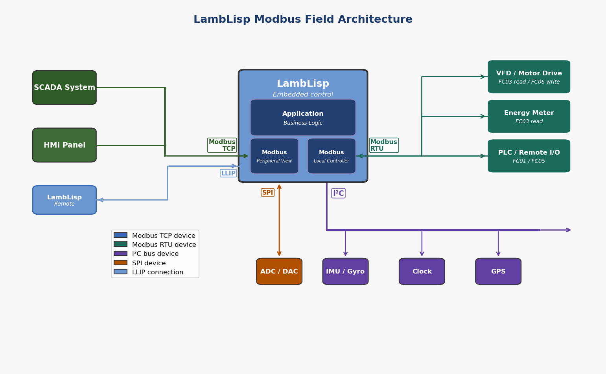
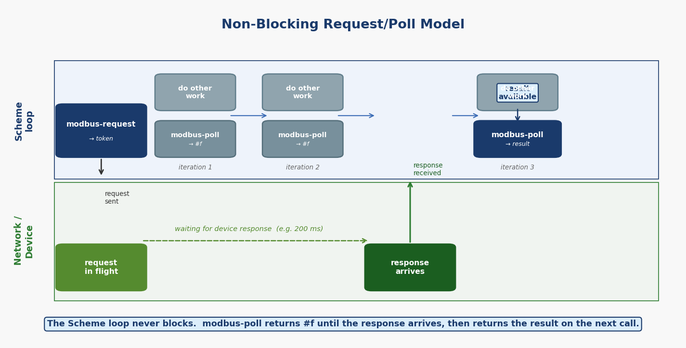
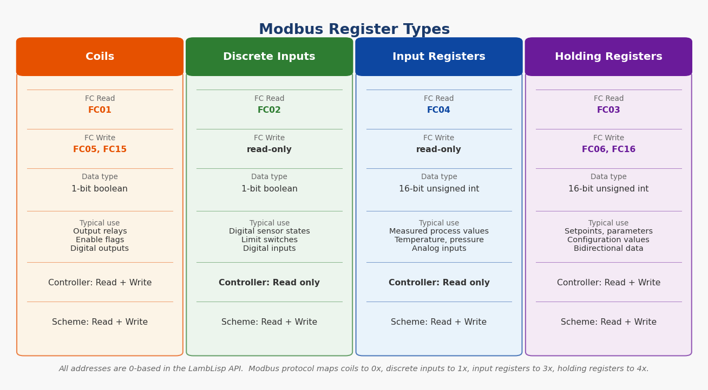
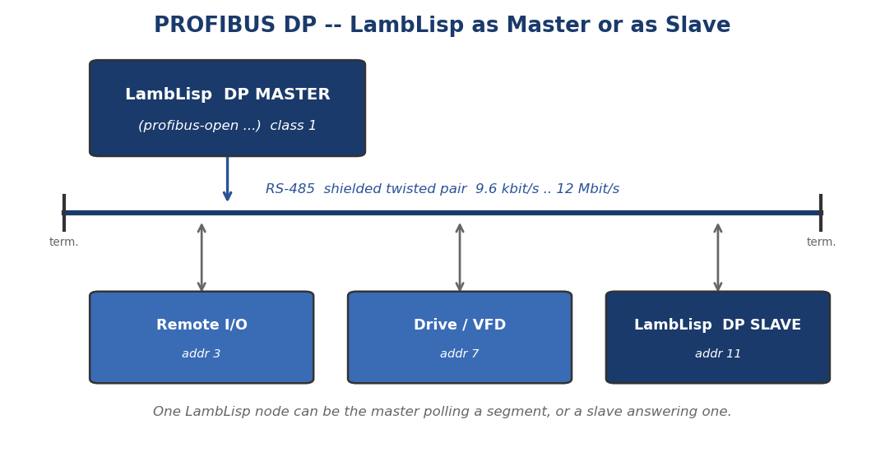
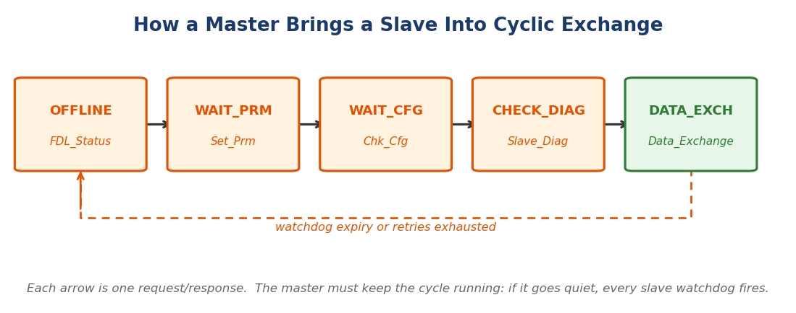
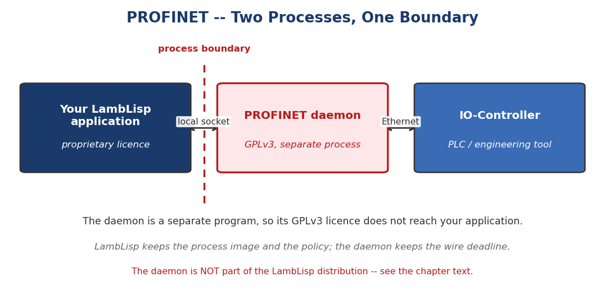

|
LambLisp 01 Red Fox Alpha
From AI to Actuator
|
|
LambLisp 01 Red Fox Alpha
From AI to Actuator
|
LambLisp by  Copyright 2026 Frobenius Norm LLC.
Copyright 2026 Frobenius Norm LLC.
LambLisp is a real-time implementation of the Scheme dialect of the LISP programming language. Scheme is governed by standards known as Scheme R5RS and Scheme R7RS. LambLisp is designed primarily for Scheme R5RS, with some features from Scheme R7RS and Common Lisp that aid in development of real-time embedded control systems.
LambLisp provides a robust and scalable Hardware Abstraction Layer (HAL). The LambLisp HAL adds many features focused on embedded controls, and enables convenient interoperability with existing device drivers or other C/C++ libraries.
LambLisp runs across a three-tier platform stack:
All three tiers communicate peer-to-peer via LLIP (LambLisp Interaction Protocol), enabling a scalable supervisory Lisp application that spans embedded sensors, local GPU inference, and cloud compute within a single unified language environment.
Try it in one line, with nothing installed:
docker run --rm -it ghcr.io/lamblisp/lamblisp:runtime
That boots straight to the LL=> prompt. :runtime is a multi-architecture index, so docker pull selects linux/amd64 or linux/arm64 to match your host – Apple Silicon, a Raspberry Pi, a Jetson or an ARM cloud instance all get a native image rather than emulation, which matters here because an emulated timing figure is a meaningless one. The per-architecture tags :runtime-amd64 and :runtime-arm64 remain available if you need to pin one explicitly. See Running in a Container.
Where to get LambLisp:
| Linux | the LambLispRT-v01-linux_* packages. Requires glibc 2.34 or later – Debian 12, Ubuntu 22.04 LTS, RHEL 9 or newer |
| Windows | a native LambLisp.exe – LambLispRT-v01-windows_x86_64 |
| Container | ghcr.io/lamblisp/lamblisp:runtime – no host glibc or CPU requirement at all |
| ESP32 and other boards | the per-board LambLispRT-v01-esp32* packages |
| Browser | open demo/index.html from any package – no download, no toolchain |
For more information:
LambLisp is copyright 2026 by Frobenius Norm LLC, a Massachusetts corporation.
LambLisp is a commercial product and requires a license when used to generate revenue, to promote other products or services, or for other commercial activity. Licensing provides LambLisp customization, hardware application development assistance, post-deployment support, and a warranty.
LambLisp may be used for non-commercial purposes, but comes with no support and no warranty of any kind.
What you need depends on what you are doing, and two of the three routes need no toolchain at all.
| I want to... | I need | start at |
|---|---|---|
| run LambLisp and write Scheme | a Linux host with glibc 2.34 or later (Debian 12, Ubuntu 22.04 LTS, RHEL 9 or newer) | Quick Start: Linux |
| the same, on Windows | 64-bit Windows 10 or later | Quick Start: Windows |
| the same, without installing anything | any host with a working Docker | Running in a Container |
| build anything from the package I downloaded | a Linux machine and platformio | Quick Start: The Package You Received |
| build and flash ESP32 firmware | a Linux machine, platformio, and the rest of this section | Deploy to ESP32 |
Only the last row needs a development toolchain. If you are evaluating the language, or your host is older than the glibc floor above, the container is the shortest path and installs nothing.
For embedded development you also need:
To install platformio:
Clone the repository (replace vxx with the current version number):
Every LambLisp package is locked to one target, and this section is the whole path from the download to a LL=> prompt. A short standalone copy of it ships in each package as QUICKSTART.md; this is the long form.
BUILD-INFO, in the package root, names the target and the exact commit, build date, toolchain and feature flags that produced the binaries. Quote those lines in any support request — they answer "which source is this?" in one place, which nothing else in the package can do.
Packages come in two shapes:
| If the directory has... | it is | and you can |
|---|---|---|
| platformio.ini, src/, lib/, ll_pio/, liblamblisp.a | a development package — Linux, or an embedded board | run the prebuilt binary and rebuild from source |
| only LambLisp.exe or LambLisp.bin beside data/, scm/, demo/, html/ | a runtime package — Windows, and other binary-only targets | run it; build on a Linux development package |
The full contents are listed under What's in the package?.
With platformio installed as described under Prerequisites:
There is no -e flag to get right. The platformio.ini in a package is generated for that one target and pins it with default_envs, so the bare command is the whole command — here and in every command below. The environment table in Supported Platforms and Boards describes the full development tree; a package carries the one row that applies to it.
What the first build does, so it does not look like a hang. It downloads a compiler toolchain and framework — on the order of a gigabyte, several minutes on a good link, with long silent stretches. It puts them in ~/.platformio-idf55, not the usual ~/.platformio, because the package's platformio.ini sets core_dir there deliberately: the build needs a specific ESP-IDF, and an isolated core directory keeps it from colliding with any other platformio project already on the machine. Later builds are incremental and quick.
Output lands in .pio/build/<target>/.
Connect the board and run both:
platformio finds the serial port itself. With more than one board attached, name it:
Resolve the port at run time; do not bake a device node into a script. Serial ports are enumerated dynamically and move between boots and between machines.
Building inside a container has one hard limit that is worth knowing before wiring anything up — see Flashing from a container.
115200 baud, already set in the package's platformio.ini. Any terminal emulator works too (screen, minicom) on the board's /dev/ttyUSB* or /dev/ttyACM*.
For anything past a REPL, use the LLIP client shipped in the package as tools/llip. It speaks LambLisp's own interaction protocol over the same serial line, or over TCP:
send is the fast path during development: push a changed .scm and reload it, with no reflash. The protocol itself is documented under LLIP.
| data/ | the filesystem image for this one target — the subset of the library the board boots with. This is what uploadfs writes and what setup.scm finds at startup. |
| scm/ | the complete LambLisp Scheme library source, shipped whole with every package regardless of target. Load from it at run time, or copy a file into data/ and re-run uploadfs to boot with it. |
An application goes in data/setup.scm — see What Happens at Startup.
| What you see | What it is |
|---|---|
| LL=> comes up but almost nothing is defined | the filesystem was never flashed — run pio run --target uploadfs; or, on a host build, LambLisp was started from outside the package directory |
| The first build sits silent for minutes | it is downloading the toolchain into ~/.platformio-idf55. Let it finish. |
| upload hangs or cannot open the port | the wrong USB port on a DevKitC-1 (use UART); a port the user has no permission on (join the owning dialout/tty group); or a container on macOS or Windows, which cannot see USB at all |
| Windows reports an unrecognised publisher | LambLisp.exe is not code-signed — More info, then Run anyway |
| Files missing on the board after a partition change | a flash-layout change presents as failed reads, not as an allocation error. Re-check board_build.partitions. |
The Linux build is the fastest way to explore LambLisp — no hardware required.
The executable is placed in .pio/build/linux_x86_64/program. Run it from the repo root so it can find the data/ directory, which contains setup.scm and the standard library files:
You will see startup messages followed by the LambLisp REPL prompt:
Try a few expressions:
Press Ctrl-C to exit.
LambLisp runs natively on 64-bit Windows. It is the same language and the same conformance result as the Linux build – what differs is the host interface, described at the end of this chapter.
64-bit Windows 10 or later. Nothing else: the download is self-contained, and there is no installer, no runtime to add, and no registry change.
Download LambLispRT-v01-windows_x86_64.zip and unpack it anywhere – your desktop is fine. You will get:
The first run will show a SmartScreen warning. LambLisp.exe is not code-signed, so Windows reports an unrecognised publisher. Choose More info then Run anyway. We would rather tell you this than have it surprise you: an unsigned binary is a statement about our certificate, not about the file you downloaded.
Open a Command Prompt or PowerShell in the unpacked folder and run:
Working directory matters: LambLisp.exe loads data\setup.scm at startup by relative path, so starting it from elsewhere gives cannot open input file: setup.scm. See Running from any directory below.
You will see startup messages followed by the prompt:
Try a few expressions:
The second one is worth a moment: that product exceeds 64 bits, and LambLisp answers it exactly because the numeric tower promotes to arbitrary-precision integers automatically.
Press Ctrl-C to exit.
LambLisp.exe finds its library relative to the current directory, so adding the folder to PATH alone is not enough – running it from elsewhere will fail to find setup.scm. Two ways to launch it from anywhere:
A shortcut. Right-click LambLisp.exe, Create shortcut, then open the shortcut's Properties and set Start in to the unpacked folder. Double-clicking the shortcut then works from wherever it lives, including the Start Menu or the taskbar.
A one-line batch file. Save this as lamblisp.cmd somewhere on your PATH, with the path edited to match where you unpacked:
Then lamblisp works from any prompt. (Double-clicking LambLisp.exe in Explorer also works as-is, because Explorer sets the working directory to the containing folder.)
The language is identical. The same conformance suite runs on both with the same result – 1355 pass, 0 fail, 15 exception – and the 15 are the cases needing full re-entrant call/cc, listed under Real-time Guarantees. Your .scm files move between platforms unchanged.
Differences are confined to the host interface:
| Windows | Linux | |
|---|---|---|
| GPIO procedures (pinMode, digitalWrite, digitalRead, ...) | present, in-memory loopback | same loopback, or real pins where the hardware is |
| I²C and hardware serial | not present | present where the hardware is |
| TCP sockets, LLIP remote debugging | not present | present |
| ESP32 cross-build and flashing | not from Windows | full |
The GPIO row is worth reading carefully, because "present" does not mean "connected to anything". The 26 commonio procedures are registered and callable, and digitalRead returns whatever digitalWrite last wrote to that pin – a loopback, so code written against them runs unmodified on the desktop before it ever reaches a board. That is the same behaviour any host build has, Linux included; what Linux adds is a real backend when real hardware is present.
For embedded development – building firmware and flashing a board – use the Linux build. The Windows build is for writing and running Scheme: language work, algorithm work, and running the test suites.
A published container image runs LambLisp with nothing installed on your machine, and with no dependency on your host's glibc, CPU vintage or distribution.
That drops you at LL=> with the standard library loaded. --rm removes the container when you exit; nothing persists on your machine.
To work on your own files, mount a directory and load by its path inside the container:
Writing works too, so output lands back on your host:
Do not add -w /work. LambLisp loads its standard library from data/ relative to the working directory, which is why the image sets one and starts there. Overriding it stops the container before LambLisp runs at all, with a no such file or directory from the runtime rather than anything that mentions Scheme. Mount wherever you like and use absolute paths inside the container; that is the pattern above, and it is the one to use.
ghcr.io/lamblisp/lamblisp:runtime carries the prebuilt host runtime, the complete Scheme library, this manual, and the browser demo. It carries no toolchain – no compiler, no PlatformIO, no LaTeX. That is deliberate: the binaries are already built and the documentation is already generated, so a toolchain would add gigabytes to produce files that are in the image already.
:runtime is a multi-architecture index, so docker pull resolves it to your host's architecture. The per-architecture tags are published too, for when you need to pin one – a CI job building for a different host, or a registry mirror that does not carry indexes:
| host architecture | resolved automatically from | explicit tag | download |
|---|---|---|---|
| linux/amd64 | ghcr.io/lamblisp/lamblisp:runtime | :runtime-amd64 | 279 MB |
| linux/arm64 | ghcr.io/lamblisp/lamblisp:runtime | :runtime-arm64 | 171 MB |
Those sizes are measured, not estimated, and they differ enough to be worth stating separately. :full is amd64 only – it carries cross-compilers, so an arm64 variant would be a different build rather than a re-tag.
Pulling the amd64 tag on an arm64 host does not fail loudly – Docker runs it under emulation, which is slow and makes any timing you measure inside it meaningless. Check what you actually have with docker inspect --format '{{.Architecture}}' ghcr.io/lamblisp/lamblisp:runtime.
Building and flashing ESP32 firmware is not in this image. For that, use the Linux package and a local PlatformIO install; see Deploy to ESP32, and in particular Flashing from a container if you intend to build inside a container at all – USB passthrough does not work on every host.
Every image records the packages it was built from:
The same information is on the image itself, without running it:
The commit recorded there matches the published release repository, so an image and a checkout of the same release are the same code.
ghcr.io/lamblisp/lamblisp:runtime lets you run the language. A second image lets you build it – your own C++ primitives, your own Scheme library, linked against the prebuilt runtime library – with no toolchain installed on your machine:
It is much larger than the runtime image (about 5.8 GB against 273 MB) because it carries every published release together with the cross-compilers for all of them.
What is inside. Twelve release packages under /opt/lamblisp, one per target – the ESP32-S3 boards, the ESP32-C5, the Freenove WROVER and 4WD kits, Linux x86-64 (plain, CUDA and HIP), Windows, and the loader. Each is the complete package you would otherwise download: src/ minus the internals, the full scm/ library, lib/, liblamblisp.a, a prebuilt LambLisp.bin, the manual and the HTML reference. PlatformIO and every toolchain are preinstalled, with PLATFORMIO_CORE_DIR and PATH already set, so nothing needs configuring.
Just run it. The image's default command starts the host runtime, so this drops you at a prompt exactly like the runtime image:
Build a customised runtime. This is what the image is for. Each package's platformio.ini is locked to its own target, so pio run needs no -e:
A host build of an unmodified package takes about half a minute. Cross-building for a board is the same command in that board's directory:
Keep your work. A container filesystem disappears when the container exits, so copy a package out to a mounted directory before editing it:
On Windows and macOS. The image is a Linux amd64 container, which is the ordinary case for Docker Desktop – on Windows it runs under the WSL2 backend, on Intel macOS natively. Two differences are worth knowing before you copy the commands above:
--device passthrough for flashing does not work on Docker Desktop at all – the daemon runs inside a VM that cannot see your host's USB ports. On Windows you would need usbipd-win to attach the device into WSL2 first. Build in the container, flash from the host is the simpler arrangement and the one we recommend.
Building is not flashing. The image builds firmware; it cannot reach a USB device unless you pass one in explicitly (--device /dev/ttyACM0) and the container user has permission for it. Flashing from a container has a further limitation worth reading before you rely on it – see Flashing from a container.
Verifying your download. docker pull prints Status: Downloaded newer image whether or not anything was actually transferred – if the layers are already in your local store, the command returns in seconds having fetched nothing. That is normally what you want, but it means the status line alone does not prove a download happened. The honest check is the digest:
and, for which release you have:
The image runs on any host with a working Docker. The host's own glibc version and CPU generation do not matter, because everything the binary needs is inside the image – which makes the container the most predictable way to run LambLisp on an older enterprise distribution.
The bare Linux packages have their own floor: they require glibc 2.34 or later, which covers Debian 12, Ubuntu 22.04 LTS, RHEL 9 and anything newer. If your host is older than that, the container is the supported route rather than a convenience.
Open the live REPL — no install, no account, nothing to download. It is the same interpreter that runs on an ESP32-S3, compiled to WebAssembly and running in your tab. Type (define (fact n) (if (= n 0) 1 (* n (fact (- n 1))))), then (fact 30).
It is a language demonstration and reports no timings, deliberately. LambLisp's real-time claim is a bounded garbage-collector pause on a microcontroller; a browser tab — with its own just-in-time compiler, its own collector, and its own background-tab throttling between you and the hardware — cannot demonstrate that either way. The pause figures that are claimed are measured on the boards, and appear in the product brief.
The LL=> prompt accepts any Scheme expression. Input is line-buffered — the REPL evaluates each line as it arrives.
Loading files:
On Linux, the working directory is the repo root, so prefix paths with data/:
On ESP32, the working directory is data/ on SPIFFS, so use the bare filename:
Error messages:
When an error occurs, LambLisp prints a diagnostic and returns to the REPL — the session is not lost. The GC and VM state remain valid; you can continue evaluating expressions immediately.
Exiting:
LambLisp ships with pre-configured PlatformIO environments for all supported hardware. The table below lists every environment in platformio.ini.
| Environment | Architecture | Flash / PSRAM | Notes |
|---|---|---|---|
| esp32-s3-devkitc-1 | ESP32-S3 | 4 MB / 8 MB | Primary test board; onboard JTAG debugger |
| esp32s3-n8r2 | ESP32-S3 | 8 MB / 2 MB | Higher flash, less PSRAM |
| Freenove-4WD-Car-Kit-ESP32 | ESP32 (classic) | 4 MB / 8 MB | Robotics demo platform |
| linux_x86_64 | Linux x86-64 | — | Full-featured POSIX build, no CUDA |
| linux_x86_64_cuda | Linux x86-64 | — | POSIX build with CUDA support |
| linux_x86_64_profile | Linux x86-64 | — | gprof profiling build (-O1 -pg) |
| linux_aarch64 | Linux AArch64 | — | Cross-compile for Jetson / ARM servers |
| linux_aarch64_cuda | Linux AArch64 | — | Jetson native build with CUDA |
| linux_x86_64_hip | Linux x86-64 | — | POSIX build with ROCm/HIP support |
| windows_x86_64 | Windows x86-64 | — | Native LambLisp.exe, cross-built with MinGW-w64. Language build only — no sockets, no raw terminal, no native code generator |
| wasm32_browser | WebAssembly | — | The in-browser demo shipped as demo/ in every package |
| wasm32_wasi | WebAssembly | — | WASI build, used by the conformance tier |
LambLisp runs natively on Linux without any microcontroller hardware. The Linux builds share the same Scheme interpreter, GC, and standard library as the ESP32 builds; only the hardware-specific modules (Arduino GPIO, I2C, WS2812, etc.) are omitted.
To build and run the Linux x86-64 version:
For the CUDA-enabled build (requires an NVIDIA GPU and CUDA toolkit):
For profiling with gprof:
The AArch64 environments cross-compile on Linux x86-64 using the AArch64 GCC toolchain, or build natively on the Jetson Orin Nano itself:
CUDA support is compiled in on the linux_x86_64_cuda and linux_aarch64_cuda environments. The C++ layer registers thin bindings to the CUDA runtime API, keeping their native names so they map one-to-one onto the familiar cuda* calls. At startup, setup.scm automatically loads Cuda.scm, which adds device-introspection and demonstration helpers on top of those bindings.
Runtime bindings (registered by the CUDA build):
| Procedure | Description |
|---|---|
| cudaGetDeviceCount | Number of CUDA-capable devices visible to the process. |
| cudaGetDeviceProperties | Device properties (name, total memory, compute capability, …) for a device index. |
| cudaMalloc / cudaFree | Allocate / free device (GPU) memory. |
| cudaMallocHost | Allocate page-locked (pinned) host memory. |
| cudaMemcpy | Copy between host and device; direction constants cudaMemcpyHostToDevice, cudaMemcpyDeviceToHost, cudaMemcpyDeviceToDevice. |
| cudaMemset | Fill device memory with a byte value. |
| cudaStreamCreate / cudaStreamSynchronize | Create a stream / block until its queued work completes. |
| cudaDeviceSynchronize | Block until all device work completes. |
| cudakernel-vectorAdd | Built-in element-wise vector-add kernel (example / benchmark). |
| cudaLaunch-kernel1 | Launch a registered device kernel. |
Helpers from Cuda.scm:
| Procedure | Description |
|---|---|
| have-Cuda | #t when the CUDA bindings are present in the current build. |
| cuda-printprops / cuda-printprops-brief | Print full / one-line device properties. |
| cudaStart | Report device count and properties at startup. |
| cudaTest1 / cudaTest2 | Self-test / demo kernels (vector-add round-trip). |
An AMD HIP/ROCm backend (linux_x86_64_hip) mirrors the same binding names, so code written against the cuda* API runs unchanged on AMD GPUs.
Cuda.scm is always loaded by setup.scm on CUDA builds. On non-CUDA builds the file is absent and the load is skipped silently. The linux_x86_64_cuda environment is convenient for developing and testing CUDA-dependent code on a desktop GPU before deploying to the Jetson.
From a package, there is no environment to name — see Quick Start: The Package You Received, which is the shorter path and the one a customer wants:
From the full development tree, where platformio.ini carries every environment in the table above, name the one to build:
For the Freenove 4WD Car Kit, substitute Freenove-4WD-Car-Kit-ESP32 for the environment name.
If you build inside a Docker container, check this before you wire anything up, because the symptom otherwise looks like broken hardware:
| host | build firmware | flash a board |
|---|---|---|
| Linux | yes | yes – pass the port in, e.g. --device=/dev/ttyUSB0 or --device=/dev/ttyACM0, and make sure the container user is in the owning tty group |
| macOS, Windows (Docker Desktop) | yes | no |
On macOS and Windows, Docker Desktop runs your container as a guest inside a virtual machine, and there is no USB bridge into that VM. No Docker flag fixes this; the device simply is not there. The container can compile firmware perfectly and --target upload will then hang or report that it cannot open the port.
On those hosts, build in the container if you like, but flash from the host with a host-side esptool.py, pointing it at the .bin the container produced. That is the arrangement we recommend and the only one we test: build in the container, flash from the host.
On Windows, the host can supply what Docker cannot. The missing piece is a USB bridge into the VM, and usbipd-win is one – it attaches a host USB device into WSL2, after which a container on the WSL2 backend sees it as an ordinary /dev/ttyACM* and --device works:
Then, from WSL2, pass the port in the usual way (--device=/dev/ttyACM0). This path is not part of the supported route and we do not test it – it is recorded here because the sentence above is true of Docker and not of the host, and a reader who concludes "impossible" would be giving up one step too early. On macOS there is no equivalent: flash from the host.
Do not hardcode a device node in an image or a script. Serial ports are enumerated dynamically and move between boots and between machines; resolve the port at run time and pass it in.
After flashing, open a serial monitor at 115200 baud:
Or use any terminal emulator (screen, minicom, etc.) on the appropriate /dev/ttyUSB* or /dev/ttyACM* device. You will see the startup log followed by the LL=> prompt.
When LambLisp starts, main.cpp (provided in the repo) does the following:
The provided setup.scm loads the standard LambLisp library files and defines a loop procedure suited to the demo hardware. For a new application, edit setup.scm (or the files it loads) to define the behavior you need. The minimum setup.scm for a custom application is:
The file name setup.scm is fixed. The procedure name loop follows the Arduino convention but is not enforced by the VM; any number of LambLisp procedures can be called from C++ loop() at different points.
LambLisp is delivered as a finished executable, but more importantly, as a set of library components that allow scalability by adding more native functions to LambLisp. There is a separate package for each supported architecture.
The package root contains these files and directories. A runtime package carries the documentation and runtime rows only; a development package carries all of them.
| File or Dir | Description |
|---|---|
| QUICKSTART.md | Run it, build it, flash it — the short path, and the place to start |
| README.md | A mini-README, with links to the manual online |
| BUILD-INFO | Provenance: which commit, toolchain, build date and feature flags produced these binaries |
| LambLisp.bin | Pre-built application binary — a host executable, or ESP32 firmware, depending on the target |
| liblamblisp.a | The LambLisp VM as a static library, linked by platformio.ini with -L$PROJECT_DIR -llamblisp |
| LambLisp.pdf | This manual, in PDF form |
| html/ | This manual, in HTML form — open html/index.html |
| LambLisp_ProductBrief.pdf | Specifications, embedded benchmarks and measured GC-pause figures |
| LambLisp_Announcement.pdf | Product announcement |
| demo/ | The in-browser demo — open demo/index.html, no toolchain needed |
| src/ | C++ main program (main.cpp), platform layer, and device driver source |
| lib/ | Vendored Arduino libraries, and selected source examples for extensibility |
| data/ | The filesystem image for this target: setup.scm, the standard library it loads, features and I/O interfaces. uploadfs writes this to the board. |
| scm/ | The complete LambLisp Scheme library source, shipped whole with every target — see `data/` and `scm/` |
| tools/llip | The LLIP command-line client: REPL, remote eval and file transfer over serial or TCP — see LLIP |
| platformio.ini | The build configuration, generated and locked to this package's one target |
| ll_pio/ | Board, variant and partition definitions referenced by platformio.ini |
| llloader/ | OTA factory-partition recovery loader, on OTA-capable targets — see OTA |
There are also architecture-specific copies of the generically named LambLisp.bin and liblamblisp.a, which may assist those deploying multiple architectures.
| Elements of Lisp |
|---|
| Spaces are separators between expressions. |
| If an expression starts with (, then it is a list and requires a matching ). |
| Otherwise, the next group of characters, up to a space, is a symbol. |
| In both cases the expression is called a symbolic expression, or S-expression. |
| A list contains 0 or more S-expressions between its parenthesis, as in () (foo) (1 (2 three) 4). |
| There is an environment that associates symbols with values. |
| There is a small foundational set of procedures that accept arguments and return new S-expressions. |
| An evaluator continuously reads S-expressions, evaluates them, and returns the result. |
| If the evaluator encounters a list, the first item in the list must be a procedure and it will be applied to the arguments provided. |
In the Lisp world, any item not a list (or more accurately a pair) is called an atom. Numbers, strings, and vectors all are atoms. Perhaps surprisingly, the foundational Lisp does not require these, as they can be implemented using purely symbolic programming. There is an important distinction here between the mathematical foundations of Lisp, the programming language called Lisp, and implementations of Lisp.
Many areas of mathematics have only thrived after a notation was introduced to facilitate reasoning about it. Think of sine, cosine, the square root symbol, integral and differential calculus, matrix algebra, etc.
Likewise, Lisp established a small set of symbols and their behavior when encountered in a program. In the days of pen and paper, Greek letters would have been used, as they were in the lambda calculus from which Lisp inherits its intellectual grounding and the lambda operator. In the teletype era, only the typewriter symbols were available.
Lisp was created to perform symbolic reasoning. Lisp's elements of reasoning about symbolic expressions:
| Lisp symbolic expressions | Description of operation |
|---|---|
| symbols | A sequence of non-spaces, such as x, 2day, and next<>thursday. Non-space characters may appear anywhere in a symbol. |
| #f and #t | #f represents false, while #t represents true. Anything not false is considered true. |
| () or NIL or nil | A singleton that is an atom and a list, but not a pair. Used as a sentinel to terminate lists. |
| lists | A set of parenthesis enclosing 0 or more symbols or lists, as in (1-element-list) and (nested (nested () list) lists) |
| environment | An association between symbols and values. Often implemented as a list of pairs: ((x 12) (2day 42)). |
| if | Execute test and choose from alternate code paths. |
| eq? | Accepts 2 arguments and returns false if they are not the same S-expression. |
| define | Update or install new (symbol value) pair in the current environment. |
| set! | Update existing (symbol value) pair in the current environment. |
| lambda | Creates a procedure; i.e., a set of formal parameters, a body of Lisp code, and the environment in which it was defined. |
| eval | S-expression evaluation; if a list, the procedure at the front of the list is applied to the remaining arguments. |
| apply | Execute the body of a lambda, in its original environment enhanced with the arguments to apply paired to the procedure's formal parameters. |
| quote | Prevent evaluation of something that would normally be evaluated. |
| macro | A procedure that accepts its arguments unevaluated, i.e., as source code, and returns new source code to be executed in its place. |
Some terms should be defined in the Lisp context; for example operators, functions, procedures, macros are related concepts, but not identical.
| Important axiomatic behaviors |
|---|
| The word operator is used for any S-expression found in the first position of a list at evaluation time. |
| An operator must resolve to a procedure before it can be applied, i.e., the operator position may be occupied by a symbol or other expression. |
| The word function is ambiguous and may refer to a lambda expression or a procedure. |
| A lambda expression defines a function's parameters and body, such as (lambda (p1 p2 p3) (do-something p1 p2 p3)) |
| The first argument of a lambda expression is the list of formal parameters, and the remaining arguments (the body) are S-expressions to be evaluated at runtime. |
| A procedure is a pair consisting of a lambda expression and an environment in which the procedure was created. |
| A macro is a procedure whose arguments are not evaluated before the code body is applied; afterwards the result of applying the code body is further evaluated. |
This by itself is an incredibly powerful set of mathematics, but note that it has no numbers or strings. That is because, from the point of view of symbolic expressions, numbers and strings are just symbols. It is easy to write a function to add 2 digits when the digits are just 0 and 1. From this point of view numbers are not fundamental or axiomatic. Instead they are a result of agreement on the meaning of symbols and their combination. The same can be said of strings. When the problem is presented in terms of symbols and their relationships, programs become amenable to proofs of correctness by familiar methods such as substitution and induction.
Adding numbers, strings, and vectors to Lisp's capabilities provides computing facilities for real-world problem types. Adding these types means adding representations for them, and adding operators that can manipulate them. Lisp follows the usual rules for representing numbers and strings, and so below we present a list of typical symbolic expressions:
Numbers, strings, and symbols are atoms. When a number or string is encountered by the evaluator it is not further evaluated, or put another way, it evaluates to itself. When a symbol is encountered by the evaluator, the symbol is located in the current environment, and the evaluator returns the value associated with the symbol.
Note that the expression (1 2 3) is a valid S-expression (a list), but the evaluator will reject it because the first element of the list (1) is not a procedure. The evaluator must be able to apply the first element, which therefore must be a procedure.
Lisp was developed by discovery, rather than predefinition, and each successful experiment led to another language "standard feature". Eventually this led to overstuffing, as witnessed by Guy Steele's 1000-page tome Common Lisp. With a specification that size, many partially compatible subsets emerged, losing some of the Common in Common Lisp.
In reaction to the size of Common Lisp, an effort was made to extract the most useful and essential behaviors of Lisp into a simpler package, which became Scheme. Just as effectively as Guy Steele had recorded Common Lisp for posterity, he was also a key figure in factoring out the fundamental behaviors exhibited by a Lisp machine. Those basic behaviors, in combination, could be used to produce all the other more complex behavior. The result is the set of functions found in Scheme.
The Scheme variant of Lisp has many features familiar to programmers in other languages, such as lexical scoping and dynamic typing, as well as advanced features such as tail recursion, first-class procedures, and continuation-passing style.
LISP is the original language of artificial intelligence, and is the second-oldest programming language still in use (after Fortran). It was designed for symbolic reasoning rather than computation. From the theoretical base beginning about 1960, LISP quickly grew into a practical language with several well-supported variants. LISP and LISP programs were always uppercase; the 8-bit byte had not yet been standardized and text was often packed into 6-bit chunks with no room for lowercase.
Today, approaching the mid-21st century, Lisp is active in many variants: SKILL from Cadence Design, AutoDesk Lisp, ChezScheme from Cisco, and others. Like LambLisp, these are often tailored to solve problems in a specific domain, and descend from either Scheme or the earlier Common Lisp. LambLisp is optimized for intelligent real-time control of physical processes.
The LambLisp bibliography contains a mini-history of automated symbolic reasoning since the Renaissance. It contains work beginning with Isaac Newton and Bertrand Russell, through to Alonzo Church, John McCarthy, and Edsger Dijkstra, as well as many less famous and more recent authors. In the 21st century development of automated symbolic reasoning continues, with recent publications on already well-trodden topics such as real-time garbage collection and macro expansion. New approaches to artificial intelligence have created renewed interest in systems (like Lisp and its descendents) that offer provable correctness and traceable results.
Any papers cited in the LambLisp documentation can be found in the bibliography at
https://github.com/wawhite3/LambLisp-Bibliography
Additionally, these books provide excellent exposure to many of the issues encountered when developing a Lisp programming system:
Lisp invented, aggregated, or evolved all the important techniques used in programming languages today, including interactive computing, just-in-time compilation, on-the-fly code updates, macro expansion, polymorphism, object systems, lexical and dynamic scoping, tail recursion, garbage collection, and exception handling.
Lisp offers tremendous scalability. At the micro end, Lisp makes an ideal assembly language, with a simple prefix notation that can transform directly into machine instructions. At the macro end, new functions can be defined and combined dynamically in a way not possible in C++ or Python. These new functions can be the results of substantial analysis performed elsewhere (call it AI), putting it at a scale billions of times larger than the assembly language application.
Lisp is interactive and Lisp programs can be modified on-the-fly, while they are running. Programs can evolve. In other languages, predefined parameters may be tuned during operation, but the code does not change. In Lisp, the code may continually evolve, and provides Lisp with the power of induction and of continuous improvement.
The concept of interactive computing applies not only to interaction with people. Machine-to-machine interaction is an inherent behavior of the interactive nature of Lisp. In LambLisp-based control systems new algorithms can be developed off-system, and then downloaded without interrupting the controlled process. Today, those off-system resources can be AI assets in the cloud, and LambLisp can be the target of AI-generated code.
An important part of the attraction of Lisp is the simple syntax, based on just a few rules that are compact and fast on any processor, even in 1960. This led to a variety of Lisp dialects; two of the most important are Common Lisp and Scheme. Common Lisp is in the "large Lisp" category, although there are many partially-compatible subset implementations.
Scheme is in the "medium-size Lisp" category, and was a purposeful attempt to distill the fundamental behaviors of Common Lisp into a simpler set.
In the lifetime of Lisp, many processors have come and gone. Today ARM-based processors have scaled to be competitive in many control applications. There is a wide variety of boards and modules available, and plenty of inexpensive parts running on the commonly available I2C bus. Today's 32-bit and 64-bit microprocessors and edge SoCs present an ideal platform for Lisp real-time control.
There are some features that make LambLisp special in the Lisp menagerie.
LambLisp provides bounded loop times, sub-microsecond interrupt response, and non-blocking asynchronous scheduling through eight real-time guarantees spanning GC latency, loop control, ISR paths, and deferred tasks.
See: Real-time Guarantees · Garbage Collection · Memory and GC Tuning
LambLisp is a multi-platform library: the same application Scheme code runs unchanged on ESP32, Jetson, and Linux. The platform-specific layer is thin — Arduino-style I/O on ESP32, POSIX I/O on Linux, CUDA bindings on Jetson. All language semantics, the GC, and the REPL behave identically. Develop interactively on Linux; deploy to ESP32 by copying the .scm file.
LambLisp implements the Scheme R5RS core in full. The one deliberate departure is that call/cc is escape-only: it supports non-local exit, but not re-entrant continuations that resume an extent after it has been left. dynamic-wind is implemented and runs its after thunk on both the normal exit and the error unwind. All other R5RS features are supported. See Why only escape-only call/cc? for the reasoning and the two limits. R7RS-small is complete apart from re-entrant continuations. The library system — define-library and import, including the only, except, prefix and rename forms — is implemented, so the sole remaining gap is the escape-only call/cc described above. Of the 1370 R7RS conformance tests, 1360 pass and 0 fail; every one of the 10 exceptions is that single re-entrant case. See the Compatibility Matrix. Scheme is widely taught and there is plenty of information online. There are also many desktop versions of Scheme available for study.
See: Compatibility Matrix
LambLisp can incorporate existing C/C++ libraries unchanged; existing Arduino drivers require no modification. Six integration patterns — stateless procedures, stateful GC-managed objects, device facades, syntax forms, proprietary distribution, and data marshaling — cover the full range of embedding needs.
See: C++ Integration
Lisp behavior depends on a continuous supply of memory, which must be reclaimed when no longer in use, and then later reissued. The reclamation process is called garbage collection or just GC.
Until the 1990s, Lisp could not be applied to real-time control applications due to unpredictable lapses in control during GC. While GC was occurring, the controlled application was left unsupervised. This problem was solved by Taichi Yuasa, based on earlier work by Edsger Dijkstra. Yuasa provided a provably correct solution that divided GC into increments, and provided formulas for the key metrics in a correct implementation.
In LambLisp real-time guarantees are provided by Yuasa's GC formula. LambLisp continuously calculates the GC start threshold (Yuasa's M metric) and allocates additional memory when required (Yuasa's N metric).
LambLisp realizes additional performance gains with GC idle-time look-ahead. By setting a value for idle threshold, idle time can be applied to garbage collection; later during peak loads GC passes can be omitted altogether. This effectively pushes some workload out of the peak periods and into idle periods, reducing peak loop time.
These idle-time collections will be larger than the normal GC quantum. A small additional benefit is therefore obtained because GC loop overhead is spread over a larger collection than the normal GC quantum.
See: Garbage Collection · Memory and GC Tuning
Any C++ function with the three-argument mop3 signature becomes a native Scheme procedure with no FFI overhead — the same mechanism used to implement all LambLisp built-ins.
See: C++ Integration
LambLisp supports incremental hot-reload without a reboot — new Scheme code takes effect immediately in the running control loop, with no flash erase and no control gap.
See: Code Lifecycle: Incremental Hot-Reload · Hot-Reload Without Reboot
A part of the success of Python has been its pervasive use of hash tables. Hash tables are also used extensively in LambLisp, supporting the representation of environments, dictionaries, and objects. LambLisp dictionaries are hierarchical, providing a parent/child relationship between hash tables. The internal execution environment of LambLisp is a dictionary.
See: The dictionary type · Hierarchical dictionaries · Execution environment
Much of LambLisp behavior is implemented in the runtime system, a collection of compiled routines that perform the basic operations defined in the Scheme specification. The process of compiling begins with "expanding" those symbols whose values are functions. In this case, "expanding" means to replace the symbol with its value (a procedure) wherever appropriate. This can be done case-by-case; when a LambLisp program is fully transformed this way, execution becomes a series of linked C++ function calls. The downside to this is that debug information is lost.
See: Scalable Execution Pipeline
Lexical scoping is what most programmers are already familiar with. C/C++ and Python programmers will discuss local variables and global variables; these are typical in lexical scoping. Some Lisps (but not Scheme or LambLisp) have dynamic environments and special variables, which do not follow the familiar lexical convention. In Scheme and LambLisp there is only lexical scoping.
See: Execution environment is a hierarchical dictionary
Tail calls allow many problems to be solved recursively without a growing stack, allowing compact, inductive code in place of iteration.
Continuation-passing style is a programming idiom on which the next step in a computation is always an extra argument to every procedure. That "next step" is called a continuation. When a procedure has determined its result, instead of returning, it tail-calls the continuation. This is an elegant way to solve many problems by induction.
See: Interpreter & compiler organization
Procedures are created as the result of evaluating a lambda expression. They get created, stored, and destroyed, just as any other value. They can be passed as arguments to other procedures. In LambLisp the nlambda and macro expressions are specialized procedures.
See: lambda, nlambda, and macro
C++ objects with persistent state can be placed under LambLisp GC control and passed as first-class Scheme values; they are automatically deleted when they become unreachable.
See: C++ Integration
| LambLisp Features |
|---|
| R5RS core fully implemented; call/cc is escape-only by design and dynamic-wind is supported. R7RS-small complete apart from re-entrant continuations — 1360 of 1370 conformance tests pass, 0 fail. |
| Additional features from Scheme R7RS and Common Lisp specifications. |
| Runs on 32-bit ESP32/ESP32-S3, 64-bit x86-64, and 64-bit AArch64 (Jetson). |
| Full Linux builds — essential edge and supervisory tier, not a port. |
| High-level implementation of language primitives for compact high performance. |
| Bytecode compiler and native code generator (JIT) for x86-64, AArch64, and Xtensa LX7. |
| Arduino-compatible interfaces for digital & analog I/O, I2C, WiFi, etc. |
| Easy addition of manufacturer-provided C/C++ hardware drivers. |
| Easy integration of application-specific C++ functions. |
| Leverage existing Arduino skill set, gcc-based tool chain, C runtime. |
| Adaptive incremental garbage collector for fast, uniform loop times. |
| Selectable run-time packages (math, ethernet etc) to control program size. |
| Virtual memory capability from remote or local storage. |
| Incremental code updates over-the-air without pausing control or rebooting. |
Terms introduced in this chapter — cell, sexpr, dict, env, GC phase, thunk, mop3, NCG — are defined in the Glossary at the end of this document.
During the 1960s, a great many of the desired and desirable behaviors of programming languages were still being worked out. While Fortran was used heavily for numeric computation, lexical scoping (which C programmers experience as "local variables") arose in the Algol language, and later "message passing" systems (primarily SmallTalk) resulted in the "tail recursion" technique and interactive computing.
LISP provided a significant abstraction of the computation process. By operating primarily on addresses rather than values, Lisp provided a method for creating new and arbitrary data structures. A great deal of research and discussion was expended on functions and their abstract properties (fexprs, property lists, nlambdas and the rest). With these tools and techniques, Lisp provided a facility for reasoning, not just calculating.
The experimental nature of Lisp led to a large number of overlapping solutions to overlapping problems. This led to the development of Common Lisp, a 1000-page compendium of Lisp functions that had proven useful.
At the same time, there was a realization that "more and bigger" Lisp was not necessarily a good thing, producing many incompatible partial implementations. An alternative mindset emerged: a small set of language primitives would be easier to standardize, provided that set was sufficient to construct the richer functions found in Common Lisp.
These and other ideas — especially tail recursion and continuation-passing style — came together in Scheme, designed in the 1970s to integrate the theoretical advances and practical understanding accumulated over the previous 15 years.
Scheme went through several iterations and the usual technical-committee process, resulting in two main specifications today: R5RS and R7RS. There has always been tension between Scheme minimalists, who prefer a small set of primitives, and utilitarians, who prefer a language useful for real-world problems. This led to the R7RS specification being divided into R7RS-small and R7RS-large, with R7RS-small already being significantly larger than R5RS.
In computer science, a dictionary is a data structure and set of operations for managing (key value) pairs.
| LambLisp function | Dictionary operations |
|---|---|
| dict-set! | install or replace a (key value) pair |
| dict-ref? | return a (key value) pair based on its key |
| dict-ref | return a value based on its key |
The name dictionary applies to the features and functions performed, and not to any particular implementation. A sequential search or a database query are both useful implementations of a dictionary for different purposes, with different performance expectations.
LambLisp uses several advanced techniques to ensure high performance dictionaries in embedded control.
Large or long-lived dictionaries are implemented as hash tables. When a dictionary is large or long-lived, great performance gains can be obtained by distributing the (key value) pairs throughout an array. To perform a lookup, compute a hash value for the key, and use that as an array index. The (key value) pair, if present, will be in the list of items at that index. The hash function, used to create a hash value from a key, produces a fixed-length number from the contents of the key. The output of the hash function must be the same whenever the same key is presented as input. The hash values produced should be widely distributed among the hash table indexes.
Small dictionaries are implemented as association lists, or alists. When a dictionary is small or short-lived, the one-time cost of creating a hash table is unjustified.
In hashed dictionaries, at each element of the hashed array there is a (very short) alist, so alist lookup is a foundational operation and should be as fast as possible.
LambLisp optimizes symbol lookup by computing hash values once when a symbol is created, and storing the hash value with the symbol. The most common symbol operation (test for equality of symbols) reduces to a fast pointer comparison when using a dictionary.
The dictionary type described above is a flat dictionary. That is, there is just one vector, and a (key value) pair is either present or not.
LambLisp implements hierarchical dictionaries. A LambLisp hierarchical dictionary consists of a list of frames, where each frame is a flat dictionary. Hereafter, any reference to dictionaries should be understood to refer to LambLisp hierarchical dictionaries. In cases where a flat dictionary is required, it will be called out specifically.
The fundamental operation in a dictionary is lookup. A lookup must be done to support every other dictionary operation: create, modify, delete etc. The lookup operation consists of providing a key K, and querying the dictionary for a (key value) pair having a key matching the key K provided.
When performing a dictionary lookup, each frame is checked in turn for a matching key. If a key is not present in the top frame of the dictionary, it may be present in succeeding (parent) frames. The dictionary is a first-class type in LambLisp, available to the Lisp application.
The dictionary type is a fairly general purpose data structure. Keys and values may be any type. Each frame may be an alist or vector, with the choice made on frame size and expected lifetime. Symbol keys are computed once and stored with the symbol, speeding up dictionary operations where the keys are symbols (as in environments and commonly as in object member identifiers).
The primary method of creating dictionaries is with the function alist->dict, which traverses an association list and returns a dictionary. The (key value) pairs of the alist are distributed into a hash table, which becomes a frame in the dictionary. It is also possible to specify a parent dictionary when creating a dictionary, or NIL if there is no parent (as in a flat dictionary). Because dictionaries are lists (of frames), they can be appended or examined with car and cdr, just as with other lists.
In addition to being available in the Lisp application, hierarchical dictionaries are central to several other aspects of LambLisp.
The execution environment is a hierarchical dictionary. In the Scheme specification, there are 2 environments mentioned, the syntactic environment and the interaction environment. The syntactic environment contains all those definitions that are found in the Scheme specification. The other is called the interaction environment. This is where application definitions are stored.
In LambLisp, the execution environment (which is a dictionary) is initialized with 2 frames. The base frame consists of the syntactic environment described in the Scheme spec, and the second (top) frame is the interaction environment also described there. Top-level definitions are installed in the interaction environment.
When a function is called, its formal parameters are paired with the associated runtime values, and that set of pairs is added as a new frame on top of the current execution environment. This naturally and elegantly implements lexical scoping.
Hierarchical dictionaries also form the basis for LambLisp's Object System (LOBS). Just as the dictionary presents an efficient model for the execution environment, it also provides an excellent base for an object-based approach.
In the object view each frame in a dictionary represents an instance of a class, while the parent frames in the dictionary represent the parent object instance. This leads naturally to inheritance behavior, including multiple inheritance.
In the LambLisp Object System, there is no need to separate class definition from class instantiation. An association list is used to create a new dictionary, and the same alist can be used to produce new instances. In effect, the alist is the class definition.
This leads to some interesting freedoms as compared with the C++ or Python approach to class definition and instantiation.
| LOBS features |
|---|
| Objects are created from an association list and (optionally) parent objects. |
| Objects inherit from their parent objects. |
| Multiple objects may inherit from the same parent object. |
| Objects may initialize from the same alist, but have different parent objects. |
| Objects may initialize from different alists, but may share a common parent object. |
| Objects may have new fields added/deleted any time, as any other dictionary. |
To use LOBS as a C++-style object system, do the following:
To round out the object model, LambLisp provides dict->obj. You have correctly perceived that this will convert a dictionary into an "object". This provides a minimal object-style accessor for a dictionary, such that (some-object 'foo) will return the value of the field foo in the object some-object. and (some-object 'foo 42) will set the corresponding field on some-object.
The simple set/get object model suffices for many cases. It is possible to add more complex behaviors by assigning procedures to dictionary values, and/or by enclosing dictionaries in a wrapper procedure.
Language implementations depend on primitives; these are the language elements that are assumed to exist when a programmer is programming in that language. For a high-level language, the if-then-else sequence is a common language primitive.
Low-level languages, such as assembly language, also have a set of primitives. Each primitive does less work when used, but by coding directly in assembly language optimization can be implemented that cannot at the higher level, and the result can be many times faster than a higher-level language. At some level, even a compiled high-level language is still interpreting a lower-level machine.
Many available Lisp implementations are based on underlying abstract machines. Two of the most important such abstract machines are the SECD machine (Landin, 1964) and the CEK machine (Felleisen and Friedman, 1987). TinyScheme, for example, uses an SECD machine as its execution target.
LambLisp implements interpretation of Lisp at a high level; each of the functions in the Scheme R5RS/R7RS specifications is implemented in C++. They all share the same C++ signature:
Sexpr_t any_function(Lamb &lamb, Sexpr_t sexpr, Sexpr_t env_exec)
The lamb parameter is the Lamb virtual machine instance which is to execute the operation. The parameter sexpr is the symbolic expression to be operated upon by the function, and env_exec is the environment in which to execute the function. The return type is also a symbolic expression. Note that env_exec is known to be a dictionary, and that its keys are all symbols.
This organization has several implications.
First, the language primitives are coded directly in C++, rather than interpreted at run time through a lower-level bytecode system. This makes compilation of the language primitives easy; simply replace the symbol with its value at read time, using a macro facility.
Second, the Scheme specification describes only a small set of primitives, with much of the language being "derived expressions". These derived expressions are not language primitives, but instead they either get expanded once at read time, or interpreted at run time. Their performance depends entirely on the expanded versions.
In the highest-performing cases, macros expand into machine code, utilizing the CPU registers directly to carry out Lisp operations. That high performance comes with costs. In an embedded system, that type of compiler would be included onboard, taking up space even though used only occasionally. Alternatively, an offboard compiler could be used. That makes some features difficult to implement, such as on-the-fly incremental code updates.
The derived expressions in the Scheme specification form a "compiler" that transforms Scheme source code into expanded code that relies on relatively few low-level primitives. Some of those lower-level primitives, such as if, define, and set!, are fundamental to the application of lambda calculus to computing, while others (such as mathematical functions) are necessary to solve practical problems.
The simple compiler has a disadvantage: the code it generates is simpler to execute than the source, but not simple enough to be fast unless it is designed to produce assembly-level native code. For example, an expansion of cond results in many sequential if functions to be executed. In an optimizing compiler, a series of low-level test-and-jump sequences will be coded inline, one for each if. This will be very fast.
Short of that, executing cond requires a pass through the main loop for each test clause. A system that expanded cond, but required sequential execution of if (in the Lisp context), would be relatively slower.
LambLisp has implemented nearly all the Scheme language elements as primitives, written in C++. This reduces the number of steps to be interpreted between source code intake, transformation into an abstract syntax tree (AST), and its execution in C++. In the design of LambLisp, a cond in Lisp source code corresponds directly to a C++ function cond(...). Encountering cond in an expression does not result in a chain of small bits of if execution. Instead, the C++ cond is called, either after its symbol is resolved in interpreted mode, or called directly through a pointer in compiled mode. All the clauses of the cond are executed in a loop at C++ speed, and not in a loop at the Lisp-language level or in a bytecode interpreter.
The chart above shows where each strategy lands on a log scale of relative execution speed. LambLisp's measured results confirm that bytecode and NCG tiers outperform the AST interpreter by 2–100× depending on the benchmark: loop-intensive code (iota, sieve) benefits most; recursive code (fib, tak) shows only a modest gain because each AST eval step invokes a full C++ primitive and performs more useful work per dispatch than a bytecode fetch-decode cycle.
The resource chart below shows the cost side of the same picture.
The AST, Bytecode, and NCG tiers of LambLisp cluster tightly at ~2–3 MB — the same GC heap fits all three. The dashed line marks the boundary where an offboard compiler becomes required; above it, the runtime image alone exceeds the total addressable PSRAM of an ESP32-S3. Chez Scheme's runtime stands as far to the right on the resource axis as it does on the performance axis, confirming that the ~250× speed advantage comes with a ~100× RAM cost — a trade-off that does not exist for embedded targets.
The optimizing compilers — Chez Scheme, SBCL, Chicken, Bigloo, Racket — deliver their performance by making assumptions that are false on an ESP32:
| Requirement | Desktop | ESP32 / LambLisp |
|---|---|---|
| External toolchain | Required (compiler + linker) | None — source loaded on device |
| RAM | 10 MB – 1 GB | ~2 MB PSRAM |
| Operating system | Full POSIX (mmap, fork, exec) | FreeRTOS (no VM, no fork) |
| Writable+executable memory | Available | Constrained; IRAM alias required |
| Garbage collector pauses | Tolerated (ms to tens of ms) | Must not exceed loop period (10 ms) |
| Hot reload without reboot | Not supported | Core requirement |
Compilation step. Chez and SBCL compile Scheme to native code on the development machine, producing a binary that requires linking against a full runtime. The compiler itself requires hundreds of megabytes. Chicken compiles Scheme to C and then to native code via GCC — the device never sees source code. LambLisp reads .scm files directly from SPIFFS at runtime; no offboard tool is ever involved.
Memory. The Chez runtime image alone exceeds the entire addressable PSRAM of an ESP32-S3. LambLisp fits in approximately 300 KB of Flash plus a configurable heap, making it a Scheme runtime designed for the target, not a port of a desktop system.
Real-time GC. Desktop collectors are designed for large heaps where a multi-millisecond stop-the-world pause is acceptable. A 10 ms GC pause violates a 10 ms control loop deadline. LambLisp's Yuasa incremental collector bounds the pause to a small constant per allocation, regardless of heap size.
Hot reload. Compiled systems require edit → compile → link → flash → reboot — tens of seconds of downtime during which the controlled process is uncontrolled. LambLisp can receive new code over LLIP and execute (load "/new-behavior.scm") inside the running loop.
The performance gap between LambLisp and an optimizing compiler (~250× for recursive code) is the price of eliminating all these dependencies. For applications that need that last 250×, the NCG tier is the path forward.
The two execution paths available in LambLisp — direct AST interpretation and optional bytecode compilation — are shown in detail in the pipeline diagram below. Both paths share the same GC heap, environment chain, and interaction environment; the bytecode compiler is an optional acceleration step triggered explicitly by the application.
The compilation process begins by reading the source code and creating an Abstract Syntax Tree (AST). The AST is an internal representation of the program, with each element of the source code being an element of the AST.
To represent the AST, LambLisp uses a "direct-connect" technique, in which high-level Lisp operations (implemented in C++) are executed through pointers directly embedded into Lisp objects. These objects correspond directly to high-level features in the language specification (define, lambda, etc). All of the LambLisp language primitives are implemented this way, and it is possible to add additional LambLisp functions implemented in C++. They are treated as any other first-class function.
It will help us to think of the running application as layers of virtual machines. In fact, there is a stack of virtual machines, starting at the bottom with a single transistor, and finishing at the top with whatever runtime inputs the system is designed to respond to.
Those inputs themselves arrive from another, external virtual machine, which has its own internal organization and its own set of inputs, computation, and outputs.
It is also useful to identify the boundary between the hardware virtual machines and software virtual machines. The illustration below shows a few layers representing the virtual machines involved.
The item labeled "Programs" above is its own virtual machine, consisting of multiple software layers. The layers below that are typically considered "hardware".
At the bottom is the very lowest virtual machine - a field effect transistor. These are operated such that the gate either allows or blocks electron flow through the substrate. When we ascribe meaning to the flow (either a 1 or a 0), the physical flows become meaningful symbols that people can use to communicate.
Transistors are assembled into several types of micro-machines that, when used together, become what we recognize as a "CPU". Symbols of additional complexity are created at every level: numbers, sums and products of numbers, comparison of numbers, interpreting numbers as instructions, etc.
The illustration above shows a typical control application breakdown. In this view, the code entities form a set with a partial ordering relationship, so any of the code entities in the diagram can rely on any of the other entities at an equal or lower level. They can also rely on any entity to the left.
In many loop-based control applications, there are a also few exceptional dependencies, whereby an entity may call another to its right or above. These often occur at system startup. For example, if there is one entity TIME that is responsible for knowing the time, it should not fail under any circumstances, even of not initialized and is unsure of the time. It must provide an answer of some kind.
Another example is when several different types of measurements are required to meet thresholds before the next process step can proceed. These measurements are often averaged over time, and a simultaneous value is required for all them to ensure process synchronization. Each software entity may have some work to do at synchronization time. Each may query the application control layer to obtain information about the larger environment it is operating in, such as whether the current loop is the synchronization loop, and adapt its behavior as needed.
When source code is read in, the reader front end of the interpreter tokenizes the text, parses the resulting code, and constructs an abstract syntax tree (AST). The AST is the executable version of the code, an ordered collection containing all the parts and their relationships. Because the resulting executable is a series of direct links, the AST can be traversed rapidly without a lookup table, and because the tree end nodes are high-level functions (rather than low-level bytecodes), the result is a fast interpreter.
Once the interpreter is available, and correctly executes the AST, the macro facility of Lisp is used to transform high-level nodes in the AST into a collection of lower-level nodes that perform the same computation. In a simple Lisp, consisting only of if, eq? define, lambda, set! and cons, every correct program will be factored into those primitives.
When macros are expanded at read time, then the effect is one of incremental compilation. After each macro is expanded into a series of pointers to native C++ code, the result is a compiled program consisting of a tree of native code pointers to be traversed. In addition to allowing for faster execution, this tree-structured architecture is what allows Lisp programs to be modified on-the-fly.
One clear example of the performance advantage is in the Scheme cond function, which acts as a sequential if-then-elseif. Using the minimal set of primitives, cond would expand into a series of if functions, each of which would need to be processed by the Lisp eval loop. In LambLisp, cond is a primitive implemented in C++, and does not require its own set of passes through the eval loop of Lisp. This provides improved performance.
Memory reuse was recognized as a challenge right from the early days of programmable computers. Most computational results are intermediate; once calculated, they are quickly combined with other results and no longer required. Garbage collection is the pejorative term for activities related to the identification and reclamation of unused memory. Every programming language must have a strategy for reusing the memory space that no longer holds useful results.
There are 4 main ways to allocate memory: 1) static allocation, 2) stack allocation, 3) heap allocation, and 4) "manually".
Static allocation is done once before the program starts or immediately after. The memory remains available for use by the application for the life of the program. If this memory is to be used for multiple purposes, the processes involved in reuse must be done "manually" by the running application.
Stack allocation is what C programmers experience as "local variables". When a function is called, a new block is allocated from the top of the execution stack. These blocks are interwoven with the return address of the calling functions. When a function returns, the local storage block is popped off and the calling function's context is now at top of stack. In embedded control systems, the available stack space is usually small, often just 4k or 8k bytes.
The memory not allocated statically or to the stack is referred to as the "heap". C and C++ programmers must manage this space manually, using the alloc()/free() or new/delete functions, and employ bespoke tracking mechanisms to distinguish used space from unused. In C++ the bespoke aspect can be somewhat mitigated by requiring exclusive use of constructors/destructors for memory allocation, but still it is a problem for which the programmer must provide a solution.
Many other languages allocate large blocks once from the heap, and automatically manage the interior allocation of those blocks according to the requirements of the language. Among these languages are Python, Java, JavaScript, Lua, and of course Lisp.
At the lowest level, LambLisp depends on a cell structure in 3 consecutive words of computer memory. There are several assumptions about the computer words:
Of the 3 words in a Cell, the first word is called the tag and contains information about the cell, such as the cell type and its garbage collection state. If the tag indicates that the cell is a pair type, then the Lisp car and cdr are represented in the following 2 words of the cell. If the tag indicates an atom (such as a symbol, integer, string etc), then the remaining parts of the Cell are used to encode the details of the atom.
Nearly all Lisp implementations use this tagged arrangement, sometimes with variations such as putting the tag, car, and cdr in separate parallel arrays, or storing some of the tag bits in unused bits of the car and cdr fields. These variations are generally not useful on today's microprocessors for 2 reasons: 1) Data structure fields are aligned on word boundaries by the C++ compiler. Defeating this feature results in reduced performance. 2) Separate, parallel arrays will reduce the efficiency of the hardware processor's onboard cache.
Instead of a barrier, these features provide a new opportunity for embedded real-time control with LambLisp.
First, LambLisp devotes an entire byte for type codes. At present only 5 of the 8 type bits are used. It has proven beneficial to performance to add new types that correspond to the objects handled by the LambLisp interpreter. For example, the tail recursion implementation results in many thunks, which are code expressions paired with an environment to run them in. As it turns out, there are 2 kinds of thunks: a single S-expression, or a list of S-expressions. Once freed from the imperative to reduce the number of types, adding just a few types provides immense leverage in the LambLisp Virtual Machine. Also, using the entire byte means no masking operation is required, speeding up the very common type-testing operation.
Second, LambLisp devotes the second byte to Cell state information. Garbage collection relies on a state-based assessment of each Cell, and cells have 5 GC states, requiring 3 bits. That leaves 5 bits unused, as well as 3 additional unused values for the GC state. These are available for debugging purposes.
Third, in word 0 of each Cell only bytes 0 and 1 are required for the tag. In LambLisp, the extra bytes in the tag word (word 0 of each Cell) are used to store immediate types, such as short strings or bytevectors. Using these types for short strings or byte vectors eliminates the need for heap operations. These can be especially useful for small-packet interactions with onboard devices via SPI or I2C.
At the Lisp level, only the car and cdr are visible; the tag word is not directly available. However, the Lisp language provides predicates for identifying the type of an S-expression, either a pair (using the pair? predicate), or a type of atom (using predicates integer?, real?, etc). This pattern is encouraged in applications programs, where new data types may be created and predicates provide confirmation of an object's type.
The following illustrates an example of a list structure constructed from the cells described above:
The literature on garbage collection is broad and deep, with several important behavioral features identified among the various possible algorithms, primarily:
| Garbage collector distinguishing features |
|---|
| copying vs. not copying |
| compacting vs. not compacting |
| support for circular structures |
| need for auxiliary memory during GC |
| need for computational pause during GC |
| average throughput vs. peak pause time |
| concurrent access to shared memory |
In a real-time control system, the discriminating factor for implementing a garbage collector is that it can perform its function incrementally. Time spent on GC is time spent not actively monitoring the controlled process. LambLisp implements a tunable control parameter (the GC time quantum), that limits the time spent on each GC increment, ensuring that the cell allocator will not become starved of free cells.
LambLisp's memory reuse strategy relies on these key papers:
| Key GC Papers | |
|---|---|
| Knuth 1963 | In "The Art of Programming", Algorithm 2.3.5b describes the fundamental GC stack-based marking strategy |
| Dijkstra 1976 | Describes the "tricolor abstraction" and proves the correctness of incremental garbage collection |
| Yuasa 1990 | Provides a method for determining optimum memory size and free reserve during incremental GC |
LambLisp implements the stack-based idle-mark-sweep garbage collection cycle described by Knuth, the tri-color abstraction described by Dijkstra, and actively adapts GC performance based on analysis of the kind described by Yuasa.
Yuasa developed 2 parameters, M (GC start threshold), and N (minimum required cell population). The garbage collector begins in the idle state. Marking begins when the free cell reserve falls below the GC start threshold, and proceeds incrementally. When marking is complete, the sweep phase is begun and also proceeds incrementally. Each increment is less than or equal to the configured GC time quantum. Once sweeping has finished, the GC state is idle again until the next M threshold is reached.
The timeline below is a slice: 200 microseconds, showing how a quantum of marking or sweeping sits between allocations. The figure after it zooms out to a whole control-loop period, which is where the real-time claim actually lives — GC quanta are inserted at safe points between evaluations, so the loop never stops to collect. Spare time at the end of a frame, measured against loop-deadline-ms rather than the idler's soft loop-target-ms, earns the collector a bonus quantum.
The GC strategy followed by LambLisp is as follows:
A real-time system guarantees that outputs are updated within a bounded time after inputs change. LambLisp uses loop-based control: the application's loop procedure runs repeatedly, reading sensors and driving actuators each cycle. Deadlines are hard (missing one is a failure) or soft (the system degrades gracefully); LambLisp is soft real-time at the loop level but achieves hard latency in individual ISR operations.
| Group | Dimension | Guarantee | Mechanism |
|---|---|---|---|
| GC | Incremental GC | No stop-the-world pause | Yuasa tricolor mark/sweep |
| GC | GC time quantum | Bounded time per cons | Quantum calibrated internally against measured mark/sweep rates |
| GC | Idle-time GC | GC absorbs loop slack | gc-idle-strategy: deadline (spare to loop-deadline-ms) or jitter (spare vs recent mean) |
| GC | Adaptive sizing | GC never starves allocator | Yuasa M/N analysis per cycle |
| Loop | Frame ceiling | Sets the idle-GC budget under the deadline strategy | loop-deadline-ms variable |
| Loop | Hard vs soft distinction | Design guidance | Factoring hard deadlines out of the loop |
| Interrupt | ISR latency | 200–400 ns GPIO response | IRAM_ATTR + direct register writes |
| Async | Deferred task queue | Non-blocking callbacks | Time-triggered thunks, no sleep |
The central GC guarantee is that no single allocation ever triggers an arbitrarily long pause. LambLisp's garbage collector is incremental: each cons operation performs a small, bounded quantum of mark or sweep work before returning. The pause per allocation equals the GC time quantum — a tunable parameter — not the total collection time.
The algorithm is Yuasa's incremental tricolor mark/sweep. Three colors track GC state: white (not yet reached), grey (reached, children not yet scanned), black (fully scanned). The Yuasa write barrier — applied at every mutation during the mark phase — ensures that no live object can be missed and no object is freed while still reachable.
The GC time quantum bounds how many cells are marked or swept at each cons. It is calibrated internally, as a cell count derived from measured mark and sweep rates, and is not a Scheme-settable parameter – earlier documentation named a gc-quantum variable, which does not exist. What an application can control is how much collection happens between allocations, by choosing an idle-GC strategy (below).
Idle-time GC pushes additional collection work into loop slack, and there are two strategies, selected with gc-idle-strategy. They regulate different things and neither replaces the other:
| gc-idle-strategy | budget given to the collector | what it regulates |
|---|---|---|
| deadline | loop-deadline-ms minus the time this iteration used | Frames become equal in length against a fixed reference, and the leftover is real headroom – so the collector is fed steadily even when the loop is perfectly regular. |
| jitter | the mean of recent iterations, minus this one – donated only when positive | Lengthens short iterations toward the running mean and leaves long ones alone, so iteration times bunch together. Needs no declared period, which is the right choice when the workload has no meaningful one. |
| auto (default) | deadline if loop-deadline-ms is set and positive, else jitter | – |
| off | none | Diagnostic use. |
The trade-off is worth stating plainly, because it decides which one you want. jitter regulates the control period without you having to declare one – but because it measures against an average of its own recent history, a perfectly steady loop is never below its own average and so donates nothing to the collector, however much headroom it has. Collection then happens on the allocation path instead, where the runtime may have to complete a cycle before allocation continues. deadline does not have that property, because the reference does not move.
If your loop has a period, declare its ceiling in loop-deadline-ms and leave gc-idle-strategy at auto. If it does not, jitter is what you want and is what auto will pick.
Adaptive sizing implements Yuasa's M/N analysis after every sweep. M (the minimum free reserve) and N (the minimum cell population) are recomputed from the current allocation rate. If N exceeds the available pool, additional cell blocks are requested from the system heap up to the configured maximum. The GC never runs dry; the allocator never stalls.
See: Garbage Collection · Memory and GC Tuning
Two variables describe the intended shape of an iteration, and they are not interchangeable:
| variable | meaning |
|---|---|
| loop-target-ms | the soft target – where the Scheme idler aims to land the frame |
| loop-deadline-ms | the frame ceiling – how long an iteration may take. The idle-GC donation gates on this one. |
Under the deadline strategy LambLisp measures elapsed time at loop-end and gives the collector whatever remains before loop-deadline-ms. It is runtime-settable: set! it to retune a live system.
It is a budget, not an enforced period. Nothing pads a short iteration out to it and nothing interrupts one that overruns; the runtime does not currently detect or report a missed deadline. Setting it says how much of each iteration you intend to leave for the collector.
Setting loop-target-ms correctly requires measuring the worst-case loop duration under load — peak sensor reads, maximum GC pressure, and any blocking I/O — and adding a margin. LambLisp exposes loop timing statistics accessible from the REPL or over LLIP from a supervisory host.
Hard vs soft factoring: LambLisp is soft real-time at the Scheme level. For operations with a hard deadline — a pulse that must be generated within 1 µs of a trigger — the correct pattern is to handle the deadline in C++ (an IRAM_ATTR ISR) and communicate the result to the Scheme loop via a shared flag. The Scheme loop reads the flag every iteration and acts on it; the hard deadline is met in C++, the policy response is handled in Scheme.
See: Memory and GC Tuning
On ESP32, code placed in on-chip SRAM with IRAM_ATTR executes from fast SRAM rather than slower PSRAM. Combining IRAM placement with direct hardware register writes (bypassing the Arduino digitalWrite abstraction) yields GPIO response latencies of 200–400 ns at 240 MHz.
The ISR sets a flag or writes a hardware register. It does not call any LambLisp API — the VM is not reentrant from an ISR context. The Scheme loop polls the shared flag each iteration and responds; response latency is bounded by the loop time, not the ISR latency.
Blocking the Scheme loop with (sleep ms) wastes CPU and violates loop-time guarantees. The deferred task queue replaces sleep with time-triggered thunks that the loop services without blocking.
LambLisp maintains a time-ordered queue of (deadline . thunk) pairs. Each loop iteration dequeues and calls all thunks whose deadline has elapsed. Between calls the loop continues normally; no polling or busy-waiting occurs.
The TimedQueue container in data/Lobs.scm implements this pattern at the Scheme level. Motor durations, LED animations, and buzzer tones are expressed as timed thunks rather than blocking delay calls, keeping the control loop responsive.
See: Memory and GC Tuning
LambLisp is scalable across eight dimensions, organized into three groups. Reach dimensions determine where code runs and how nodes connect. Speed dimensions determine how fast it runs. Footprint dimensions determine how much memory and flash it consumes. Each dimension can be tuned independently; they compose.
| Group | Dimension | From | To | Mechanism |
|---|---|---|---|---|
| Reach | Platform tier | ESP32: 240 MHz, 2 MB PSRAM | Linux x86-64 / Jetson: 8 GB RAM | Same source, same GC, same REPL |
| Reach | Network reach | Single node | Multi-node LLIP mesh | LLIP TCP/TLS: eval + filesystem |
| Reach | AI / machine-to-machine | Fixed compiled algorithm | Runtime AI-generated Scheme | llip-eval + load without reboot |
| Speed | Execution tier | AST interpreter | NCG native: 2–10× over BC, up to 742× over interpreter on ESP32 | procedure->bytecode, ncg-compile |
| Speed | C++ extension | Pure Scheme | Any C++ library at native speed | mop3 interface |
| Footprint | Feature footprint | Full R5RS/R7RS binary | Stripped minimal build | Build-time module selection |
| Footprint | Memory / GC | 4k cells | All available PSRAM | GC pool + Yuasa adaptive tuning |
| Footprint | Code lifecycle | Full-image OTA (reboot) | Incremental hot-reload (no reboot) | (load) in running loop via LLIP |
LambLisp is a multi-platform library. Application Scheme code written for one target runs on all three without modification. The same .scm source file, the same garbage collector, and the same LL=> REPL are present whether the host is an ESP32-S3 at 240 MHz with 2 MB of PSRAM, a Jetson Orin Nano at 1.5 GHz with 8 GB of RAM, or an x86-64 Linux workstation. Platform selection is a build-time flag in platformio.ini; no source changes are needed to move between targets.
What is portable — identical on all three targets:
| Category | Examples |
|---|---|
| Core language | Closures, tail calls, define, let, letrec, quasiquote |
| Macro system | syntax-rules, macro, nlambda, macroexpand |
| Standard library | R5RS + R7RS-small: lists, strings, vectors, chars, numbers |
| Exception system | with-exception-handler, raise, guard, error |
| Compilation | procedure->bytecode, ncg-compile (all three NCG backends) |
| GC | Yuasa incremental tricolor, same parameters |
| REPL + LLIP | LL=> prompt, (load), remote eval server |
| Source files | .scm files loaded with (load "file.scm") |
What is platform-specific — the thin HAL:
| Category | ESP32 | Linux / Jetson |
|---|---|---|
| Digital I/O | digitalRead, digitalWrite, analogRead — real pins | same procedures, present. On a Jetson (linux_aarch64) they drive real pins through libgpiod; on other hosts they are an in-memory loopback — digitalRead returns what digitalWrite last wrote |
| I2C / SPI / WiFi | Wire.begin, SPI.begin, WiFi.begin, etc. — real peripherals | same procedures, present but inert — the calls succeed and drive nothing |
| GPU / CUDA | not available | cudaMalloc, inference bindings |
| Loop driver | (loop) called by Arduino loop() | top-level runs directly |
Platform detection — the string lamb-board identifies the current target at runtime. Three boolean predicates derived from it are defined in setup.scm:
Use them for the small amount of platform-specific initialization that belongs in application code:
Develop on Linux, deploy to ESP32 — the recommended workflow:
See: Deploy to ESP32 · LLIP
A single LambLisp node on an ESP32 can be reached by any other LambLisp node — a Jetson, a Linux workstation, or another ESP32 — using LLIP (LambLisp Interaction Protocol), a line-oriented S-expression protocol over TCP.
LLIP exposes two capabilities over a single connection: remote filesystem operations (upload, download, directory listing) and remote evaluation. The llip-eval call sends any Scheme expression to the remote node and returns its result as a Scheme value. A supervisory controller can query live sensor state, reconfigure parameters, and deploy new behavior without interrupting the controlled process.
Multiple ESP32 boards can be addressed from a single Jetson or Linux host, forming a mesh where the supervisory node coordinates behavior across the fleet. All nodes speak the same language; no translation layer is needed.
See: LLIP — LambLisp Interaction Protocol
Because LambLisp code is data — S-expressions that can be constructed, inspected, and transmitted as strings — an AI system or supervisory process can generate new Scheme code and deploy it to a running embedded controller without reboot or recompilation.
The workflow: an off-system AI analyzes telemetry (sensor traces, timing logs, error rates), generates a revised algorithm as a Scheme expression or .scm file, uploads it over LLIP, and evaluates (load "/new-policy.scm") in the running loop. The new definition replaces the old one in the interaction environment immediately; the GC reclaims the old code. No flash erase, no reboot, no control gap.
This is the embedded embodiment of Lisp's historical strength: interactive, live, self-modifying programs. The "off-system resource" is no longer a human typing at a REPL — it is an AI agent operating at machine speed.
LambLisp evaluates Scheme directly from the parsed S-expression (AST) by default, with no mandatory compilation step. This gives fast startup and interactive REPL response without any warm-up phase.
For procedures that run frequently, two optional compilation stages are available:
The three levels are complementary. Interactive development stays at the AST level; time-critical routines can be promoted to bytecode or native code with a single function call. NCG is available and recommended on all three targets (ESP32, Jetson, Linux).
LambLisp has a clean, simple interface to C++ code. All the LambLisp native functions have the same signature. As part of the control application, additional native features can be added and will run at full C++ speed. These C++ additions may be useful in several circumstances:
For example, LambLisp implements the digitalWrite function this way:
To use this C++ function from within LambLisp to set pin 38 HIGH and then LOW:
See: C++ Integration
At build time, LambLisp allows fine-grained control of the system functions that are included in the application image.
For example, LambLisp supports all the math functions described in the Scheme R5RS/R7RS specifications, and by default all are included in the build. Functions that are not needed can be commented out in the source code and will not be linked into the control application.
This same approach can be used for other groups of function, such as ports and strings. These groups of functions are completely defined in the spec to provide a full solution in their respective domains, but in practice each application uses only a subset of the available capability.
As another example, few embedded control applications will need the full set of case-independent string operators, and they are easy to add in Lisp later if needed. These functions are candidates for implementation in Lisp and loading at runtime, rather than including them in every binary application image.
LambLisp has an adaptable real-time garbage collection implementation that can be scaled in several ways. At every cons operation, the GC has an opportunity to run, and may mark or sweep cells at that time.
| GC parameter | Function |
|---|---|
| GC time quantum | Amount of time to spend on GC for each cons |
| Cell block size | # cells per block |
| Max cell blocks | maximum # of blocks to allocate |
| GC % threshold | Increase memory until threshold reached (or max) |
The GC time quantum determines how many mark or sweep operations to do during each increment. A smaller number results in shorter GC interruptions, but lower total throughput.
The cell block size is not critical, but the minimum system setup needs 4k cells, and so 8k is a natural default for this parameter, allowing space for a useful Lisp application.
The maximum number of cell blocks can be chosen to tune the amount of time spent in GC. The amount of time spent marking depends on the number of cells used by the LambLisp program, and not the total number of cells available. Conversely, when sweeping, the entire cell population must be swept.
With more cells in the population, more cells are swept and reclaimed with each GC mark/sweep cycle, because the fixed cost of marking the used cells is amortized over the entire cell population. More memory results in less time spent in garbage collection, but with diminishing returns as more memory is added with constant program size.
LambLisp implements several adaptive tuning mechanisms in the GC implementation.
First, LambLisp provides an incremental garbage collector, based on the work of Taichi Yuasa. This eliminates extended pauses for garbage collection. Yuasa began with a stack-based, mark & sweep, stop-the-world garbage collector, and transformed it into an incremental adaptation. In the incremental version, each time a new memory cell is issued, some quantum of garbage collection must also be done. The requirement is to keep the reclamation of memory ahead of the issuance, so for each memory cell issued, at least 1 must be reclaimed.
Yuasa determined several parameters required to optimize incremental garbage collection.
The amount of memory and the amount of free cell reserve is adjusted dynamically to preserve realtime behavior, based on a Yuasa analysis after every marking phase.
Another principal concern is the amount of CPU time devoted to garbage collection. In LambLisp, the percentage of time used in GC is one factor used to determine whether to expand the cell population. If the percentage time in GC is above the configured threshold, then an additional cell block is added. As long as the threshold is exceeded, new blocks will be added up to the configured maximum.
The Yuasa analysis determines how many cells total are required to maintain realtime production, and how many must be kept in free reserve to issue while GC collects some new free cells. The Yuasa parameters are recalculated during every garbage collection.
To allow for maximum throughput while maintaining low GC pause time, LambLisp provides a target loop time parameter. When each loop has finished, but before returning to the C++ main() that called it, the LambLisp virtual machine will check if the target loop time has been reached yet. If not, then there are potentially some idle tasks that could be done, that might perhaps usefully fill the time.
The most important of these is garbage collection. If there is loop time left before the target time limit, and if the garbage collection process is active (marking or sweeping) and not idle, LambLisp will calculate a new, temporary GC time quantum based on the time remaining, and run a GC incremental pass with that time quantum. This tends to put much of the GC effort into "idle time", so the GC subsystem moves more quickly into its own idle phase, where no GC is done at all until the Yuasa M parameter is breached.
Interestingly, the printing of messages on Serial (the Arduino serial port, or equivalent on other platforms) also takes time, despite the UARTs and software buffering involved. Two messages printed during the same loop might easily run the loop time up to 10 milliseconds, regardless of what the loop time is without the messages. LambLisp provides a means to make the printing occur only if idle time is available. This is useful for informational but noncritical messages. This feature has the added advantage of not computing the message contents if time is not available; it is not just skipping printing, but the entire message evaluation.
The idle time feature is available to LambLisp applications, as well as in the underlying C++ interface.
See: Garbage Collection
In C++-based systems, half of the persistent storage must be devoted to over-the-air updates. An entire new program image is downloaded before the existing image is marked obsolete. After that, the storage for the old image is still required for future OTA updates, but otherwise is not used again. A reboot is required to start the new image.
With LambLisp, updates are incremental. New Scheme definitions are loaded into the running interaction environment; the new code takes effect immediately and the GC reclaims the old definitions. No flash erase, no reboot, no control gap.
LambLisp can receive new code over LLIP and execute (load "/new-behavior.scm") inside the running loop — the controlled process keeps running throughout. Because programs are ASTs and ASTs are data structures, startup code used once can be purged from memory and reloaded on demand, algorithms can be chosen and downloaded at runtime, and new behaviors can be introduced in the field without interrupting the controlled process.
See: Execution environment · LLIP — LambLisp Interaction Protocol
From the beginning, Lisp functions have been divided into special functions and other functions, which have no special designation. They are special primarily in that they do not interact with their parameters in the same way as non-special functions. The main differences between these special functions and the non-special variety are these:
While the notion of "function-specific features of special functions" may seem vague, it is a result of the evolutionary nature of early Lisp. It was the first computer programming language that understood itself, and that meta-understanding required and produced a lot of exploration.
The topic of special functions became inextricably bound up with the topic of macros. In all the many Lisp implementations over the years, macros have the largest variety of implementations of any other feature in the language.
A major shortcoming of Scheme R5RS is the inclusion of syntax-rules as the sole language element for a macro capability. Prior to R5RS, syntax-rules was optional. It is not required to implement the rest of Scheme, when the simpler nlambda construct will do. There is no lower-level macro feature in the language itself that could support syntax-rules, even though there are several to choose from in previous Lisps. To use syntax-rules for creating macros first requires an implementation of another (non-Lisp) pattern-matching language. Therefore, every Scheme implementation needs to invent or borrow some other lower-level macro facility to support implementation of syntax-rules. This puts the cart before the horse, and goes against the original Scheme minimalist values.
As a result, there is no common best practice on the implementation of syntax-rules. And it gets worse: syntax-rules has now been superseded by syntax-case, which has the same drawbacks, while presenting new backward-compatibility challenges.
In Common Lisp, a macro system is described that has its own set of quirks, such as not being able to use apply with a macro.
A lambda expression takes a formal parameter list and a code body and returns a procedure – a first-class value that encapsulates three things: the parameter list, the body, and the environment at the point of creation. That captured environment is called a closure.
In LambLisp a procedure is represented as a pair: one part holds the lambda expression, the other holds the environment dict that was current when lambda was evaluated. When the procedure is later applied, a new frame is pushed on top of the captured environment, the arguments are bound into that frame, and the body executes.
Because the environment is captured by reference, not by value, any top-level definitions added after the closure was created are visible to it – they exist in the same dict chain.
When applying a lambda procedure, every argument is evaluated before the procedure body runs.
In LambLisp, the foundation for implementing special forms is nlambda, a concept inherited from InterLisp. The nlambda operator returns a value of type nprocedure. An nprocedure has the same internal structure as a lambda procedure – a body and a captured environment – but it differs in one critical way:
nlambda supports two formal parameter styles. The standard list form binds each argument expression to its corresponding parameter:
The bare-symbol form binds the entire argument list to a single name. This is the pattern used to implement Scheme syntax forms; in LambLisp, primitives like when, cond, and let are implemented as C++ llop functions with the same unevaluated-argument contract:
The nlambda feature, combined with quasiquote, is sufficient to implement all of Scheme's syntax forms. It is also the foundation on which the LambLisp implementation of syntax-rules is built.
LambLisp provides the macro operator, which returns a macro transformer. Like nlambda, a macro transformer receives its arguments unevaluated. The critical difference is what happens to the return value:
Applying the macro transformer to arguments is called expanding the macro; evaluating the expansion is called executing it. A typical macro body uses quasiquote to construct the expansion:
Read-time vs. evaluation-time expansion. The LambLisp reader calls macroexpand as it builds each S-expression. When it encounters a symbol in operator position that is already bound to a macro, the expansion is performed immediately and the expanded form replaces the original in the input structure. In this case the macro runs once, at load time, and only the expansion is stored.
If a macro is defined after the code that uses it has already been read, the evaluator encounters the macro binding at run time and expands on each call. This produces correct results but at a performance cost. The practical rule is: define macros before loading the files that use them.
In LambLisp macros are first-class values. They can be stored in variables, passed as arguments, and are garbage-collected like any other pair.
The nlambda and macro forms described above are unhygienic: a name introduced in the macro expansion may accidentally capture a variable from the caller's lexical scope, or be captured by one. For example, a macro that introduces a helper binding named tmp will conflict if the caller also has a tmp in scope.
LambLisp provides syntax-rules (R5RS/R7RS) as a hygienic alternative. syntax-rules macros are pattern-based and use gensym internally to rename introduced bindings, ensuring that macro-introduced names never collide with names at the call site. Use nlambda/macro when hygiene is not required (syntax forms, DSLs, performance-critical paths); use syntax-rules when writing portable, reusable macro libraries.
| Form | Arguments | Return value | Hygienic |
|---|---|---|---|
| lambda | evaluated | value | n/a |
| nlambda | unevaluated | value | no |
| macro | unevaluated | eval(expansion) | no |
| syntax-rules | unevaluated | eval(expansion) | yes |
The earlier sections describe the dictionary and hierarchical dictionary types. This section covers implementation details relevant to performance and to using non-symbol keys.
When multiple keys hash to the same index it is called a collision. Collisions are common but not usually a problem because the alist chains at each index are short. Hash tables are typically sized at 1–3× the expected number of entries, leaving many empty slots and keeping chains short.
Hash table size is rounded up to the next power of 2. This allows the C++ bitwise-and (&) operator to extract the index from the full hash value, which is significantly faster than the modulo (%) operator.
Symbol hashes are computed from the symbol's text when the symbol is first created, and stored with the symbol record in a hash table called oblist. The oblist is a hash table used as a set — it is not a dictionary. Its purpose is to map each symbol's text to a unique address; once interned, two symbols are equal if and only if they share the same oblist address. This reduces every symbol-equality test to a single pointer comparison.
Dictionary keys need not be symbols. The hashing rules for non-symbol types are:
Unlike Python, which requires dictionary keys to be immutable types (tuples rather than lists), LambLisp hashes mutable objects by address, so any type may be used as a key. Dictionaries themselves may be keys or values in other dictionaries.
Because objects are dictionaries and dictionaries are lists of frames, child objects can be created from parent objects on the fly using append — no predeclared class hierarchy is required.
LambLisp's dynamic nature — first-class closures, mutable hierarchical dicts, and runtime environment manipulation — makes several patterns that are awkward in C++ clean and natural in embedded Lisp code.
dict->obj converts any dict into a read/write closure accessor:
Performance: LambLisp dicts are hash tables, so dict-ref is O(1). The cost is one hash lookup vs one array index for define-record-type — negligible in practice.
To add a type tag, the recommended pattern is:
Per-type predicate: (define (MyRecord? x) (lobs-type? x 'MyRecord))
The object system and containers described here are implemented in data/Lobs.scm.
data/Lobs.scm provides three closure-based containers:
Queue — FIFO backed by a list pair (head/tail pointers).
Enqueue and dequeue are both O(1) amortized.
Stack — LIFO backed by a list.
Push and pop are O(1).
TimedQueue — scheduled task queue for motors, LEDs, buzzer, and other timed actuators. Each entry is (duration . thunk). The main loop calls (tq) on every tick; entries whose deadline has elapsed are dequeued and their thunk is called.
The timed queue is the core scheduling mechanism for the Freenove 4WD Car demo: motor durations, LED sequences, and buzzer tones are all expressed as timed thunks rather than blocking delay calls, keeping the control loop responsive.
LambLisp is designed so that C++ and Scheme are peers, not separate layers. Any C++ function with the three-argument mop3 signature becomes a native Scheme procedure with no foreign-function overhead — the same mechanism used to implement all LambLisp built-ins. Existing Arduino libraries, hardware drivers, and C++ classes require no modification. Six dimensions of C++ integration are available; they compose freely.
| Group | Dimension | From | To | Mechanism |
|---|---|---|---|---|
| Binding | Stateless procedure | C++ function | Scheme proc | mk_Mop3_procst_t + dict_bind_bang |
| Binding | Stateful object | C++ class instance | GC-managed Scheme value | mk_cppobj + deleter |
| Binding | Syntax form | C++ function | Scheme nlambda | mk_Mop3_nprocst_t |
| Patterns | Device patterns | Arduino driver unchanged | Callable from Scheme | Singleton / I2C / large-driver recipes |
| Distribution | Proprietary distribution | C++ source private | Binary .o linked to LambLisp | mop3 installer linked at build time |
| Data | Data marshaling | Scheme value | C++ scalar or buffer | as_int32, coerce_float64, any_bvec_get_info |
All of the LambLisp language primitives conform to the same function signature:
Sexpr_t f(Lamb &lamb, Sexpr_t sexpr, Sexpr_t env_exec);
Where:
| Parameter | Description |
|---|---|
| Sexpr_t | Return value is a symbolic expression type, which is a pointer to a LambLisp memory cell. |
| lamb | An instance of a Lamb virtual machine; in C++ produced by Lamb lamb = new Lamb; |
| sexpr | The symbolic expression to be evaluated |
| env_exec | The environment in which the evaluation should take place. |
To make the C++ function available in LambLisp, it must be bound into the execution environment. Because the environment is a hierarchical dictionary, the binding can occur in any frame of the dictionary. To bind function cpp_func to the LambLisp function Lamb-func, use the Lamb dict_bind_bang function.
A few things to note about the dict_bind_bang function:
The full signature is:
Sample code for adding a C++ function to LambLisp:
As a concrete example, the ESP32-S3 devkit has an onboard LED accessible via the C++ neopixel function. Its native signature is:
The mop3 wrapper and binding look like this:
Then from Lisp:
This is the one part of writing a mop3 that has no analogue in ordinary C++, and getting it wrong produces a fault that appears somewhere else entirely, in code you did not touch. Read it once before you write your first procedure; it is shorter than the bug hunt.
The rule, in one sentence: every allocating call can run a slice of the collector, and a Sexpr_t sitting in a C++ local is not a root.
cons, eval, mk_integer, mk_string, dict_bind_bang and every other constructor may run a collection quantum before they return. The collector traces the root stack, not your C stack. A value that is not reachable from a root at that moment is collected, its cell goes back on the free list, and the next allocation hands the same cell to someone else. Your procedure then keeps working with a cell that now belongs to another value.
More than you might expect, which is why most procedures need no protection at all.
apply_proc_partial pushes your argument list for the entire duration of the call. So every argument, and everything reachable by walking it, is already safe: the arguments themselves, every cdr down a list argument, and every element of those lists. A procedure that only reads its arguments and returns one of them — car, find, any, every — needs nothing.
The execution environment env_exec is safe too; it is passed to the collector as a root.
Values you build that are not yet reachable from anything rooted. In practice that is a short list:
The test is mechanical: between the line that creates this value and the line that stores it into something already rooted, is there any call that can allocate? If yes, protect it.
Never return from inside the block. mop3_gc_protect expands to push; { your code }; pop;. A return in the body jumps clean over the pop and leaks a root on every call. It does not look like a bug — the macro reads as though it owns the cleanup, which is exactly why the eye slides over it. Assign to a result inside the block and return after it. The same applies to break, continue and goto that cross the block boundary.
The body must be multi-line. The preprocessor splits macro arguments on commas, and a comma inside a function call in the body will split it in the wrong place:
If your procedure raises a LambLisp error while holding roots, the throw must not leave them on the stack. Do not write a gc_root_pop() in front of each throw; that is correct only until someone adds the fifth throw site. Save the depth before you push anything, and restore it in the handler:
mop3_catch takes the code to run on the way out, so the restore is written once and covers every throw inside the block. (ll_try / ll_catch are the same pair for Lamb member functions.)
One save and one restore cover every throw site, including the ones added later. Do not use gc_root_clear() here — it drops your caller's entries as well, and the caller will then pop a stack that is already empty.
The symptom is almost never at the fault. A collected cell is reused, the corrupted value is evaluated later, and the error names something unrelated — commonly a type error on a form that is obviously well-formed, or a list that has acquired a nil in the middle of it. It is also intermittent, because it depends on where the collector happened to be in its cycle: the same input fails a fraction of the time and moves with anything that changes allocation timing.
If you are seeing that pattern, suspect an unrooted local before you suspect the collector.
The neopixel example above wraps a stateless C function — each call is independent. When a C++ object carries persistent state (member variables, dynamically allocated buffers, open handles), use mk_cppobj() to place it under LambLisp GC control. The GC owns the wrapper cell. When the cell becomes unreachable, the GC automatically calls the registered deleter, which frees the C++ object. No manual free() or delete is needed from Scheme.
API:
Example — PID controller:
A PID controller requires state (integral, prev_error) that persists across calls. Wrapping it in a T_CPP_HEAP cell makes each controller a first-class Scheme value: multiple controllers can coexist, be stored in lists, and are collected when no longer referenced.
From Scheme:
LambLisp provides several examples demonstrating how to interface with a variety of devices. Here we review the different approaches used for different types of devices.
Low level input/output, such as digitalRead(), analogRead() and similar functions are represented directly in LambLisp, identical to their Arduino counterparts, if one discounts the shift in parenthesis. The Sonar example illustrates the techniques required.
The Sonar example also shows that some things are best done in C++; in this case busy-waiting for a pin to change state and measure its time in state with microsecond resolution. Although the system is blocked waiting for the pin, other approaches fail on the ESP32-Arduino. Using interrupts avoids blocking, but the interrupt latency is large and variable, leading to a useless measurement. Use of threads (pthreads) with a dedicated wait thread leads to the same problem.
Interestingly, the Sonar measurement falls in the same range as the loop time, and that is the source of the requirement for busy-waiting. If the loop time was much longer, the interrupt jitter would not matter. If the loop time was much shorter, we would loop and poll instead of waiting.
The Sonar example also exhibits the singleton pattern. There is only 1 Sonar, and it has C++ operations, so it makes sense to bundle it into a C++ class and to create a single instance of that class. The interface then becomes very thin, just a matter of marshalling the parameters in the mop3 interfaces for each function required in Lisp.
I2C and SPI are common board-level communication protocols used to control embedded devices. SPI is point-to-point, while I2C is a command/response protocol with one command device on the bus at any time, and multiple response devices available to receive commands and report data.
I2C and SPI are both implemented and included in LambLisp. The SPI bindings (SPI.begin, SPI.beginTransaction / SPI.endTransaction, SPI.transfer, SPI.transfer-bytevector!, SPI.write-bytevector, SPI.end) mirror the Arduino SPI API, following the same principles as the I2C (Wire.*) bindings.
Interfaces to I2C devices fall into 3 sizes: small, medium, and large.
A simple device like the PCF8574 can be operated directly from Lisp over I2C with minimal overhead; this device accepts only I2C write and read commands, which are available directly in Lisp. See the file PCF8574 for the minimal example using I2C low-level operations.
Devices like Wire (aka I2C) and WiFi are in the medium category. These libraries depend on predefined singletons of a predefined class. The LambLisp implementation is similar to Sonar, but a bit simpler because the Wire/WiFi class and instances are predefined. On the other hand, both Wire and WiFi have a lot more methods and parameters to deal with.
In the case of Wire and WiFi, C++ does a bit of work, checking and returning high-level errors rather than returning raw error codes to Lisp. Mostly though, the interface layer is concerned with marshalling parameters between C++ and Lisp.
The PCA9685 is a 16 channel PWN controller, originally advertised as an LED controller, but in fact it can be used anywhere a controllable square wave is needed. As it turns out, a variety of motors and linear actuators can be controlled this way.
The PCA9685 is simple in principle, but it allows multiple devices on the bus, and allows each of them to respond to a secondary address, which is programmable and may be shared between devices. This allows operating them in groups with a single command.
That is relevant because it makes the driver code much larger, more than most people would want to rework and take ownership. The PCA9685 LambLisp example shows how to incorporate a large driver without needing to understand it in detail or modify it, by interfacing only with the behaviors required for your application.
A T_MOP3_PROC receives its arguments already evaluated. When you need a C++ function that receives its arguments unevaluated — to implement a special form, a short-circuit operator, or a macro-like construct — register it as a T_MOP3_NPROC by setting syntax=true in the installer table.
The sexpr parameter then contains the raw, unevaluated argument list exactly as written at the call site. The C++ function is responsible for evaluating whatever it needs via lamb.eval().
Because the mop3 binding mechanism is pure C++, a library vendor can distribute compiled object files (.o or a static .a) without revealing source code. The installer function — __lamb_NAME_install_mop3 — is the only symbol the linker needs; the customer adds one call to it at startup and the full C++ API is available as native Scheme procedures.
The Scheme source files that use the library (.scm) are human-readable and can be shared freely; the C++ implementation remains private. This is the recommended pattern for commercial sensor and actuator drivers distributed as LambLisp extensions.
Every value crossing the Scheme/C++ boundary is a Sexpr_t cell pointer. The marshaling API converts between cells and C++ native types.
| Direction | Scheme type | C++ call | C++ type |
|---|---|---|---|
| Scheme → C++ | integer | p->as_int32() | LL_int32 |
| Scheme → C++ | integer | p->as_int64() | LL_int64 |
| Scheme → C++ | real | p->coerce_float64() | LL_float64 |
| Scheme → C++ | bytevector | p->any_bvec_get_info(len, ptr) | size_t, ByteVec_t |
| Scheme → C++ | string | p->str() | const char* |
| C++ → Scheme | integer | lamb.mk_integer(v, env) | int64_t |
| C++ → Scheme | real | lamb.mk_real(v, env) | double |
| C++ → Scheme | bytevector | lamb.mk_bytevector(n, env) | size_t |
| C++ → Scheme | string | lamb.mk_string(s, env) | const char* |
| C++ → Scheme | boolean | HASHT / HASHF | — |
| C++ → Scheme | void | OBJ_VOID | — |
Errors: throw a C++ exception inside a mop3 and LambLisp's ll_catch() intercepts it, converts it to a Scheme error object, and propagates it through with-exception-handler / guard as a normal R7RS error. No special C++ error-handling code is needed.
The features in this section are present in LambLisp but are outside the R5RS and R7RS-small specifications. They fall into three broad groups: language and control extensions to the Scheme core, typed numeric storage types for embedded numerical work, and hardware and I/O interfaces specific to the supported platforms (ESP32, Jetson, Linux). The C++ API for adding new native procedures is described separately in the Language Internals and C++ API section.
| Feature | Description |
|---|---|
| nlambda | Defines a procedure that receives its arguments unevaluated as a list; the InterLisp mechanism underlying all LambLisp syntax forms. |
| macro | First-class macro value: a transformer procedure applied at eval-time; the expansion is then evaluated. Distinct from syntax-rules hygienic macros. |
| macro? | Returns #t if its argument is a macro value. |
| nproc? / nprocedure? | Returns #t if its argument is an nlambda procedure. |
| llop-proc? / llop-nproc? | Returns #t for a C++ native procedure or C++ nlambda respectively. |
| macroexpand | Fully expands a macro call form, applying all transformations recursively. |
| macroexpand1 | Expands a macro call form exactly one level. |
| atom? | (atom? x) — true if x is not a pair; the complement of pair?. |
| ifnot | (ifnot test then) — shorthand for (if (not test) then). |
| while | (while test body ...) — loop that executes body while test is true; returns unspecified. |
| until | (until test body ...) — loop that executes body until test becomes true; returns unspecified. |
| reverse! | Destructive in-place list reversal; reuses the existing pairs. |
| vector->alist / alist->vector | Convert between association lists and vectors. |
| current-environment | Returns the current lexical environment as a first-class dictionary object. |
| add1 / sub1 | Increment or decrement a number by one. |
| pi | The floating-point value of pi. |
| gensym | Returns a fresh uninterned symbol guaranteed unique across all calls. |
| sizeof | (sizeof type-keyword) — returns the C++ sizeof of a named type; useful for FFI layout calculations. |
Platform detection
| Feature | Description |
|---|---|
| lamb-board | String identifying the current build target; set at compile time from the PlatformIO environment name (e.g., "linux_x86_64", "esp32-s3-devkitc-1"). |
| linux? | #t on all Linux targets (x86-64 and AArch64 / Jetson). |
| esp32? | #t on all ESP32 and ESP32-S3 board variants. |
| jetson? | #t on linux_aarch64 (Jetson Orin Nano). |
| Feature | Description |
|---|---|
| dict-ref | Looks up a key in a hierarchical dictionary, searching parent frames. |
| dict-ref? | Like dict-ref but returns #f instead of signalling an error when the key is not found. |
| dict-bind! | Binds a new key–value pair in the innermost frame of a dictionary, walking the chain if the key already exists. |
| dict-rebind! | Updates an existing binding in a dictionary without adding a new frame entry. |
| dict-bind-alist! | Binds all key–value pairs from an association list into a dictionary frame. |
| dict-rebind-alist! | Updates multiple existing bindings from an association list. |
| dict-add-empty-frame | Appends a new empty hash-table frame on top of a dictionary chain. |
| dict-add-keyval-frame | Appends a new frame pre-populated with given keys and values. |
| dict-add-alist-frame | Appends a new frame pre-populated from an association list. |
| dict-append! | Appends one dictionary chain to another, linking their frames. |
| dict-keys | Returns a list of all keys visible in a dictionary (all frames). |
| dict-values | Returns a list of all values visible in a dictionary (all frames). |
| dict->alist | Converts a dictionary frame to an association list of (key . value) pairs. |
| dict->2list | Returns two parallel lists (keys values) for all bindings in a dictionary. |
| alist->dict | Converts an association list to a single-frame dictionary. |
| dict-analyze | Prints diagnostic statistics about a dictionary (load factor, chain depth, collisions). |
| list-analyze | Prints length and structural statistics about a list. |
LambLisp bundles three lightweight facilities for moving structured data in and out of an embedded target — JSON documents, packed binary frames, and typed numeric arrays — so a device can talk to cloud APIs, wire protocols, and numerical code without external libraries.
json-read parses a JSON string into LambLisp values; json-write serialises them back. JSON objects map to association lists with string keys, arrays to lists, true/false to #t/#f, and null to the symbol null; numbers become exact integers or inexact reals as written.
The csv feature (features/csv.scm, auto-loaded where shipped) reads and writes comma-separated values with RFC 4180 quoting. A quoted field (one wrapped in double quotes) may contain the delimiter, a newline, or a quote written as "". The reader works one character at a time, so a quoted field that spans several physical lines is read correctly. Field values are strings unless you supply a coercion function.
For reading, csv-read returns a list of records, where each record is a list of field strings. csv-read->dicts treats the first record as a header row and returns a list of dicts keyed by those field names. This is the equivalent of Python's csv.DictReader.
| Procedure | Result |
|---|---|
| (csv-read port [opts]) | list of records (each a list of field strings) |
| (csv-read->dicts port [opts]) | list of dicts; the header row keys the rest |
| (csv-string->rows str [opts]) / (csv-string->dicts str [opts]) | same, from a string |
| (read-csv path [opts]) / (read-csv->dicts path [opts]) | same, from a file path |
| (csv-parse-line str [opts]) | parse one record string → list of fields |
For writing, the same data goes the other way (records or dicts to CSV text). A field is quoted if it contains the delimiter, a quote, or a newline, and any embedded quotes are doubled.
| Procedure | Effect |
|---|---|
| (rows->csv-string rows [opts]) / (dicts->csv-string dicts [opts]) | render to a string |
| (csv-write port rows [opts]) / (csv-write-dicts port dicts [opts]) | write to a port |
The opts argument is an alist; all keys are optional:
| Key | Default | Meaning |
|---|---|---|
| delimiter | #\, | field separator; e.g. (integer->char 59) for ;, (integer->char 9) for tab |
| quote | double-quote (U+0022) | quote character |
| trim | #f | strip surrounding whitespace from unquoted fields (quoted fields kept verbatim) |
| coerce | identity | (lambda (col value-string) -> value) applied per cell in the ->dicts readers |
| columns | first dict's keys | explicit column order/header for csv-write-dicts |
| quote-all | #f | writer quotes every field, not just those that need it |
| newline | "\r\n" | record terminator the writer emits ("\n" for unix) |
A few behavior notes. Blank lines are skipped. A data row with too few columns fills the missing ones with ""; a row with too many drops the extras. Both cases are logged. For any rows of strings, reading back the output of csv-write reproduces the original rows. One case is not yet handled: a leading UTF-8 byte-order mark is not stripped automatically, so remove a BOM upstream if your source emits one.
struct-pack / struct-unpack (with struct-pack-into! for in-place fills and struct-calcsize for sizing) convert between LambLisp numbers and packed binary buffers for Modbus registers, sensor maps, and MQTT payloads. Layout is driven by a Python-struct-style format string with an explicit endianness prefix, so results never depend on host byte order.
Typed arrays hold homogeneous, unboxed numeric data. The elements are stored as raw machine numbers, contiguously, in C row-major order. A vector is just the rank-1 case: the same array-* operations work on vectors and on higher-rank arrays. The element types are int32, int64, float32, and float64. There are also two aliases that follow the host: int is the native integer (int64 on 64-bit hosts, int32 on ESP32) and real is always float32. This set of operations replaces the older tvec, intvector, realvector, and ndarray systems.
These are distinct from R7RS vector (which holds arbitrary Scheme values) and from R7RS bytevector (which holds u8 bytes).
There are two kinds of constructor. make-<T>-vector takes a single length N and builds a rank-1 array; passing a shape list to it is an error. make-<T>-array takes a shape (a list of dimensions, or the dimensions as separate arguments) and builds an N-dimensional array. Both take an optional fill argument, which defaults to zero.
Constructors
| Feature | Description |
|---|---|
| (make-int32-vector N [fill]) … make-float64-vector | Rank-1 array of the given element type and length N. |
| (make-int-vector N [fill]) | Rank-1 native-integer array (int64 on 64-bit hosts, int32 on ESP32). |
| (make-real-vector N [fill]) | Rank-1 float32 array. |
| (make-int32-array shape [fill]) … make-float64-array | N-D array; shape is a list of dims or spread dims. |
| (make-int-array shape [fill]) / (make-real-array shape [fill]) | N-D native-integer / float32 array. |
Operations (work on any rank)
| Feature | Description |
|---|---|
| (array-ref a i j …) | Reads one element; element type inferred from the array. |
| (array-set! a i j … v) | Writes one element. |
| array-type | Element-type tag (compare against array-type-int32 / -int64 / -float32 / -float64). |
| array-rank | Number of dimensions. |
| (array-dim a k) | Extent of dimension k (0-based). |
| array-size | Total element count. |
| array-length | Length of a rank-1 array. |
| array-shape | Shape as a Scheme list of integers. |
| array-data | The underlying raw data bytevector (row-major). |
| (array-reshape a shape) | Fresh array with a new shape over a copy of the data (element count must match). |
| array-transpose | Fresh array with reversed axes (for a 2-D array, the matrix transpose). |
| (array-slice a dim start end) | Fresh sub-array over [start, end) along dimension dim. |
| array-copy | Fresh, independent copy. |
| (array-fill! a v) | Sets every element to v. |
| array-sum | Sum of all elements (integer for int arrays, real for float arrays). |
| array-randomize01! | Fills a float32 array with uniform random values in [0, 1). |
| array-randomize11! | Fills a float32 array with uniform random values in [-1, 1). |
| (array-dot a b) | Inner product of two rank-1 arrays of equal length and element type. |
| array? | #t if its argument is a typed array. |
| vector->sparsevec | Converts a Scheme vector to a list of (index . value) pairs for non-zero entries. |
| sparsevec->vector | Reconstructs a dense Scheme vector from a sparse-vector representation. |
Linear-algebra and element-wise operations over typed arrays of any rank (a rank-1 array is a vector). Each operation dispatches on the array's element type, and reports an error if the shapes or element types do not match. The layout is row-major (C order), meaning the last index varies fastest in memory, so loops run fastest when the last index is the innermost one. The built-in operations already do this; for example, the CPU path of array-matmul! uses i-k-j loop order. See CUDA Integration for moving an array's backing store (array-data) to and from GPU device memory.
| Feature | Description |
|---|---|
| (array-matmul! C A B) | Matrix product C = A·B for 2-D arrays, written in place. A is m×k, B is k×n, C must be preallocated m×n; all three share one element type. On CUDA builds the float32 / float64 cases delegate to cuBLAS sgemm / dgemm (using the (A·B)ᵀ = Bᵀ·Aᵀ swap so no host-side transpose is needed); otherwise a row-major CPU loop runs. Integer element types always use the CPU loop. |
| (array-scale! a s) | Multiplies every element of a by scalar s, in place. |
| (array-add! a b) | Element-wise a[i] += b[i], in place (same shape and element type). |
| (array-mul! a b) | Element-wise a[i] *= b[i], in place (same shape and element type). |
| (array-copy! dst src) | Copies src into dst, in place (same shape and element type). Distinct from the allocating array-copy. |
| array-contiguous? | Always #t. The (shape . data) representation is always contiguous (C row-major); strided zero-copy views are not part of the model. The procedure is kept for API completeness. |
LambLisp integers are exact and have no fixed size limit. They start as machine words and grow to arbitrary precision as needed, so the same code works for a small loop counter and for a 2048-bit cryptographic key. The cryptography library is built on these integers.
A bignum is stored as a 32-bit header (bit 31 is the sign, bits 30:0 are the limb count) followed by N 32-bit limbs (LL_int32 words). Arithmetic runs in native 32-bit words, the register width of the ESP32-S3 and the other 32-bit MCUs LambLisp runs on, so a 2048-bit modular exponentiation behaves the same on an ESP32-S3 as on a 64-bit Linux host.
LambLisp does not pack small integers into spare pointer bits (by low-bit tagging or NaN-boxing), as some Schemes do. Each integer is its own typed cell holding its own value, and pointers keep their full width. An integer takes one of three types by size: T_INT32, T_INT64, or T_BIGNUM. Arithmetic promotes a value to the next wider type as it grows and narrows it again when it shrinks. An exact integer is never silently converted to an inexact float.
The ordinary operators (+, -, *, quotient, and so on) already promote through these three types, so most code never calls a bignum-* procedure directly. The procedures below exist for when you want to build or inspect a bignum explicitly.
| Bignum primitive | Description |
|---|---|
| bignum-add / -sub / -mul / -div / -mod / -gcd | Core arithmetic on integers far larger than a machine word. |
| bignum-shift / bignum-cmp | Bit shift (×/÷ powers of two) and three-way compare. |
| to-bignum | Coerce any exact integer to a T_BIGNUM cell. |
| bignum-to-string / bignum-from-string | Decimal/radix text ⇄ bignum (number->string / string->number handle bignums too). |
| bignum? | #t if its argument is a T_BIGNUM cell. |
LambLisp includes a small cryptography library for embedded key exchange and message authentication. It is built on the arbitrary-precision integers described above; the same bignum code runs a 2048-bit modular exponentiation on an ESP32-S3 and on a Linux host.
The low-level building blocks are hashing (sha256 over a bytevector), a cryptographic random source (ll-random-bytes and ll-random-bignum, which read the platform CSPRNG: esp_fill_random on ESP32, /dev/urandom on Linux), and modular exponentiation (modular-exponent). Diffie-Hellman and RSA are both built from modular-exponent.
The bignum, hashing, RNG, and modular-exponent operations are C++, compiled in when LL_BIGNUM is enabled. The higher-level protocols are written in Scheme. rsa.scm provides RSA (encrypt, decrypt, sign, verify), HMAC-SHA256, HKDF-SHA256, bytevector XOR, and bignum/bytevector conversion. dh_groups.scm supplies the RFC 3526 2048-bit MODP group (dh-group-14-prime, dh-group-14-generator). Both files load at startup (from setup.scm) on targets whose filesystem image includes them: linux_x86_64, linux_aarch64, esp32-s3-devkitc-1, esp32s3-n8r2, and the Freenove 4WD car kit.
| Area | Provided by | Highlights |
|---|---|---|
| Hashing & randomness | C++ primitives | sha256 (bytevector → 32-byte digest), ll-random-bytes, ll-random-bignum |
| Modular arithmetic & Diffie-Hellman | C++ + dh_groups.scm | modular-exponent, dh-group-14-prime, dh-group-14-generator |
| RSA, HMAC & HKDF | rsa.scm | rsa-encrypt/decrypt/sign/verify, hmac-sha256, hkdf-sha256, bytevector-xor |
A Diffie-Hellman exchange over the built-in 2048-bit group. Both sides compute the same shared secret without transmitting a private key:
See the source comments in ll_vm_mop3_bignum.cpp, rsa.scm, and dh_groups.scm for the exact argument order and semantics of each procedure.
| Feature | Description |
|---|---|
| procedure->bytecode | Compiles a lambda or nlambda to a bytecode object (T_BYTECODE); returns the original procedure if the form is not compilable. |
| bytecode? | Returns #t if its argument is a bytecode-compiled procedure. |
| bytecode-disasm | Returns a list describing the bytecode instruction sequence of a compiled procedure; intended for debugging. |
| compile-environment! | Walks an environment dictionary and compiles every lambda/nlambda binding to bytecode in place. |
| Feature | Description |
|---|---|
| ncg-compile | JIT-compiles a bytecode procedure to native machine code for the current platform (x86-64, AArch64, or Xtensa LX7). |
| ncg-compiled? | Returns #t if a bytecode procedure has been JIT-compiled to native code. |
| ncg-disasm | Logs the native code address and size of an NCG-compiled procedure. |
| ncg-compile-environment! | Walks an environment dictionary and NCG-compiles every bytecode binding in place; returns the count compiled. |
Native code does not live on the GC heap. It lives in a small, fixed pool of internal RAM that is allocated once at boot and never reclaimed — ncg_pool_used only ever increases, and a procedure's native code is abandoned rather than freed when its cell is swept. On an ESP32-S3 that pool is 32 KB, and a native procedure averages about 1,659 bytes, so a board gets roughly twenty natively-compiled procedures for the life of the boot.
That is why ncg-compile-environment! is the wrong tool on a microcontroller: it spends the whole budget in whatever order the environment hash-walk happens to reach, which on a measured run bought WS2812.setAll, Buzzer.click and Sonar.start — none of them on a hot path. Compile the procedures that matter, by name, with ncg-compile-transitive!.
| Feature | Description |
|---|---|
| lamb-debug | Sets or queries the LambLisp diagnostic logging level. |
| lamb-debug? | Returns #t if diagnostic logging is currently enabled. |
| lamb-breakpoint | Triggers a debugger breakpoint or diagnostic halt; behaviour is platform-dependent. |
| lamb-expand | Expands a form using the current macro environment and prints the result; development aid. |
| syslog | Writes a message to the platform system log (serial console on ESP32, syslog on Linux). |
| lamb-oblist | Returns the interned symbol table (oblist) as a dictionary; useful for inspecting all known symbols. |
| Feature | Description |
|---|---|
| digitalRead / digitalWrite | Read or write a digital GPIO pin. |
| pinMode | Configure a GPIO pin as input, output, or input with pull-up. |
| analogRead / analogWrite | Read a 12-bit ADC value or write a PWM duty cycle. |
| analogReadResolution / analogWriteResolution | Configure ADC/PWM bit resolution. |
| delay_ms / delay_us | Busy-wait for a number of milliseconds or microseconds. |
| millis / micros | Return elapsed time since boot in milliseconds or microseconds. |
| pulseIn / pulseInLong | Measure the duration of a pulse on a GPIO pin. |
| shiftIn / shiftOut | Bit-bang serial transfer on arbitrary GPIO pins. |
| tone / noTone | Generate or stop a square-wave audio tone on a GPIO pin. |
| attachInterrupt / detachInterrupt | Register or remove an ISR callback for a GPIO pin edge. |
| digitalPinToInterrupt | Convert a GPIO pin number to the corresponding interrupt number. |
| interrupts / noInterrupts | Enable or disable all hardware interrupts. |
| bit / bitRead / bitSet / bitClear / bitWrite | Bit-manipulation helpers operating on integer words. |
| highByte / lowByte | Extract the high or low byte of a 16-bit integer. |
| HIGH / LOW / INPUT / INPUT_PULLUP / OUTPUT | Arduino GPIO level and pin-mode constants. |
The table above is one API with two implementations, chosen at run time. On an ESP32 it is Espressif's Arduino core. Everywhere else – a Jetson, a Raspberry Pi, a developer laptop – it is LambLisp's own implementation, and that one picks its backend by probing the machine:
| backend | reported as | where | what a pin write does |
|---|---|---|---|
| ESP32 Arduino core | – | ESP32 targets | drives the pin |
| libgpiod | libgpiod | Linux SBC with a usable gpiochip and a pin map for the board | drives a real header pin |
| null (simulated) | null | everywhere else, including a laptop | stores the level in memory and reads it back |
(llarduino-backend) ==> libgpiod ; on a Jetson Orin Nano (llarduino-backend) ==> null ; on a developer workstation
Always ask, rather than assume. The same linux_aarch64 binary runs on a Jetson with a 40-pin header and on a machine whose gpiochip lines are not header pins at all, so the backend is a property of the machine, not of the build. The selection happens once, on first use, and falls back to null if either a usable chip or a pin map for this board is missing – because a pin number with no map does not identify a line, and driving one anyway would be arbitrary. On hardware, arbitrary means a motor.
The null backend announces itself as null for exactly this reason: a simulated backend is honest only while nobody can mistake it for hardware.
Included in the linux_aarch64 package. (digitalWrite 18 1) from Scheme drives a physical header pin.
Pin numbers are BCM numbers – the Raspberry Pi convention – not header positions and not Tegra line names. The Orin Nano's 40-pin header is physically Pi-compatible, so the mapping exists and is applied for you: BCM 18 is header pin 12, which the Tegra SoC calls PH.07. Passing a header position (12) instead of a BCM number (18) is legal input and will drive a different pin.
(pinMode 18 OUTPUT) (digitalWrite 18 HIGH) ; BCM 18 == header pin 12 == PH.07 on an Orin Nano (display (digitalRead 17))
What is real on this backend, and what is not. Only digital I/O reaches the hardware:
| call | on libgpiod |
|---|---|
| pinMode digitalWrite digitalRead | real – drives and reads the line |
| analogRead | returns -1; the header has no ADC |
| analogWrite tone noTone | accepted and do nothing – there is no PWM peripheral behind them |
| millis micros delay_ms delay_us | real (shared timing, not backend-specific) |
That is not a gap to be worked around in Scheme. A Jetson's 40-pin header genuinely has no ADC and no hardware PWM in this path, so a servo or an analogue sensor needs an external device – the PCA9685 PWM controller and an I2C ADC are the usual answers, and both are supported.
Requirements on the machine. libgpiod v1 (v1.6.3 is what Jetson L4T and Raspberry Pi OS carry; v2 is source-incompatible and is not supported by this backend), and permission to open the gpiochip device – membership of the gpio group, or root. Without permission the probe fails and you silently get the null backend, so if a pin will not move, check (llarduino-backend) first: null there means a permissions or mapping problem, not a wiring one.
Boards with a pin map. The Jetson Orin Nano map is generated from NVIDIA's own jetson-gpio data rather than transcribed by hand. A board with no map falls back to null; adding one is a table entry, not new logic.
| Feature | Description |
|---|---|
| Wire.begin | Initialize the I2C bus, optionally as a peripheral at a given address. |
| Wire.beginTransmission / Wire.endTransmission | Start or end an I2C write transaction to a given device address. |
| Wire.requestFrom | Request bytes from an I2C peripheral. |
| Wire.write | Queue bytes for transmission in the current I2C transaction. |
| Wire.read / Wire.available | Read a byte or check how many bytes are available from a peripheral. |
| Wire.setClock / Wire.setPins / Wire.setTimeout | Configure bus speed, GPIO pin assignment, or transaction timeout. |
| Feature | Description |
|---|---|
| WiFi.begin | Connect to a WiFi network with an SSID and password. |
| WiFi.disconnect | Disconnect from the current WiFi network. |
| WiFi.status | Return the current WiFi connection status as a two-element list (code string). |
| WiFi.localIP / WiFi.gatewayIP / WiFi.subnetMask | Query the assigned IP addresses. |
| WiFi.macAddress | Return the device's MAC address as a string. |
| WiFi.SSID / WiFi.RSSI / WiFi.BSSID | Query the connected network name, signal strength, or access-point MAC. |
| WiFi.scanNetworks | Perform an active scan and return the number of visible networks. |
| WiFi.config / WiFi.setDNS | Set a static IP configuration or DNS server address. |
| open-tcp-client-port / open-tls-client-port | Open a TCP or TLS socket to a remote host; returns a Scheme port. |
Beyond the basic connect/query verbs, the station API exposes reconnection control, blocking connect waits, and detailed network-info accessors. IP-valued accessors return dotted-decimal strings; MAC/BSSID accessors return colon-separated hex strings.
| Procedure | Description |
|---|---|
| WiFi.reconnect | Reconnect to the last access point; returns #t on success. |
| WiFi.waitForConnectResult | Block until connected or timeout, then return the wl_status_t code. Optional timeout in ms (default 60000). |
| WiFi.isConnected | Return #t if currently associated with an access point. |
| WiFi.setAutoReconnect | Enable or disable automatic reconnection. Optional boolean arg; defaults to enable (#t). |
| WiFi.broadcastIP | Return the station's broadcast address. |
| WiFi.networkID | Return the network base (subnet) address. |
| WiFi.dnsIP | Return a configured DNS server address. Optional index selects primary (0, default) or secondary (1). |
| WiFi.subnetCIDR | Return the subnet prefix length as an integer (CIDR notation, e.g. 24). |
| WiFi.psk | Return the WPA/WPA2 pre-shared key as a string. |
| WiFi.encryptionType | Return the encryption type of the connected network as an integer. Optional interface index (default 0). |
| WiFi.mode | Set the radio mode: 0=off, 1=STA, 2=AP, 3=AP+STA. Returns #t on success. |
| WiFi.getHostname / WiFi.setHostname | Query or set the station mDNS hostname. setHostname returns #t on success. |
| WiFi.setSleep | Set power-save mode. Boolean (#t/#f) toggles modem sleep, or an integer selects 0=none, 1=modem, 2=light. Returns #t on success. |
| WiFi.channel | Return the current WiFi channel number. |
| WiFi.hostByName | Resolve a hostname to an IP-address string; returns #f on failure. |
The ESP32 can run its own access point instead of (or alongside) joining one, letting other devices connect directly to the board. This is how a companion computer — for example a Jetson Orin Nano — can reach the board over a private, self-contained network with no external router (the "Jetson control over SoftAP" arrangement).
| Procedure | Description |
|---|---|
| WiFi.softAP | Start the soft access point. Args: ssid, optional password, channel (default 1), hidden (0/1, default 0), max-connections (default 4). Returns #t on success. |
| WiFi.softAPConfig | Set the soft-AP IP configuration. Args: ip, gateway, subnet (dotted-decimal strings). Returns #t on success. |
| WiFi.softAPdisconnect | Shut down the soft-AP. Optional boolean also powers the radio off. Returns #t on success. |
| WiFi.softAPgetStationNum | Return the number of stations currently associated with the soft-AP. |
| WiFi.softAPIP | Return the soft-AP's own IP address. |
| WiFi.softAPBroadcastIP | Return the soft-AP broadcast address. |
| WiFi.softAPSSID | Return the soft-AP SSID as a string. |
| WiFi.softAPmacAddress | Return the soft-AP MAC address as a colon-separated hex string. |
| WiFi.softAPgetHostname / WiFi.softAPsetHostname | Query or set the soft-AP mDNS hostname. set returns #t on success. |
TCP and TLS give you a stream; some protocols need a datagram. open-udp-port binds a UDP socket and presents it as an ordinary port, so close-port closes it and the collector reclaims it if you drop the reference.
It is deliberately not an input-port?, and read-u8 on it will not work. A datagram is not a byte stream: reading one as a stream loses the message boundary, and the boundary is usually the part that matters. Use udp-recv, which returns one datagram at a time.
The empty message in that figure is the case worth dwelling on. Sent over TCP it contributes no bytes at all and disappears without trace; received over UDP it is a real datagram of length zero. That is why udp-recv answers #f for a timeout rather than an empty bytevector — the two are different events, and a receiver that cannot tell them apart will either treat silence as a message or spin forever waiting for one it already had.
| Procedure | Returns |
|---|---|
| (open-udp-port) / (open-udp-port local-port) | a port bound to local-port, or to an ephemeral port when omitted or 0 |
| (udp-send port host port-number bytevector) | #t if the datagram was handed to the stack, #f otherwise |
| (udp-recv port max-bytes timeout-ms) | a bytevector of the bytes actually received, or #f on timeout |
Omit the local port unless you need a fixed one. Passing 0, or nothing, asks the network stack for an ephemeral source port. That is what a client wants: a fixed source port is a fingerprint, and two copies of the same program on one network will collide on it.
udp-recv returns #f on timeout, not an empty bytevector. A zero-length datagram is a legitimate thing to receive, and a protocol may use one as a signal. Conflating "nothing arrived" with "something empty arrived" is how a poll loop spins forever, so the two are distinct values. Check with (if (udp-recv ...) ...), not by testing the length.
The returned bytevector is the actual length received, never max-bytes padded with zeros — so you can parse it directly without carrying the length alongside it.
max-bytes must be between 1 and 65535; anything outside that raises an error rather than truncating silently.
An ESP32 has no battery-backed clock, so it boots believing it is 1970. That matters beyond timestamps: TLS certificate validity is checked against the clock, and a board that thinks it is 1970 will reject every certificate it is shown. nettime is the time source that fixes it, and it is in scm/features/nettime.scm — load it explicitly, it is not part of the startup chain.
| Procedure | Returns |
|---|---|
| (nettime-fetch) | Unix seconds from the first server that answers plausibly, or #f |
| (nettime-fetch-from address) | Unix seconds from that one server, or #f |
| (nettime-sync!) | installs the fetched time as the system clock |
This is SNTP (RFC 4330), not NTP, and the difference is not pedantry. SNTP is the single-shot subset: one request, one reply, use the answer. It does not discipline the clock, keep a frequency estimate, filter across polls, or reject a false ticker by voting. For getting a board's clock accurate enough that certificate checking works, that is exactly right. If the time itself is your measurement — timestamping samples you will later correlate against another instrument — it is not, and you want a real NTP client or a hardware clock.
nettime-fetch logs which server answered. That is deliberate: a timestamp does not record where it came from, and "which clock did this board believe" is the first question asked when a certificate check disagrees with a log line.
LambLisp can hot-reload Scheme code without a reboot; new code takes effect immediately in the running control loop. The over-the-air update procedures cover the other case: replacing the VM binary itself, which does require a reboot.
The device carries a small, separate factory application (the llloader) alongside the LambLisp VM. A running VM cannot rewrite its own flash image, so an update is done as a handshake. The VM records a request in the NVS namespace ota-p125 and reboots into factory, which does the actual fetch-and-flash and then hands control to the newly installed VM. Each procedure returns #t on success and #f on failure; on the Linux host build they are safe no-ops that return #f (or #t for ota-boot-ok!, which is vacuously true off-device).
| Procedure | Description |
|---|---|
| ota-request-install! | Request an INSTALL on the next boot: the loader fetches and writes a new VM image from the configured URL. Returns #t if the request was recorded. |
| ota-request-recover! | Request a RECOVER on the next boot: the loader re-fetches a known-good image (recovery from a bad install). |
| ota-request-console! | Request a CONSOLE fallback on the next boot: the loader drops to an operator BLE/UART console instead of updating. |
| ota-set-network! ssid pass url | Store the Wi-Fi SSID, password, and image URL the loader will use for the network fetch. All three arguments are strings. |
| ota-reboot-to-loader | Point the OTA boot selector at the factory loader and restart immediately. Does not return on the device. |
| ota-boot-ok! | Confirm the currently running image is healthy: cancel the native rollback and clear the pending request plus the loader's install-retry counter. |
The VM and the factory loader are separate applications that never run at the same time, so they communicate through a small record in NVS (non-volatile storage). The procedures above are wrappers over this record; it is documented here so you can inspect or drive an update from either side.
| Key | Written by | Meaning |
|---|---|---|
| pending_update | ota-request-install! / -recover! / -console! | 1 = install, 2 = recover, 3 = console. The loader reads it on the next boot to decide what to do, then clears it. |
| wifi_ssid / wifi_pass | ota-set-network! | Credentials the loader brings Wi-Fi up with for the network fetch. |
| img_url | ota-set-network! | The URL the loader fetches the new VM image from. |
| install_tries | the loader (cleared by ota-boot-ok!) | The loader's retry counter; it stops re-installing after a few failed attempts. |
ota-boot-ok! clears pending_update and install_tries together. Clearing that pair is what tells the loader the new image booted successfully.
If an update rebooted into a broken VM, there would be no way to recover it remotely. To prevent that, the update flow requires the new image to confirm itself after it boots:
Configuring the network, requesting an install, and handing off to the loader:
And the confirm-after-boot pattern, run inside the freshly installed VM once it is satisfied it is healthy:
If the new VM crashes or hangs before reaching ota-boot-ok!, the loader reverts to the previous image on the next boot — the install cannot brick the device.
The adaptive real-time garbage collector tunes itself continuously from a Yuasa analysis, but LambLisp also exposes its timing, system, and GC/memory knobs directly to Scheme. These procedures let an application measure loop time, query free memory, and — where the automatic policy is not what you want — read and override the GC's tuning parameters. This section names the actual procedures behind the memory-tuning prose above.
Most procedures live in the Platform. namespace. A few of the most common carry bare aliases as well (micros, millis, delay-ms, gc!). By convention a name ending in ! is a setter (it takes an argument and returns an unspecified value); the same name without ! is the matching getter (it takes no argument and returns the current value).
| Procedure | Description |
|---|---|
| Platform.micros / micros | Microseconds since boot, as an integer. |
| Platform.millis / millis | Milliseconds since boot, as an integer. |
| delay-ms n | Busy-wait for n milliseconds using the platform delay. |
| Platform.loop-elapsed-us | Microseconds elapsed since the start of the current loop iteration. |
| Platform.loop-elapsed-ms | Milliseconds elapsed since the start of the current loop iteration. |
| Platform.reboot | Reboot the device (no-op on POSIX). |
| lamblisp-exit | Flush and exit the process (POSIX) or reboot (embedded). |
| Platform.repl-quiet! flag | Enable (flag non-#f) or disable line-mode quiet console: suppress async log output and per-char prompt redisplay. Used by the LLIP tunnel. |
| Platform.random-integer | A cryptographically random integer. |
| Platform.random-real | A cryptographically random float in [0, 1). |
| Platform.random-bytevector | (Platform.random-bytevector n) → a bytevector of n cryptographically random bytes. |
| Platform.free-heap | Bytes of free heap memory on the platform. |
| Platform.free-stack | Bytes of free stack space on the platform. |
| Platform.verbosity / Platform.verbosity! n | Get / set the logging verbosity level (0 = silent, higher = more logging). |
| Procedure | Description |
|---|---|
| gc! | Run one complete GC cycle (mark + sweep); useful to reset the GC phase before a benchmark. |
| Platform.gc-idle-task! us | Run the incremental GC idle task for up to us microseconds. |
| Platform.cell-block-size | Number of cells in the first (fixed) memory block. |
| Platform.n-cell-blocks | Current number of allocated memory blocks. |
| Platform.nfree | Current number of free cells in the GC heap. |
| Platform.max-cell-blocks / Platform.max-cell-blocks! n | Get / set the maximum number of GC blocks to allocate before the memory-cap warning fires. |
| Platform.extension-block-size / Platform.extension-block-size! n | Get / set the number of cells in each future extension (non-first) block. |
| Platform.expand-to-n-blocks! n | Grow the heap to at least n blocks now, allocating extension blocks as needed. |
| Platform.gc-budget-ns / Platform.gc-budget-ns! ns | Get / set the GC time budget per loop iteration, in nanoseconds. |
| Platform.gcload-target-pct / Platform.gcload-target-pct! pct | Get / set the target GC load as a percentage (0–100) of loop time; when exceeded, the heap grows toward the max. |
Reading the current GC-load target and giving the collector a larger per-loop time budget:
To force a full collection before timing a benchmark (so no partial GC cycle skews the result):
LLIP (LambLisp Interaction Protocol) is a line-oriented S-expression protocol over TCP or TLS that connects LambLisp instances. It serves two purposes: remote filesystem management (upload, download, directory operations) and remote evaluation (query state, invoke procedures, push new code). A single protocol covers both, using the same wire format and connection lifecycle.
Every message — request or response — is a single S-expression in write format followed by a newline. The server reads one line per message using LambLisp's read procedure, so strings, symbols, numbers, lists, and booleans all round-trip correctly without escaping or framing overhead. There is no length prefix, no binary encoding, and no session multiplexing — one request at a time per connection.
| Request | Response | Description |
|---|---|---|
| (ping) | (ok) | Liveness check. |
| (ls path) | (ok ("f1" ...)) | List directory; returns list of filename strings. |
| (stat path) | (ok size) | File size in bytes. |
| (read path) | (ok "content") | Full file content as string. |
| (read path offset n) | (ok "chunk") | Partial read; n bytes from offset. |
| (write path "content") | (ok) | Overwrite or create file. |
| (append path "content") | (ok) | Append to existing file. |
| (delete path) | (ok) | Delete file. |
| (rename from to) | (ok) | Rename file; both paths must be absolute. |
| (load path) | (ok result) | Load and eval file; return last expression value. |
| (eval expr) | (ok result) | Eval arbitrary expression in server's interaction environment. |
| (bye) | (ok) | Close connection. |
Errors are returned as (error "message") and raised as Scheme errors on the client side, so guard can catch them.
(eval expr) evaluates any Scheme expression in the server's interaction environment and returns the result as a Scheme value. This means the client can query live state, invoke procedures, reconfigure parameters, or upload and execute new behavior — all without restarting the board:
The three operations above compose into the deployment story that motivates the protocol: edit a file on the development host, (write) it to the device, (load) it, and the new definitions replace the old ones in the interaction environment. Nothing reboots, nothing is reflashed, and the control loop never stops running.
The green band is the point of the figure. The control loop is servicing sensors and actuators for the whole exchange; the write and load round-trips complete in the slack between loop iterations, so a running machine changes behavior without a control gap. load returns the value of the last expression in the file, so the reply carries a result the client can check rather than a bare acknowledgement.
Paths must be absolute — the server rejects any path that does not begin with /, or that contains .., before it touches the filesystem.
Two calling modes are provided.
Synchronous — blocks until the result arrives. Simple, suitable for scripting and one-shot operations:
Asynchronous — sends without blocking and polls for the result from the main loop. Suitable for managing multiple boards or remote GPUs concurrently:
Chunked file transfer helpers (llip-upload, llip-download) copy files between local and remote filesystems in fixed 512-byte chunks, keeping peak heap usage bounded on memory-constrained boards.
The server runs on the embedded board as a non-blocking subsystem polled from the main loop:
llip-server-poll accepts one pending connection and processes one pending request per call, keeping per-iteration cost bounded. Path safety is enforced: all paths must be absolute, must not contain .., and must not contain null bytes.
LLIP is transport-agnostic: the same S-expression-per-line codec runs over TCP, TLS, or a raw serial line. The difference is who supplies reliability.
Over TCP/TLS the transport already guarantees ordered, error-checked delivery, so the LLIP layer is just the line codec — write one S-expression, flush, read one line back. Frame helpers llip-frame-write! and llip-frame-read (in llip-transport.scm) implement exactly this: read-line + parse-from-string rather than read directly off the socket, because the reader's peek can mistake a split TCP segment for EOF mid-datum.
Over a raw serial line there is no transport reliability at all — a UART can drop, flip, or reorder bytes silently. LLIP therefore layers its own stop-and-wait ARQ on top of the serial REPL (llip-serial.scm): every data frame carries a Fletcher-16 checksum and a sequence number, and the sender retransmits on NAK or timeout. This is the reliability LLIP gets for free over TCP but must provide itself over serial.
| Property | TCP / TLS | Serial |
|---|---|---|
| Reliability | native (TCP checksums + ARQ) | app-layer stop-and-wait ARQ (Fletcher-16 + seq) |
| Framing | one S-expr per line | one S-expr per line (same codec) |
| Integrity | TCP checksum | per-frame Fletcher-16 (ck) |
| Session setup | connect / accept | reset → boot → quiet mode |
| Best for | networked boards, supervisor mesh | a board on a USB cable, no network |
The serial receiver is not a blocking loop. The frame verbs (op / da / cl) are plain top-level procedures that the ordinary REPL — itself non-blocking, assembling a line across main-loop ticks — evaluates one line at a time. Nothing blocks: the main loop keeps ticking sonar, LEDs, buzzer, and motors between frames.
Reliability is stop-and-wait ARQ. Each chunk frame is acknowledged before the next is sent; a bad checksum or wrong sequence number is answered with a NAK so the host retransmits.
| Verb | Reply | Description |
|---|---|---|
| (llt) | — | Enter quiet mode: silence per-char echo and the async log flood so frames are not garbled. |
| (op "path") | ACK | Open + truncate the destination file; reset sequence and counters. |
| (da SEQ CRC "chunk") | ACK SEQ / NAK exp | Write one chunk if the Fletcher-16 CRC checks and SEQ is the expected next one; otherwise NAK <expected>. A duplicate (lost ACK) is re-ACKed. |
| (cl) | DONE N FC | Close the file; report total chars N and the aggregate checksum FC for an end-to-end check. |
| (en) | — | Leave quiet mode, back to interactive. |
| any other S-expr | its own output | Evaluated normally; in quiet mode only its own (display …) streams — this is how a host runs a command. |
The checksum procedure ck computes Fletcher-16 over a string's codepoints and must match the host tool's fletcher16 byte-for-byte:
Quiet mode is what makes literal sentinels safe on a serial line: with no per-char echo and no Input: <form> log, a host sends one frame line, reads one ACK line, and moves on without its own markers being echoed back into the stream.
LLIP is symmetric — either end may initiate an exchange. For the robot stack the roles are reversed from the filesystem case: the Jetson orchestrator is the TCP server, and the 4WD car is the TCP client (it duty-cycles its WiFi for power, so the client drives connect/disconnect). llip-transport.scm provides both sides:
| Procedure | Description |
|---|---|
| (llip-frame-write! port frame) | Write one frame as a flat S-expression + newline, then flush. |
| (llip-frame-read port) | Read one line and parse it to a frame; #f on EOF or parse failure. |
| (llip-accept server-port) | Poll the non-blocking server-accept (20 ms) until a client connects. |
| (llip-conn-transport conn) | Wrap a connection as the (cons send! recv) pair the orchestrator expects. |
| (llip-serve-once server-port goal . opts) | Accept one 4WD session, run the orchestrator loop over it, close (the close tells the 4WD to drop WiFi); returns (done N) or (halt R). |
| (llip-4wd-serve host port run-fn) | Client side: connect, then loop receiving move-programs, running run-fn, and sending telemetry until the orchestrator closes the link. |
The transport is a plain (cons send! recv) pair, so a stub transport swaps out for real TCP with no change to the orchestrator:
tools/llip is the host-side LLIP client and listener — a single-file Python 3 tool (only --serial needs pyserial). Because LLIP is symmetric, it can both drive a device and serve a device that initiates.
| Verb | Description |
|---|---|
| send SRC [DEST] | Push a file into the device (chunked, ARQ-verified on serial). |
| recv REMOTE [LOCAL] | Pull a file from the device (needs the device-side pull primitive; not in firmware yet). |
| eval "FORM" | Evaluate a form and stream its output up to a done marker. |
| repl | Interactive line REPL relayed over the link (Ctrl-D to exit). |
| listen DIR | Serve a device that initiates — this host becomes the frame receiver, mirroring the device's op/da/cl handler, so a device can push files or drive eval whenever it connects. |
Transport selection. --serial PORT [--baud N] uses a serial line (default 115200) and supplies its own Fletcher-16 stop-and-wait ARQ; --tcp HOST:PORT uses TCP, whose native reliability means no app-layer ARQ and no reset/boot/quiet dance. With neither flag, a single /dev/ttyUSB* or /dev/ttyACM* is auto-detected. On serial the tool performs a clean reset + boot wait, then enters quiet mode (,quiet) so frames are not garbled, and restores the interactive console (,verbose) on close.
The tools/llip command-line client shipped with this package speaks the same serial ARQ tunnel (open_session / push_file / ev / close_session) for scripted bring-up and the test runners; tools/llip is the shipped, general-purpose client.
For AI-driven control, LambLisp talks to a local llama-server (llama.cpp) in-process over open-tcp-client-port — no subprocess, no Python: "only LL in the stack." JSON exists only here, as the thin envelope llama.cpp's /completion API requires; everything the orchestrator passes around is LLIP S-expressions, and the LLM's "content" is itself a grammar-constrained LLIP move-program.
| Procedure | Description |
|---|---|
| (llip-http-post-json host port path body) | POST a JSON body (HTTP/1.1 + Connection: close) and return the response body string, or #f on connect failure. |
| (llip-llm-complete prompt grammar [host [port]]) | The LLM call: send a prompt + a GBNF grammar, return the grammar-constrained move-program string (the JSON content field), or #f. Host/port default to 127.0.0.1:8080. |
The robot stack is a three-tier control loop built entirely in LambLisp. An LLM proposes a move-program, the grammar makes invalid output impossible, the 4WD re-validates and executes it through a bounded behaviour queue, and a reactive safety layer can veto any move at any instant. Intent flows down; safety is guaranteed at the bottom.
Deliberative tier — the orchestrator (llip-orchestrator.scm). Owns all I/O and state; the LLM stays a pure text function. The loop is: goal → plan (LLM) → move-program frame → send → recv telemetry → done / replan / halt.
| Procedure | Description |
|---|---|
| llip-grammar | The GBNF grammar for the move DSL, defined in scm/features/llip-orchestrator.scm. Constraining generation to this grammar makes plans guaranteed-valid. |
| (llip-build-prompt instruction) | Wrap an instruction in the qwen ChatML system/user/assistant prompt. |
| (llip-plan instruction [host [port]]) | Deliberative tier: call the LLM, read the result, and return a validated move list, or #f. |
| (llip-make-move-program seq ttl moves) | Build a (move-program (seq …) (ttl …) (moves …)) frame. |
| (llip-orchestrate goal transport . opts) | The orchestration loop over a (cons send! recv) transport; returns (done SEQ) or (halt REASON). Auto-recovers obstacle aborts by re-planning; deadman / planner-failure / unknown status → halt. |
Executive tier — the executor (llip-executor.scm). Turns a validated move list into motor action on the shared cooperative motion queue. Safety by construction: it interprets, never evals — a fixed case dispatch (verb → binder) is the entire restricted environment, so no move-program can express anything but the seven verbs.
| Procedure | Description |
|---|---|
| (move-run-frame! frame) | Execute a full move-program frame: feed the deadman, record seq, then run its moves. |
| (move-run-program! bq moves) | Re-validate the whole program (defence in depth — the 4WD never trusts the link) and enqueue each move on behaviour queue bq. |
| (move-exec! bq m) | The dispatch that is the sandbox: verb → binder, nothing else reachable; unknown verb is an error. |
| (move-tank! l r) | Tank drive: left/right side speeds → the four motors. |
| (mv-forward …) (mv-backward …) (mv-turn-left …) (mv-turn-right …) (mv-wait …) (mv-stop …) (mv-dock …) | The seven per-verb binders; each enqueues one timed once-for task so a long move holds its slot without blocking the main loop. |
| (move-estop!) | Reactive e-stop: abort the motion queue and cut the motors. |
Reactive tier — safety (llip-reactive.scm). Lowest in the stack, highest in priority. Safety lives on the 4WD, not the planner: the robot stays safe even when the plan is wrong, stale, or the link drops. (reactive-tick!) runs every main-loop iteration before the motor tick, so a reflex or the deadman can veto the executor before it advances another move.
| Procedure | Description |
|---|---|
| (reactive-tick!) | Run the reactive vetoes; call before Motor.loop each iteration. |
| (reactive-veto! signal reason) | Preempt the plan: e-stop, raise a signal, and report an aborted frame up so the planner can re-plan. |
| (reactive-deadman!) | Halt if no valid frame arrived within deadman-ms (default 1500); latched, clears on recovery. |
| (llip-feed-deadman!) | Reset the heartbeat — called whenever an LLIP frame arrives. |
The obstacle reflex is edge-triggered with hysteresis (trip below 0.15 m, re-arm above 0.25 m) so a recovery maneuver can run without being e-stopped every tick.
Signals (llip-signals.scm). (robot-signal! event) maps a robot event to the LED ring: base modes (idle / running / dock) persist; momentary signals (bad-move / obstacle / low-battery) are bounded blinks that auto-restore the base; deadman is the one sticky, highest-priority signal and the only one that paints the whole ring — safety wins.
Framing and validation (llip-frame.scm). Pure data, no I/O, so it loads and tests on any LambLisp (Linux or ESP32):
| Procedure | Description |
|---|---|
| (llip-move-program? frame) | Is frame a well-formed (move-program (seq N) (ttl T) (moves …))? |
| (llip-program-valid? moves) | Is moves a valid move list — every move legal, length ≤ 32? |
| (llip-make-telemetry seq move-index status reason sensors) | Build a telemetry ("up") frame; status ∈ running/done/aborted/halted. |
The move vocabulary is seven verbs (forward backward turn-left turn-right wait stop dock) with unit-tagged magnitudes (s m cm deg); stop and dock are nullary. This vocabulary is defined once, in scm/features/llip-orchestrator.scm, and the GBNF grammar returned by llip-grammar is generated from it – so the LLM, the validator, and the executor all agree on exactly what a legal move is.
TLS is the production transport; plain TCP is available for development on a trusted LAN. The auth token is a shared secret that grants full filesystem and eval access. The llip-safe-path? predicate on the server prevents directory traversal.
LLIP is the uniform communication layer across all deployment tiers — embedded boards, edge supervisor (Jetson), and cloud GPU. The same client API is used regardless of whether the remote is an ESP32 on a LAN or a cloud LambLisp instance over WAN. Latency differences are absorbed by the async API: fast LAN connections resolve in the same loop tick, slow WAN connections resolve in a later tick, and the supervisor loop handles both transparently.
The following is drawn from data/demo-supervisor.scm. The Linux supervisor connects to the car over plain TCP, wraps each car operation as a thin Scheme procedure, and drives the car from the supervisor's own Scheme environment without any change to the car's on-board code:
The car runs llip-server.scm on its main loop and never needs to know anything about the supervisor — it just handles eval requests as they arrive. The supervisor can inspect live telemetry, tune parameters, upload new .scm files, and hot-reload them, all while the car remains under continuous control.
A digital twin is a LambLisp process on the edge or cloud whose Scheme environment mirrors the live state of a physical board. Telemetry is pulled from the board via LLIP; a Scheme model evolves in lockstep. The result is a live, queryable, scriptable replica of the physical device. It can answer questions the board cannot answer without interrupting its control loop:
The twin is a Scheme program that holds the device model as ordinary variables and procedures. A sync procedure runs periodically, reading live values from the board and writing them into the twin's environment:
Validation before deployment. Before uploading new behavior to the board, run it against the twin. The twin loads the candidate file and evaluates the same sequence of inputs the board would receive, then compares outputs against an expected trajectory:
Anomaly replay. The twin records a rolling window of telemetry snapshots. When an anomaly is detected the window is frozen and replayed offline:
The twin runs entirely in Scheme on the edge machine; the on-board code requires no changes.
When a supervisory controller manages hardware on multiple nodes — an ESP32 running sensors and actuators, a Jetson running a GPU inference engine, a Linux host running vision — the application logic should not have to know which function lives where. llip-make-remote projects a named procedure from a remote node into the local Scheme namespace. The result is an ordinary procedure: calling it sends the arguments over LLIP and returns the result. The distribution is invisible to the rest of the program.
With the namespace unified, the perception–action loop reads as if everything were local:
Moving a binding to a different node requires changing exactly one llip-make-remote call at setup; the loop body is unchanged. Adding a new node — say a second camera on a Raspberry Pi — is adding new bindings at setup.
| Feature | Description |
|---|---|
| LCD1602.begin | Initialize an LCD1602 character display over I2C. |
| LCD1602.clear / LCD1602.home | Clear the display or move the cursor to position (0, 0). |
| LCD1602.setCursor | Move the cursor to a specific column and row. |
| LCD1602.print / LCD1602.write | Print a string or write a raw character code to the display. |
| LCD1602.display / LCD1602.backlight / LCD1602.cursor | Control display-on, backlight-on, and cursor-visibility. |
| Feature | Description |
|---|---|
| Sonar.begin | Initialize a sonar sensor on given trigger and echo GPIO pins. |
| Sonar.start | Trigger a new distance measurement (non-blocking; ISR-driven). |
| Sonar.result | Return the most recent echo duration in microseconds. |
| Sonar.ping | Trigger and synchronously wait for one measurement; returns echo time. |
| Sonar.poke | Schedule a sonar ping and register a callback for the result. |
| Sonar.us->distance | Convert an echo time in microseconds to a distance in centimetres. |
| Feature | Description |
|---|---|
| PCA9685.begin | Initialize a PCA9685 16-channel PWM controller over I2C. |
| PCA9685.setupSingleDevice | Configure one PCA9685 device on the bus. |
| PCA9685.setSingleDeviceToFrequency | Set the PWM output frequency for a device. |
| PCA9685.getSingleDeviceFrequency | Read back the configured PWM frequency. |
| PCA9685.setChannelDutyCycle | Set one channel's duty cycle as a percentage. |
| PCA9685.setChannelPulseWidth | Set one channel's pulse width in microseconds. |
| PCA9685.setChannelServoPulseDuration | Set one channel's pulse width for standard servo control. |
| PCA9685.setChannelOnAndOffTime | Set raw on/off tick values for one channel. |
| Feature | Description |
|---|---|
| WS2812.begin | Initialize an addressable LED strip on a given data GPIO pin. |
| WS2812.setBrightness | Set the global brightness scaling factor (0–255). |
| WS2812.setLedColorData | Set the RGB color of one LED by index. |
| WS2812.show | Transmit buffered color data to the strip. |
| WS2812.Wheel | Convert a 0–255 position to an RGB colour traversing the hue wheel. |
The SPI procedures mirror the Arduino SPIClass API for full-duplex master-mode communication. The bus deliberately does not own the chip-select (CS) line — the caller drives CS explicitly with digitalWrite (from CommonIO), exactly as Adafruit's SPIDevice does — so a single bus can address any number of devices. A transaction (beginTransaction … endTransaction) latches the clock rate and SPI mode (0–3) for the duration of one device exchange. On the Linux host build every procedure is a compile-clean no-op, so code loads and smoke-tests unchanged.
| Procedure | Description |
|---|---|
| SPI.begin | Start the hardware SPI peripheral. Call with no arguments for the board defaults, or (SPI.begin sck miso mosi) to assign the clock, MISO, and MOSI GPIO pins (CS is left to the caller). |
| SPI.end | Release the SPI peripheral. |
| SPI.beginTransaction | Open a transaction: (SPI.beginTransaction clock-hz [mode]) sets the clock rate in Hz and the SPI mode 0–3 (clock polarity/phase; default 0), MSB-first. |
| SPI.endTransaction | Close the current transaction. |
| SPI.transfer | Full-duplex single-byte exchange: (SPI.transfer byte) clocks one byte out on MOSI and returns the byte simultaneously read on MISO. |
| SPI.transfer-bytevector! | In-place full-duplex block transfer: (SPI.transfer-bytevector! bv) sends each byte of bv and overwrites it with the byte read back, returning the same bytevector. |
| SPI.write-bytevector | Write-only block send: (SPI.write-bytevector bv) clocks every byte of bv out on MOSI, discarding MISO, and returns the number of bytes written. |
The OneWire procedures implement the Maxim/Dallas 1-Wire protocol directly in software, with microsecond-precise, IRAM-resident bit slots timed under a critical section (interrupts masked) for reliable signalling. Every procedure takes the GPIO pin as its first argument, so a single build can drive several independent 1-Wire buses. The pin is configured as open-drain with the internal pull-up enabled, but an external 4.7 kΩ pull-up to 3V3 is still required by the bus. On the Linux host build every procedure is a compile-clean no-op.
| Procedure | Description |
|---|---|
| onewire-reset | (onewire-reset pin) issues a reset pulse and returns #t if at least one device answered with a presence pulse, else #f. |
| onewire-write-byte | (onewire-write-byte pin b) writes one byte, LSB first. |
| onewire-read-byte | (onewire-read-byte pin) reads and returns one byte, LSB first. |
| onewire-write-bit | (onewire-write-bit pin b) writes a single bit (0 or 1). |
| onewire-read-bit | (onewire-read-bit pin) reads and returns a single bit (0 or 1). |
| onewire-search | (onewire-search pin) runs the Maxim ROM-search algorithm and returns a list of 8-byte ROM bytevectors, one per device found (family code / LSB first). |
The Freenove 4WD Car Kit (ESP32) demo uses the following hardware. Implemented devices have full LambLisp Scheme API bindings. Devices present on the board but not yet implemented in LambLisp are noted explicitly.
| Device | Implementation status |
|---|---|
| 4x DC motors (via PCA9685 I2C, address 0x5F) | Implemented — PCA9685.* procedures |
| 2x pan/tilt servos (PCA9685, channels 0–1) | Implemented — PCA9685.setChannelServoPulseDuration |
| 12x WS2812 RGB LEDs (GPIO 32) | Implemented — WS2812.* procedures |
| HC-SR04 ultrasonic sonar (TRIG=12, ECHO=15) | Implemented — Sonar.* procedures |
| Photosensitive light sensor (ADC GPIO 33) | Implemented — analogRead |
| Battery voltage divider (ADC GPIO 32) | Implemented — analogRead |
| Buzzer (GPIO 2, LEDC channel 0) | Implemented — tone / noTone / ledc* procedures |
| 3x line-tracking IR sensors (PCF8574 I2C, address 0x20) | Implemented — Wire.* low-level I2C |
| IR receiver (GPIO 0) | (not implemented) — pin defined, no IR decode driver |
| OV2640 camera (DVP interface) | LambLisp camera driver implemented (camera-init, camera-capture, camera->lcd, …) — currently targeted at the esp32-s3-eye; not yet wired to this board's camera |
LambLisp drives the OV2640 camera and the built-in ST7789 240×240 IPS LCD on the esp32-s3-eye dev board (8 MB PSRAM). The binding follows a strict division of labour: C++ owns the pixels, LambLisp owns the policy. The frame hot-paths — grab a frame, byte-swap and blit it to the panel, compute a mean-luma scalar — stay in C++ (ll_xmop3_EyeCam.cpp), while Scheme (scm/features/eye-cam.scm) drives the demo choreography and the eye's own main loop. The C++ layer needs only the ESP-IDF components already bundled in the Arduino-ESP32 core (esp_camera for the OV2640 DVP sensor, esp_lcd for the ST7789 over SPI3) — no external Arduino libraries.
All framebuffers and blits are RGB565. The OV2640 emits RGB565 in big-endian (byte-swapped) byte order, and esp_lcd ships memory to the panel in that same order, so a camera frame blits straight through with no swap — but a colour built in native order (e.g. an lcd-box fill) is byte-swapped once on its way to the wire. These procedures ship on the esp32-s3-eye target only (they are compiled under LL_CAMERA); on other boards the symbols are not registered.
Registered by the EyeCam-install-mop3 installer. RGB565 colours are plain integers (0–65535).
| Procedure | Description |
|---|---|
| (lcd-init) → #t | Bring up SPI3, the ST7789 panel, and the backlight. Idempotent; also reserves the internal-DMA band buffer used by every later draw. |
| (lcd-backlight [percent]) → void | Set backlight brightness 0–100 (default 100). 0 blanks the screen without tearing down the panel; useful to isolate a backlight fault from a draw fault. |
| (lcd-clear [rgb565]) → void | Clear the whole screen to one colour (default black). |
| (lcd-box x y w h rgb565) → void | Draw a filled axis-aligned rectangle in one RGB565 colour. |
| (lcd-rgb565! bvec x y w h) → void | Blit a big-endian RGB565 region from a bytevector to the panel at (x, y). Silently skips if the bytevector is shorter than w*h*2 bytes. |
| (lcd-testpat) → #t | Blit a known 240×240 test pattern (colour bars, grayscale ramp, fine stripes) through the same path as camera->lcd — pinpoints display-path corruption with no camera involved. |
| (camera-init [mode]) → #t/#f | Bring up the OV2640. mode is 'rgb565 (default, drives the LCD) or 'jpeg (for camera-capture). Re-calling in the same format is a no-op that keeps the reserved DMA line buffer. |
| (camera->lcd) → #t/#f | Grab one RGB565 frame and blit it to the LCD — the live-preview hot path. #f if the camera or LCD is not up, or no frame is available. |
| (camera-preview [n]) → n | Blit n frames to the LCD in a tight blocking loop (default 300), then return. Freezes on the last frame; the eye-cam app-loop is the non-blocking alternative. |
| (camera-thumb [n] [x0 y0]) → #t/#f | Grab one RGB565 frame and print an n×n thumbnail over serial as hex RGB565 rows (n default 24, clamped 4–48). With x0 y0, prints a raw n×n crop at that origin instead of a subsample. For off-device visual verification without the LCD. Output is gated by the quiet REPL — send ,verbose first. |
| (camera-set key val) → void | Tune the OV2640 sensor. key is one of framesize, brightness, contrast, hmirror, vflip, special-effect; val is an integer. |
| (camera-capture) → bytevector | Return one JPEG frame as a bytevector (requires (camera-init 'jpeg)); #f if no frame is available. |
| (frame-brightness) → integer | Cheap mean luma (Rec. 601 weights) over a downsampled RGB565 frame, 0–255 — a scalar for trigger-policy demos ("brighter than N → fire"). Returns -1 if the camera is down or not in RGB565 mode. |
Portable one-liners and the eye's application loop, built on top of the C++ primitives. This file also defines the RGB565 colour constants red, green, blue, black, and white.
| Procedure | Description |
|---|---|
| (eye-orient!) | Correct the sensor orientation for the lab mount (vflip + hmirror, i.e. a 180° flip). Adjust here if the physical mount changes. |
| (eye-preview) | The one-liner demo: lcd-init, camera-init, eye-orient!, then a blocking camera-preview. |
| (eye-demo) | Flash a red/green/blue/white/black colour splash on the LCD to prove the panel is alive, then hand over to the live camera preview. |
| eye-live? | Boolean flag (initially #f); when true the app-loop blits a fresh camera frame every tick. |
| (eye-live-start) → 'live | Init the LCD + camera once, apply eye-orient!, and set eye-live? so the app-loop begins live blitting. |
| (eye-live-stop) → 'stopped | Clear eye-live? — freezes on the current frame while the loop keeps running (no blit). |
| (eye-make-loop) | The eye's main-loop maker. The eye target setup installs it via (set! app-loop eye-make-loop); setup.scm calls it once to build the loop that replaces the shared robot loop. The loop auto-starts the live preview on the first tick (safely after boot-time flash reads finish), blits when eye-live?, and donates spare time to the incremental GC. |
Bring up the panel and camera and run a non-blocking live preview (the app-loop keeps the panel live while the REPL stays responsive):
Capture a thumbnail over serial for off-device verification (no LCD needed):
The low-level device primitives documented above (PCA9685.*, WS2812.*, Sonar.*, Wire.*, tone, …) are C++ mops — thin, fast, and unopinionated. On top of them LambLisp ships a set of .scm convenience layers that turn those primitives into a friendly, board-aware API: named servos, a four-motor drive with an I2C write-cache, a fuel-gauge LED ring, buzzer patterns, drift-free timers, and I2C bus scanners. These files live under scm/core/ and are selected into each target's filesystem image by its manifest (scm/targets/<env>.manifest), so a given board ships only the layers relevant to it.
Every layer degrades gracefully: if the underlying mop or the board's pin map is absent, the public procedures are rebound to a no-op (Lambda0) rather than erroring, so the same application code loads on a board that lacks the peripheral. The flagship Freenove 4WD Car worked example (below) is built almost entirely from these APIs.
Wraps the raw PCA9685.* PWM mops into normalized servos (input range −1..+1) and a four-wheel drive whose commands are queued as timed behaviours (see Behaviors) and de-duplicated against a per-channel write-cache so the I2C bus is touched only when a command actually changes.
| Procedure | Description |
|---|---|
| pca9685-info | Object accessor for board config: (pca9685-info 'Xservo), 'MotorPins, 'servo-frequency, etc. |
| make-servo | (make-servo chan pwmin pwmax) → a (lambda (-1..1) …) mapping the normalized range onto a channel's pulse-width span. |
| xservo / yservo | Ready-made pan / tilt servos (channels 0 / 1); call with −1..+1. servo2…servo7 also defined. |
| Motor.setpins | Low-level: drive one motor from a forward/back channel pair at a signed fraction. |
| Motor.set | Set motor n (0–3) to −1..+1; writes I2C only when the value changes. |
| Motor.set4 | Set all four motors at once: (Motor.set4 m0 m1 m2 m3). |
| Motor.setAll | Set all four motors to one speed. |
| Motor.motion | Queue a timed move: hold (m0 m1 m2 m3) for duration ms, then run the next queued motion. |
| Motor.loop | Tick the motion queue once per main loop; auto-stops the motors when the queue drains. |
| Motor.estop! | Emergency stop: flush the motion queue and cut all four motors immediately. |
| Motor.last | Vector of the last value written to each motor channel (the change-cache). |
A ring/strip helper over the WS2812.* mops: whole-strip and per-LED colour setters, a symbolic colour palette, nautical navigation lights, and non-blocking blink behaviours driven by a shared LED queue (led-bq).
| Procedure | Description |
|---|---|
| WS2812.setAll | Set every LED to one r g b colour and show. |
| WS2812.off | Turn the whole strip off. |
| WS2812.set | Set one LED by index to r g b and show. |
| WS2812.setColor | Set one LED to a named colour: (WS2812.setColor 0 'rgb-red). |
| WS2812.test | Queued startup self-test: flash all LEDs red → green → blue → off. |
| WS2812.navLights | Port red, starboard green, fore/aft white. |
| rgb-colors | Palette accessor: (rgb-colors 'rgb-cyan) → (0 128 128). Colours: black, red, green, blue, cyan, yellow, magenta, white. |
| ws2812-info | Config accessor: 'Nleds, 'ledchan, 'ledtype, colour-order type codes. |
| Led.blinkOnce | Queue one blink of LED nled: on color for on-time ms, off off-time ms. |
| Led.blinkAll | Queue one blink of the whole ring. |
| Led.loop | Tick the LED queue once per main loop. |
(Ships only on the Freenove 4WD Car target.) A higher-level, robot-agnostic service layered on WS2812.scm: it splits the ring into an illumination arc and a signal arc, runs a priority arbiter (transient signals preempt a persistent base mode, then restore it), and paints the ring as a battery fuel gauge.
| Procedure | Description |
|---|---|
| led-illuminate! | Turn the forward white illumination arc on/off (#f clears it). |
| led-emit! | (led-emit! pri task) — play a transient signal task if its priority ≥ the current one, then restore the base mode. |
| led-clear! | Hard-clear the arbiter: drop any signal, reset priority, restore base mode. |
| led-blink | Build a blink-pattern task for a zone: n>0 blinks then done, n=0 blinks forever. |
| battery-check | Read the battery ADC, paint the ring green/yellow/red as a charge gauge, log volts, return raw ADC. |
| battery-lit | Compute how many LEDs to light for a raw ADC reading (the gauge math). |
Non-blocking tone patterns over the tone mop, queued on a dedicated behaviour queue (Buzzer.bq).
| Procedure | Description |
|---|---|
| Buzzer.tone | The underlying tone primitive (rebound to no-op if the board has no buzzer pin). |
| Buzzer.on / Buzzer.off | Start a continuous tone at freq Hz / silence it. |
| Buzzer.click | A single short 8 ms acknowledgement click (queued). |
| Buzzer.onoff | Queue tone-on for on-time ms, then off for off-time ms. |
| Buzzer.offon | Queue off then on (the inverse phase order). |
| Buzzer.arf | A rising chirp "bark" (60→4000 Hz). Built on Buzzer.chirp. |
| Buzzer.loop | Tick the buzzer queue once per main loop. |
Closure-based, drift-free timing helpers. Each constructor returns a procedure you poll; none of them block.
| Procedure | Description |
|---|---|
| Stopwatch_ms / Stopwatch_us | Return a thunk giving elapsed ms / µs since the stopwatch was created. |
| AutoTimer_ms | Countdown timer: returns remaining ms while running, #f when expired (auto-restarts). Starts expired. |
| KitchenTimer_ms / KitchenTimer_us | Return an object with 'remaining, 'set!, 'expired?, 'running? messages. |
| Oneshot | Return a thunk that yields #t the first call and #f forever after. |
| uptime_ms | Milliseconds since boot (a shared stopwatch). |
| make-idler | Rate-limiter: returns a thunk that yields #t when its interval has elapsed and the loop has spare time. |
Driver for the PCF8574 8-bit I2C port expander (on the 4WD car it reads the line-tracking IR sensors). PCF8574 builds a per-address object with 'read8 / 'write8 messages.
| Procedure | Description |
|---|---|
| PCF8574 | (PCF8574 addr) → an object with 'read8 (returns last input byte) and 'write8 messages. |
| pcf8574 | A ready-made instance at the default address 0x20. |
| PCF8574-IO | Low-level raw read8 / write8 taking an explicit address (over Wire). |
| Procedure | Description |
|---|---|
| light-sensor | Read the photosensor ADC, normalized to 0.0–1.0. No-op returning nothing if the board has no pin-photo. |
Convenience helpers layered on the native Wire.* mops for bringing up and scanning the bus.
| Procedure | Description |
|---|---|
| I2C.begin | Set the SDA/SCL pins and begin the bus as master: (I2C.begin sda scl addr). |
| I2C.ping | Probe one address; returns the transmission error code (#f/0 = present). |
| I2C.inventory | Scan addresses 0x00–0x7F, log expected vs. unexpected devices, return the count found. |
The low-level Sonar.* mops (Sonar.begin, Sonar.start, Sonar.result, Sonar.us->distance, …) are documented under Ultrasonic Sonar. This .scm layer adds board-aware setup and a continuous, non-blocking ranging loop that keeps the latest distance in metres.
| Procedure | Description |
|---|---|
| Sonar.pins | The (trig echo) pin pair from the board map (or (0 0)). |
| Sonar.range-m | Rated maximum range in metres (reported when nothing is in range). |
| Sonar.latest | The most recent measured distance in metres (updated by Sonar.loop). |
| Sonar.setup | Initialize the sensor from Sonar.pins and arm the first ping. |
| Sonar.loop | Send-or-expect tick: resolve the in-flight ping, update Sonar.latest, launch the next. Call once per main loop. Never blocks. |
scm/core/Behaviors.scm is the cooperative, non-blocking scheduling DSL that the device layers above are built on. It exists because a (loop)-driven robot must never block: every timed move, blink, or beep has to interleave with sensor reads, comms, and reflexes.
The whole protocol is a step-thunk: a zero-argument procedure, called once per main-loop tick, that returns #t when it is finished (pop it) or #f to keep running. A behaviour queue runs the head step-thunk each tick and advances when it returns #t; you drive one queue per subsystem with ('tick) once per main loop. Motor moves, the LED ring, the buzzer, and the LLIP executor are all just consumers of this one module.
| Procedure | Description |
|---|---|
| while-do | (while-do pred action) — run action every tick while pred; done when pred is false. The basis of all the rest. |
| until-do | Run action every tick until pred becomes true. |
| once | Do action exactly once, then pop. |
| behavior-hold | A task that does nothing and never finishes (pure placeholder). |
| for-ms | Run action every tick for ms milliseconds. |
| once-for | Do action once, then hold the slot for ms ms before popping (e.g. one motor move held for a duration). |
| after-ms | Wait ms ms, then do action once and pop (deferred action / start delay). |
| wait-ms | Hold the slot for ms ms doing nothing (inter-move gap). |
| wait | The canonical drift-free timer task: hold the queue head for ms ms, then pop. Deadline latches on the first tick at the head. |
| forever | Run action every tick, forever (ended only by queue abort). |
| cycle | Cycle through (list duration-ms thunk) phases forever — a whole blink/animation as one task. |
| seq | Compose sub-tasks into one task, run in order; done when all are consumed. Lets a multi-step sequence occupy a single queue slot. |
| Procedure / Message | Description |
|---|---|
| make-behavior-queue | Return a message-dispatch queue procedure. |
| (bq 'push task) | Enqueue a step-thunk. |
| (bq 'tick) | Run one slice; call once per main loop. |
| (bq 'abort) | Reactive e-stop: drop the running task and flush everything behind it. |
| (bq 'idle?) | #t when nothing is running and the queue is empty. |
| behavior-queue-seq | Push several tasks in order: (behavior-queue-seq bq t1 t2 …). |
| Feature | Description |
|---|---|
| millis / micros | Elapsed time since boot (millisecond / microsecond resolution). |
| esp32-efuse-mac-get-default | Read the factory-programmed 48-bit MAC address from eFuse. |
| esp32-efuse-pkg-ver | Read the ESP32 package version from eFuse. |
| esp32-efuse-read-block / esp32-efuse-write-block | Read or write raw eFuse data blocks. |
On the ESP32 the scarce resource is internal DRAM (~320–350 KB on the S3), not PSRAM. The LambLisp cell heap lives in PSRAM (megabytes), so it is rarely the constraint; the tasks that fail on a tight board are the ones that need internal DRAM, and specifically its DMA-capable subset. Three levers interact — get them wrong and a board with plenty of PSRAM still can't read its own filesystem.
1. loopTask stack size. The application runs on the Arduino loopTask, whose stack is carved from internal DRAM. LambLisp overrides the framework's weak getArduinoLoopTaskStackSize() (in main.cpp) — e.g. 48 KB. Bigger is not free: every KB of stack is a KB of internal DRAM denied to DMA. Two things bound how small it can go:
2. Flash reads need DMA memory. esp_flash_read (and therefore every LittleFS read) needs a MALLOC_CAP_DMA-capable buffer in internal SRAM. PSRAM is not DMA-capable for flash, so a read into a PSRAM destination allocates an internal bounce buffer. Consequence: a read can fail with ESP_ERR_NO_MEM (err 257 in the esp_littlefs: failed to read … err 257 message) even with megabytes of PSRAM free — what matters is the largest contiguous free MALLOC_CAP_DMA block, which can be a few KB while total internal free still looks healthy (100 KB+). This is the failure class behind the eye and N8R2 (2 MB PSRAM): once the DMA-capable block is fragmented or starved, the filesystem is effectively unreadable and boot-time (load …) silently produces nothing.
3. The pre-reserve technique — and its trap. To guarantee a peripheral or the filesystem always has DMA memory, reserve a contiguous MALLOC_CAP_DMA block early — at install/setup time, before the heap and other subsystems fragment internal SRAM — and hold it for the code that needs it (or free it just-in-time around the operation). ll_xmop3_EyeCam.cpp does this for the camera/LCD band buffer.
The trap: an over-eager early reserve starves the very reads it was meant to protect. In that case the camera's early DMA-hole reserve dropped the largest free DMA block to ~16 KB, so boot-time LittleFS reads returned garbage; the fix was to gate that reserve off (EYE_CAM_EARLY_DMA_RESERVE 0), leaving ~32 KB DMA free through boot. So the technique cuts both ways:
Rule of thumb. Keep the loopTask stack as small as the reader/eval recursion allows (shallow .scm forms let you go smaller), keep LL_EVAL_STACK_BUDGET a notch under it, and protect the filesystem's DMA needs with a small, early, held reserve rather than hoping enough DMA-capable memory survives boot.
LambLisp includes a full Modbus binding for both controller (master) and peripheral (slave) roles over TCP and RTU transports. This chapter covers the API for both roles, platform-specific build requirements, and worked examples for common industrial IoT scenarios.

Modbus is a serial communication protocol published in 1979 and now ubiquitous in industrial automation. It defines a request/response model between a controller (the device that initiates requests) and one or more peripherals (devices that respond to requests). The protocol is simple enough to be embedded in PLCs, variable-frequency drives (VFDs), energy meters, temperature controllers, and thousands of other field devices — many of which still ship with Modbus as their primary communication interface.
LambLisp supports two roles and two transports:
| Role | Description |
|---|---|
| Controller | LambLisp initiates read/write requests to peripheral devices (PLCs, VFDs, meters, sensors) |
| Peripheral | LambLisp exposes a register bank to an external SCADA, HMI, or PLC controller |
| Transport | Description |
|---|---|
| TCP | Modbus framing over TCP/IP, port 502. Used over Ethernet and WiFi. |
| RTU | Binary framing over RS-485/RS-232 serial. Used for wired field buses. |
The same function calls work regardless of transport; only the connect call differs.
In controller mode, LambLisp initiates requests to one or more peripheral devices and reads back the results. The binding uses a non-blocking request/poll model designed for real-time embedded loops.
(modbus-tcp-connect host port unit-id) — Opens a TCP connection to host:port targeting peripheral unit-id. Returns a connection object. Raises an error if the connection cannot be established.
(modbus-rtu-connect uart-num baud unit-id) — Opens an RTU connection on the specified UART at the given baud rate targeting peripheral unit-id. On ESP32, configure the DE/RE pin with modbus-rtu-set-de-pin before opening (see Platform Notes).
(modbus-close conn) — Closes the connection and releases associated resources.
Modbus devices — especially RTU peripherals — can take 50–500 ms to respond. On an embedded system running a real-time loop at 10–100 Hz, blocking that entire loop to wait for a sensor response is unacceptable. The LambLisp Modbus binding therefore uses a two-phase model: modbus-request queues the request and returns immediately; modbus-poll checks whether the response has arrived.

modbus-poll returns #f when the response has not yet arrived, and the result vector when it has. The calling loop simply does other work between polls and checks again on the next iteration. The loop never blocks.
(modbus-request conn function-code start-address count) — Queues a request and returns a token. function-code is a symbol: read-coils, read-discrete-inputs, read-holding, read-input, write-coil, write-register, write-coils, write-registers. start-address is the 0-based register address. count is the number of registers (for reads) or omitted for single-register writes.
(modbus-poll token) — Returns #f if the response has not arrived, or the result on completion. The result for read operations is a vector of integers or booleans; see FC-specific sections below. Raises an error if the device returned an exception code.
(modbus-set-timeout conn ms) — Sets the response timeout in milliseconds. Default is 1000 ms. If modbus-poll is called after the timeout has elapsed without a response, it raises an error.
All reads and writes use modbus-request with a symbol for the function code (see the Quick Reference for the full table). Reads return a vector; writes return #t on success.
For multi-value writes pass a vector as the value argument:
Many industrial devices store 32-bit floats in two consecutive 16-bit registers. Word order varies by manufacturer: 'abcd (most Schneider/ABB/Siemens equipment) or 'cdab (some Modicon PLCs and meters). Check your device manual.
(modbus-request-float32 conn addr word-order) — FC03 read of 2 registers. (modbus-poll-float32 token) — Returns the reassembled inexact real, or #f.
modbus-poll raises when the device returns a Modbus exception, the request times out, or the connection is lost. Use guard to handle errors without crashing the loop:
Exception codes appear in the message string, e.g. "Modbus exception 02: illegal data address".
In peripheral mode, LambLisp maintains a register bank that an external controller (SCADA system, HMI panel, or PLC) can read and write using standard Modbus function codes. The Scheme code updates the register bank from sensor readings, and optionally receives callbacks when the controller writes new setpoints or commands.

(modbus-tcp-peripheral-open port unit-id) — Opens a TCP listening socket on port. On Linux, port 502 requires root or a capability grant; using port 5502 is common during development. Returns a peripheral object.
(modbus-rtu-peripheral-open uart-num baud unit-id) — Opens the specified UART as a Modbus RTU peripheral. Returns a peripheral object.
(modbus-peripheral-close peripheral) — Closes the peripheral and releases the port/UART.
Modbus defines four data tables. The table below shows FC read/write codes and access permissions from both sides.
| Table | FC Read | FC Write | Controller access | Scheme access |
|---|---|---|---|---|
| Coils | FC01 | FC05, FC15 | Read + Write | Read + Write |
| Discrete Inputs | FC02 | — | Read only | Read + Write |
| Input Registers | FC04 | — | Read only | Read + Write |
| Holding Registers | FC03 | FC06, FC16 | Read + Write | Read + Write |
All addresses are 0-based.
Values for registers must be exact integers in [0, 65535]. Coil and discrete input values must be booleans.
modbus-peripheral-poll processes any pending incoming requests from the controller. It is non-blocking: if no request is pending it returns #f immediately; if a request was processed it returns #t. Call it on each iteration of the main loop.
To be notified when the controller writes to coils or holding registers, register a callback with modbus-peripheral-on-write!. The callback receives the table symbol, the start address, and a vector of written values.
The callback is invoked synchronously inside modbus-peripheral-poll after the register bank has been updated and the response has been sent to the controller.
The Linux backend uses libmodbus (https://libmodbus.org).
Install the development package:
Enable Modbus in the build by defining LL_MODBUS 1 in the board configuration header (e.g. ll_board_linux_x86.h):
The build system links -lmodbus automatically when LL_MODBUS is set.
For TCP peripheral mode on port 502, either run as root or grant the capability:
Alternatively, use port 5502 during development and configure the SCADA simulator to connect to that port.
The ESP32 backend uses no external library. Modbus frames are built and parsed directly using WiFiClient (TCP) and HardwareSerial (RTU) from the Arduino framework. No lib_deps entry is required for the Modbus environment.
Enable Modbus in the board header:
RTU wiring for RS-485: RS-485 transceivers (e.g. MAX485, SN65HVD) require a direction-enable pin (DE/RE). Configure it before issuing any RTU requests:
modbus-rtu-set-de-pin sets the GPIO pin asserted HIGH before transmit and released LOW after flush(). Connect DE and RE of the transceiver together and wire to the specified GPIO. The default pin (LL_MODBUS_RTU_DE) is -1 (disabled), suitable for RS-232 or auto-direction transceivers.
Recommended UART-to-RS-485 pin assignments for ESP32-S3 DevKit:
| Signal | GPIO |
|---|---|
| UART2 TX | 17 |
| UART2 RX | 18 |
| DE/RE | 4 |
WiFi must be initialized before using Modbus TCP. Call (wifi-connect ssid pass) (or equivalent board setup) before modbus-tcp-connect.
TCP peripheral on ESP32: modbus-tcp-peripheral-open allocates a WiFiServer and calls begin(). modbus-peripheral-poll calls server->available() once per iteration to accept new clients. No FreeRTOS task is created.
| Flag | Effect |
|---|---|
| LL_MODBUS 1 | Enables the Modbus binding; links libmodbus (Linux only) |
| LL_MODBUS 0 or undefined | Modbus functions are not available; calls raise "undefined" |
| Function | Description |
|---|---|
| (modbus-tcp-connect host port unit) | Connect to a TCP Modbus peripheral |
| (modbus-rtu-connect uart baud unit) | Connect to an RTU Modbus peripheral |
| (modbus-close conn) | Close connection |
| (modbus-set-timeout conn ms) | Set response timeout in milliseconds |
| (modbus-request conn fc addr count) | Issue a Modbus request; returns token |
| (modbus-poll token) | Check for response; returns result or #f |
| (modbus-request-float32 conn addr order) | Issue FC03 read of 2-register float |
| (modbus-poll-float32 token) | Poll float32 response; returns inexact or #f |
| (modbus-rtu-set-de-pin conn gpio) | Set RS-485 direction-enable pin (ESP32) |
| Symbol | FC | Direction | Result |
|---|---|---|---|
| read-coils | FC01 | Read | Vector of booleans |
| read-discrete-inputs | FC02 | Read | Vector of booleans |
| read-holding | FC03 | Read | Vector of integers |
| read-input | FC04 | Read | Vector of integers |
| write-coil | FC05 | Write | #t on success |
| write-register | FC06 | Write | #t on success |
| write-coils | FC15 | Write | #t on success |
| write-registers | FC16 | Write | #t on success |
| Function | Description |
|---|---|
| (modbus-tcp-peripheral-open port unit) | Open TCP peripheral on port |
| (modbus-rtu-peripheral-open uart baud unit) | Open RTU peripheral |
| (modbus-peripheral-close peripheral) | Close peripheral |
| (modbus-peripheral-poll peripheral) | Process pending controller requests |
| (modbus-peripheral-on-write! peripheral proc) | Register write callback |
| (modbus-peripheral-hreg! peripheral addr val) | Write holding register from Scheme |
| (modbus-peripheral-hreg peripheral addr) | Read holding register from Scheme |
| (modbus-peripheral-ireg! peripheral addr val) | Write input register from Scheme |
| (modbus-peripheral-ireg peripheral addr) | Read input register from Scheme |
| (modbus-peripheral-coil! peripheral addr bool) | Write coil from Scheme |
| (modbus-peripheral-coil peripheral addr) | Read coil from Scheme |
| (modbus-peripheral-dinput! peripheral addr bool) | Write discrete input from Scheme |
| (modbus-peripheral-dinput peripheral addr) | Read discrete input from Scheme |
LambLisp implements the two fieldbuses of the Siemens automation world: PROFIBUS DP over RS-485, and PROFINET over Ethernet. This chapter covers both, the API for each role, the build flags, and what you need to build locally.

| Capability | Enable with | Also needs |
|---|---|---|
| PROFIBUS DP master (class 1, cyclic) | LL_PROFIBUS=1 | an RS-485 transceiver |
| PROFIBUS DP slave | LL_PROFIBUS=1 | as above; baud-capped, see §3 |
| PROFINET IO-Device | LL_PROFINET=1 | the pnd daemon, built locally per §5.1 |
PROFIBUS is self-contained: set the flag, wire up a transceiver, and it works.
PROFINET comes in two pieces. The profinet-* bindings are compiled into your LambLisp binary by LL_PROFINET=1; the protocol stack runs beside it as a separate daemon, pnd, which you build from the source in ll_profinet/. Section 5.1 has the commands.
A DP master polls each slave in turn, exchanging a fixed-size process image every cycle. LambLisp performs the whole handshake for you: a slave must be found, parameterised, configured, checked for diagnostics, and only then does cyclic data exchange begin.

PROFIBUS uses 8E1 framing — 1 start bit, 8 data bits, even parity, 1 stop bit — not the 8N1 that Modbus RTU uses. LambLisp configures this for you; you only supply the baud rate.
Standard rates are 9600, 19200, 45450, 93750, 187500, 500000, and 1.5/3/6/12 Mbit/s. Higher rates mean shorter cable: 1200 m at 9.6 kbit/s, 100 m at 12 Mbit/s.
Each slave needs its address, its ident number (from the vendor's GSD file), and its input/output lengths:
The configuration identifier bytes passed to profibus-set-cfg must match the slave's GSD exactly, or it will refuse to leave wait-cfg. This is the single most common commissioning failure. The encoding is:
| Bit | Meaning |
|---|---|
| 0–3 | length − 1 |
| 4 | inputs present |
| 5 | outputs present |
| 6 | word (set) or byte (clear) |
| 7 | consistency over the whole module |
So #x10 is one input byte, #x20 one output byte, #x30 one of each, #x13 four input bytes, #x50 one input word.
Three properties of this loop are worth understanding:
A slave dropping off the bus is not an error. It is an event:
Errors are raised only for programming mistakes — a bad handle, an undeclared slave, an unsafe baud rate. A control loop should not need guard around every cycle just to survive a station failing.
profibus-stats reports retries and timeouts separately from errors. A bus that silently retries is a bus that is about to fail in the field, so watch these counters rather than waiting for a station to drop.
LambLisp can also be a DP slave, answering a third-party master:
profibus-slave-open refuses a baud rate above 500 kbit/s, raising pb-baud-unsafe.
This is deliberate. A DP slave must begin its reply within T_SDR, a minimum of 11 bit times. That is 1.15 ms at 9.6 kbit/s but only 0.92 µs at 12 Mbit/s — far below what any software responder can guarantee. Devices that run at 12 Mbit/s use a dedicated ASIC for exactly this reason.
| Baud | T_SDR minimum | Software slave |
|---|---|---|
| 9.6 kbit/s | 1.15 ms | comfortable |
| 93.75 kbit/s | 117 µs | fine |
| 500 kbit/s | 22 µs | the supported ceiling |
| 1.5 Mbit/s | 7.3 µs | needs hardware turnaround |
| 12 Mbit/s | 0.92 µs | ASIC only |
Refusing loudly at open time is better than a segment that works on the bench and fails intermittently in a plant.
The standard violet DB9:
| Pin | Signal | Note |
|---|---|---|
| 3 | B (RxD/TxD-P) | data + |
| 8 | A (RxD/TxD-N) | data − |
| 5 | DGND | terminator reference |
| 6 | VP (+5 V) | powers the terminator network |
| 4 | RTS | direction, for repeaters |
| 1, 9 | shield | to the connector housing |
Both ends of a segment need the active terminator (390 Ω to VP, 220 Ω across A/B, 390 Ω to DGND); proper PROFIBUS connectors have it switchable.
A segment with unpowered terminators appears to work at low baud and fails intermittently at high baud. Rule this out before debugging software timing.
On ESP32, LambLisp uses the UART's hardware RS-485 half-duplex mode so the transceiver turnaround is handled in hardware. If your board cannot do this, set a direction pin with (profibus-set-de-pin bus gpio) and expect a lower baud ceiling. (profibus-hardware-turnaround? bus) tells you which you got.
For a plant segment use an isolated transceiver. For bench work a MAX3485 is fine; do not daisy-chain through a breadboard at 500 kbit/s.
PROFINET is Ethernet-based and needs a full protocol stack: DCP for discovery and commissioning, DCE/RPC for connection establishment, and cyclic real-time frames.

The PROFINET stack runs as a separate program, pnd, and LambLisp talks to it over a local socket. The daemon holds the cyclic deadline, so a garbage collection in your Scheme code cannot make the device miss a bus cycle.
The daemon is shipped in source code form and needs to be built locally. Its source is in ll_profinet/, and the build needs the rt-labs p-net and osal sources, which you clone into extern/:
build.sh is the entire build — the public p-net drop carries no CMake files, so the script compiles the stack, osal, and the LambLisp adaptation layer directly. It produces:
| Output | What it is |
|---|---|
| build/pnd | the daemon |
| build/libprofinet.a | the stack, if you would rather link your own |
| build/linktest | calls pnet_init(); run it to prove the build works |
Run the daemon on the interface carrying PROFINET traffic. It needs CAP_NET_RAW to open an AF_PACKET socket and CAP_NET_ADMIN to honour a DCP Set-IP, so give it the capability or start it as root:
--socket PATH moves the control socket (default is shared with the profinet-* bindings), and --vendor N / --device N set the identity reported in DCP. Start pnd before the LambLisp program that calls profinet-open.
The bindings are in your LambLisp binary, and mirror the PROFIBUS shape:
(dcp-set-name "...") arriving is the moment an engineering tool commissions your device. Persisting that name is your application's job — which is exactly why it is surfaced to Scheme rather than handled silently.
PROFINET describes a device as slots holding modules, each with subslots holding submodules that carry the actual I/O. Your declaration must match the GSDML file you give the engineering tool, or the controller will refuse the connection at Connect. Generate the GSDML from the same definition you use in code; hand-maintaining both is a reliable way to lose an afternoon.
Both protocols are trademarks of PROFIBUS & PROFINET International (PI), and the right to use the names and marks on a product is tied to certification.
| Item | Requirement | Cost |
|---|---|---|
| Vendor ID | one per company, from PI | free |
| Device Ident Number | required for every DP device except a master class 2 | registration fee |
| GSD / GSDML file | one per device, matching the firmware | your effort |
| Certification | mandatory for PROFINET devices, per Conformance Class, at a PI Test Lab | lab + certificate fees |
Two practical notes. A DP master class 2 (an engineering or diagnostic tool) needs no Device Ident Number, which makes it the least encumbered thing to build first. And using a pre-certified communication module reduces your certification effort substantially but does not remove it — PI certifies devices, not chips.
Features are compiled in per target. Your package ships a platformio.ini already locked to the target you downloaded, so to change the feature set, edit its build_flags directly and rebuild.
| Flag | Enables |
|---|---|
| LL_PROFIBUS=1 | profibus-* and profibus-slave-* |
| LL_PROFINET=1 | profinet-* (needs the daemon at run time) |
Add them to the build_flags of your target's environment:
Verify a feature actually reached your binary:
| Function | Purpose |
|---|---|
| (profibus-open port baud) | open the bus; returns a handle |
| (profibus-close bus) | close it |
| (profibus-set-address bus addr) | this station's FDL address, 0–125 |
| (profibus-set-timing bus tsl retries) | slot time (ms) and retry count |
| (profibus-set-de-pin bus gpio) | RS-485 direction pin, if not hardware |
| (profibus-hardware-turnaround? bus) | #t if the UART drives direction |
| (profibus-add-slave bus addr ident in out) | declare a slave |
| (profibus-set-prm slave bv) | parameterisation bytes |
| (profibus-set-cfg slave bv) | configuration identifiers |
| (profibus-set-watchdog slave ms) | slave watchdog; 0 disables |
| (profibus-start bus) / (profibus-stop bus) | begin/end cyclic exchange |
| (profibus-service bus) | advance the bus; non-blocking |
| (profibus-state slave) | offline wait-prm wait-cfg check-diag data-exch |
| (profibus-inputs slave) | consistent input snapshot |
| (profibus-outputs-set! slave bv) | stage outputs |
| (profibus-diag slave) | diagnostics bytevector, or #f |
| (profibus-global-control bus cmd group) | sync/freeze/clear broadcast |
| (profibus-poll-event bus) | next event, or #f |
| (profibus-stats bus) | cycles, retries, timeouts, FCS errors, timing |
| Function | Purpose |
|---|---|
| (profibus-slave-open port baud addr ident in out) | become a slave |
| (profibus-slave-set-cfg self bv) | the configuration we accept |
| (profibus-slave-inputs-set! self bv) | data we provide to the master |
| (profibus-slave-outputs self) | data received from the master |
| (profibus-slave-set-diag self bv) | extended diagnostics |
| (profibus-slave-service self) | answer pending telegrams |
| (profibus-slave-state self) | current state |
| (profibus-slave-poll-event self) | next event, or #f |
| Function | Purpose |
|---|---|
| (profinet-device-open path vendor device) | connect to the daemon |
| (profinet-add-module dev slot ident) | declare a module |
| (profinet-add-submodule dev slot sub ident in out) | declare a submodule |
| (profinet-start dev name) | start with a NameOfStation |
| (profinet-inputs-set! dev slot sub bv) | provider data to the controller |
| (profinet-outputs dev slot sub) | consumer data from the controller |
| (profinet-iops-set! dev slot sub good?) | our provider status |
| (profinet-iocs dev slot sub) | good or bad, from the controller |
| (profinet-state dev) | offline dcp-only connected operate |
| (profinet-connected? dev) | #t when cyclic exchange is running |
| (profinet-poll-event dev) | next event, or #f |
| (profinet-alarm dev slot sub type bv) | send a process alarm |
| (profinet-stats dev) | cycles, missed, cycle counter, jitter, alarms |
Raised as the first element of the error message, so you can dispatch without string matching.
| Tag | Meaning |
|---|---|
| pb-baud-unsafe | baud above the software responder ceiling |
| pb-timeout | no reply within the slot time after retries |
| pb-fcs | checksum or delimiter error |
| pb-state | operation invalid in this state |
| pb-cfg-reject | slave refused the configuration |
| pb-ident | slave's ident number does not match |
| pn-transport | lost the PROFINET daemon |
| pn-not-connected | I/O access before a controller connected |
| pn-submodule | slot/subslot not declared |
LambLisp includes a BACnet/IP binding (ASHRAE 135 / ISO 16484-5, Annex J) written in pure Scheme. It lets a LambLisp node discover BACnet equipment, read and write the properties of that equipment, and — in the other direction — answer discovery and property reads as a BACnet Device object of its own.
The implementation is scm/features/bacnet.scm in the source package, and ships as bacnet.scm on the device filesystem of every target whose manifest includes it. It needs no build flag and no native library.
BACnet does not divide the world into client and server devices. It assigns a role per service: side A originates a confirmed request, side B executes it and answers. Conformance is therefore stated as BIBBs (BACnet Interoperability Building Blocks) rather than as "client" or "server".
LambLisp implements both sides of discovery and the A side of data sharing:
| Call | BIBB | Role | What it does |
|---|---|---|---|
| bacnet-who-is | DM-DDB-A | originates | Sends Who-Is, collects the I-Am replies |
| bacnet-read-property | DS-RP-A | originates | ReadProperty against another device |
| bacnet-write-property | DS-WP-A | originates | WriteProperty against another device |
| bacnet-device-poll | DM-DDB-B | executes | Answers Who-Is with I-Am |
| bacnet-device-poll | DS-RP-B | executes | Serves ReadProperty on its Device object |
The B-side pair is the difference between a tool that talks to BACnet equipment and a node that is BACnet equipment: a workstation scanning the network will find a LambLisp node (DM-DDB-B) and can then read its Device object (DS-RP-B).
Conformance profile. This implementation meets the BIBB requirements of B-SS (BACnet Smart Sensor), the smallest standard device profile, which requires DS-RP-B and DM-DDB-B. That wording is deliberate: it is not a certified B-SS device, because certification is a test-laboratory matter and not a property of source code. Treat the BIBB names above as a description of what the code does, and read them against the standard before they enter a compliance table.
Not implemented. DS-WP-B (nothing can write to a LambLisp node), ReadPropertyMultiple, COV (change-of-value) subscriptions, alarm and event handling, and segmentation. The transport is BACnet/IP over UDP only — MS/TP is not supported. The B side serves its Device object; it does not expose a general object database.
Load the library, open a session, and broadcast a Who-Is. A session is a UDP port plus the invoke-id counter that keeps concurrent requests apart.
| Call | Result |
|---|---|
| (bacnet-open [port]) | Session object, or #f. Port defaults to 47808 (0xBAC0). |
| (bacnet-who-is s bcast [timeout-ms]) | List of (instance max-apdu vendor-id), default 2000 ms |
| (bacnet-close s) | Closes the session's port |
bacnet-who-is collects replies for the whole timeout rather than stopping at the first, because Who-Is is a broadcast and every device answers independently. Duplicate I-Am frames from the same device are discarded.
Both calls take the peer's IP address, an object type, an object instance number, and a property identifier.
| Call | Default timeout |
|---|---|
| (bacnet-read-property s addr objtype objinst propid [timeout-ms]) | 3000 ms |
| (bacnet-write-property s addr objtype objinst propid value [priority [timeout-ms]]) | 3000 ms |
Object types and property identifiers have names, so a call reads as the standard writes it:
| Object type constant | Value | Property constant |
|---|---|---|
| bacnet-object-analog-input | 0 | bacnet-prop-present-value |
| bacnet-object-analog-output | 1 | bacnet-prop-object-name |
| bacnet-object-analog-value | 2 | bacnet-prop-description |
| bacnet-object-binary-input | 3 | bacnet-prop-units |
| bacnet-object-binary-output | 4 | bacnet-prop-status-flags |
| bacnet-object-binary-value | 5 | bacnet-prop-object-list |
| bacnet-object-device | 8 | bacnet-prop-vendor-name |
| bacnet-object-multi-state-value | 19 | bacnet-prop-firmware-revision |
The priority argument is BACnet's command-priority array slot (1 is highest, 16 lowest); omit it to write without a priority. A read returns the decoded value, or #f if the device answered with an Error PDU or did not answer within the timeout.
To be discoverable on a BACnet network, a node needs a Device object and something that services incoming frames. bacnet-make-device builds the object; bacnet-device-poll services one frame and returns.
| Call | Notes |
|---|---|
| (bacnet-make-device instance name [vendor-id [vendor-name]]) | Device object instance and name |
| (bacnet-device-poll dev s bcast [timeout-ms]) | Services one frame; default 100 ms |
| (bacnet-device-prop dev propid) | Reads a property of our own Device |
| (bacnet-device-set-prop! dev propid value) | Sets one; #f if the property is absent |
bacnet-device-poll blocks for at most its timeout, so it can sit inside an existing control loop without a thread. A short timeout keeps the loop responsive; the node answers Who-Is and ReadProperty on its Device object between iterations.
| Requirement | Detail |
|---|---|
| Transport | BACnet/IP (Annex J) over UDP, port 47808 (0xBAC0). No MS/TP. |
| Runtime primitives | udp-recv-from, and SO_BROADCAST on POSIX UDP sockets |
| Network | Who-Is is a broadcast; the caller passes the subnet broadcast address |
| Frame size | Bounded by the max APDU the node advertises; segmentation is not supported |
Who-Is cannot work without broadcast: a LambLisp build whose UDP sockets lack SO_BROADCAST will send the frame and hear nothing back. Both primitives are present in every build that ships this library.
Because segmentation is not implemented, a ReadProperty whose answer exceeds one APDU — a large object-list, for instance — will be refused by the peer rather than reassembled. Read such properties with an array index if the device supports one.
Alongside the reusable convenience layers, LambLisp ships a handful of complete example applications under scm/demos/. Where the libraries give you an API, the demos show that API assembled into something that runs end-to-end: a supervisory-control server for the Freenove 4WD car, a capability-limited eval sandbox, an occupancy-grid telemetry mapper, and two tiny character/data sketches. Each is selected into a target's filesystem image by its manifest (scm/targets/<env>.manifest); all five demos ship on the Linux hosts (linux_x86_64, linux_x86_64_profile, linux_x86_64_cuda, linux_x86_64_hip, linux_aarch64) and none of the ESP32 targets — they are host-side orchestration and teaching code, not on-board firmware.
The supervisor, sandbox, and telemetry demos are three tiers of one system and are used together (they underpin the Worked Examples); the two sketches stand alone.
The demo supervisor is a three-tier orchestrator: a browser talks to a small Python web bridge (part of the demo rig, not shipped here), which connects over LLIP to this supervisor, which in turn drives the Freenove 4WD car over a second LLIP link. It runs a non-blocking main loop that accepts bridge clients, polls telemetry, sweeps the sonar into the map, dispatches sandboxed viewer expressions to the car, and broadcasts results and map/telemetry updates to every client. Its load order and the required companion files (llip-client.scm, llip-server.scm, demo-sandbox.scm, demo-telemetry.scm) are documented in the file header.
demo-start is the single entry point; it opens the car link and bridge server (both configured by the demo-car-* / demo-bridge-* defines at the top of the file) and enters the loop. The car wrappers are thin conveniences over LLIP eval that you can also call directly from a REPL attached to the supervisor:
| Procedure | Description |
|---|---|
| demo-start | Entry point: connect to the car, start the bridge LLIP server, run the main loop. |
| car-eval | (car-eval expr) — evaluate an arbitrary form on the car over LLIP; the primitive the others build on. |
| car-move! | (car-move! dir ms) — drive in direction dir for ms milliseconds. |
| car-turn! | (car-turn! deg) — turn in place by deg degrees. |
| car-sweep | (car-sweep) — run a sonar sweep; returns (angle . dist) readings for the map. |
| car-set-leds! | (car-set-leds! pat) — set the LED strip to pattern pat. |
Also defined: car-stop, car-leds-off.
The sandbox is what makes it safe to let an anonymous web viewer type Scheme that runs on your robot. Every submitted expression is parsed and checked before it is forwarded to the car, and each client is rate-limited. The safety model has three layers:
sandbox-eval is the public entry point; sandbox-safe? is the reusable predicate.
| Procedure | Description |
|---|---|
| sandbox-eval | (sandbox-eval expr-string client-id car-conn now-ms) — rate-check, parse, safety-check, then eval on the car. Returns (ok result-string) or (error msg-string). |
| sandbox-safe? | (sandbox-safe? expr) — #t if a parsed form passes the whitelist/blacklist rules; useful on its own. |
This layer turns raw sensor polls into a live occupancy-grid map. Telemetry is kept as a flat alist (sonar, battery, light, heading, pose-x/y, loop-ms, ncells); the map is a 100×100 flat vector of cells at 10 cm resolution, each 0 unknown, 1 free, or 2 occupied. Sonar sweeps are ray-cast from the car's current pose to mark free space and wall hits, and the grid can be rendered as ASCII for a web view.
| Procedure | Description |
|---|---|
| telem-poll! | (telem-poll! car-conn now-ms) — one LLIP round-trip that reads all sensors and updates the telemetry alist. Errors are swallowed (the car may be momentarily busy). |
| grid-update-sweep! | (grid-update-sweep! sweep-result) — fold a sweep ((angle . dist) pairs) into the occupancy grid from the current pose/heading. |
| grid->ascii | (grid->ascii) — render the grid as an ASCII string (? unknown, . free, # wall). |
| telem->json | (telem->json) — render current telemetry as a JSON-like string for the web bridge. |
A minimal note-table sketch for buzzer tunes: it defines the concert-pitch reference a4 (440, the frequency of A4) and notes, the twelve chromatic note names. It is a starting point for buzzer melodies rather than a finished player.
| Definition | Description |
|---|---|
| a4 | 440 — reference frequency of A in octave 4. |
| notes | List of the twelve chromatic note-name symbols. |
A one-line character sketch: Personality names the device's identity (here 'Freenove-4WD-Car). It is the smallest possible example of a per-target behavior/identity file that other demos or applications can key off of.
| Definition | Description |
|---|---|
| Personality | The device's identity symbol, e.g. 'Freenove-4WD-Car. |
This chapter walks through a complete three-tier LambLisp application that uses the Freenove 4WD Car to map the free space in a room using its HC-SR04 ultrasonic sonar. The example is self-contained and intended to be run as-is; every code snippet is a fragment of a working file in data/.
The three tiers are:
| Tier | Host | Role |
|---|---|---|
| Car | ESP32 (on the 4WD car) | Real-time sensor/actuator loop; autonomous gap-filling; map accumulation |
| Supervisor | Jetson Orin Nano | Mission orchestration; waypoint injection; map aggregation and display |
| Strategy | Cloud LLIP server (Linux) | Coverage-path planning; global map storage; mission replay |
The tiers communicate exclusively over LLIP. The car runs as an LLIP server and never initiates a connection; the Jetson connects to the car and to the cloud server.
The floor-mapping mission proceeds in three phases:
A fourth, continuous thread runs on the Jetson: the digital twin, which mirrors live car state (speed, heading, battery, sonar) so that the supervisor can make decisions without polling the car in the middle of a move.
The only hardware modification required beyond the stock Freenove 4WD Car Kit is ensuring that the HC-SR04 sonar module is mounted facing forward on the pan servo bracket. The servo can be commanded to sweep left/right to widen the field of view; for the floor-mapping example the servo is fixed at 90° (forward-facing).
All distances and positions are in centimetres. Headings are in degrees, measured counter-clockwise from east, matching standard mathematical convention.
Required LambLisp modules (loaded by setup.scm or (load ...) on demand):
| File | Purpose |
|---|---|
| llip-server.scm | LLIP server (already loaded on car) |
| robot.scm | Motor helpers: robot-move!, robot-turn!, robot-stop |
| sonar.scm | HC-SR04 wrapper: sonar-read-cm |
| floor-map.scm | Map accumulator (new, defined below) |
| llip-client.scm | LLIP client (Jetson and cloud side) |
| coverage.scm | Boustrophedon planner (cloud side) |
The map is a plain Scheme list of readings. Each reading is a four-element list (x y dist-cm heading-deg). The car's current pose (x y heading) is maintained as mutable top-level variables so the Jetson can query them at any time via LLIP.
The motion wrappers combine hardware commands with pose tracking and sonar sampling. A sonar reading is taken before every forward move; if an obstacle is closer than map-obstacle-cm the move is cancelled and 'obstacle is returned.
When no waypoint is pending the car enters autonomous fill mode: it continues taking sonar readings and nudging forward in small steps, building map density around its current position. If it hits an obstacle it rotates in 10° increments until it finds a clear path, or waits if no path exists within a 360° sweep.
This behaviour runs inside the car's loop procedure and yields to the Jetson whenever a new waypoint arrives.
Navigating to a waypoint uses a simple proportional heading controller: compute the bearing to the target, turn to face it, then drive forward in steps until the car is within map-arrival-cm of the target.
The bee strategy is a reactive alternative to the pre-planned boustrophedon path. The car drives forward until it hits an obstacle, then asks the cloud strategy server for the next heading. It records every unblocked cell it traverses — a separate list from the sonar-obstacle map — so the cloud can choose the next heading that biases toward unexplored territory.
The Jetson runs data/floor-map-supervisor.scm. It connects to both the car and the cloud server, requests a coverage plan, and feeds it to the car as a waypoint stream. It also runs the digital twin sync loop in parallel using LambLisp's timed-queue deferred task facility.
The cloud server runs a boustrophedon planner that accepts the room outline as a list of (x y) corner coordinates and returns a list of (x y) waypoints.
Waypoints are pushed to the car's queue via waypoint-push!. The Jetson sends them in batches: a new batch is sent whenever the queue drains below a low-water mark, allowing the car's autonomous fill behaviour to run between waypoints while the Jetson is computing the next batch.
A timed task runs every 500 ms on the Jetson, pulling live telemetry from the car and updating a local twin dict. The twin is available for query at any time without blocking the mission loop.
After the mission completes the Jetson retrieves the full map from the car and relays it to the cloud for storage and visualisation.
The cloud server is a Linux process running a LambLisp LLIP server. It provides the boustrophedon planner and the map store. Any number of Jetson supervisors can connect simultaneously; maps from different runs accumulate in a global dict keyed by run name.
A boustrophedon path covers a rectangular area in parallel horizontal strips, reversing direction at the end of each strip. The planner takes the room outline and strip width and returns a list of (x y) waypoints.
For this example the room outline is assumed to be axis-aligned; a full polygon planner would decompose non-convex rooms into monotone cells first.
Maps are stored as association lists keyed by run name. The ASCII renderer projects the (x y dist-cm) readings onto a character grid, marking obstacle hits with # and free space with ..
The bee strategy server exposes a single function bee-next-heading that the car calls after every obstacle hit. It receives the car's current heading and the full list of traversed (unblocked) cells, and returns the next heading in degrees.
Heading selection uses the golden angle (360 / phi^2 = 137.5 degrees) as the base increment. Rotating by the golden angle on each successive call distributes headings evenly around the circle — no direction is revisited until all others have been tried. On top of that a spatial check avoids headings that point back toward already-dense areas of the bee-path, biasing the car toward unexplored territory.
The 12-step limit means the algorithm tries a full 1650 degrees of rotation (12 x 137.5) before giving up, which reliably finds an unvisited sector in any room that is not completely surrounded by walls.
On any Linux host with LambLisp built for linux_x86_64:
The server accepts connections on port 5555 and exposes boustrophedon-plan, bee-next-heading, map-store!, and map-render-ascii to any LLIP client. Both planners are loaded simultaneously; the supervisor chooses which to use.
Flash the ESP32 with the standard Freenove 4WD build environment:
On boot, setup.scm loads robot.scm, sonar.scm, and llip-server.scm and starts the control loop. The car is now reachable at its WiFi IP address on port 5555.
The supervisor prints progress as it connects, retrieves the plan, and feeds waypoints to the car:
All key parameters are top-level Scheme variables and can be adjusted live from the Jetson without reflashing the car:
The three-tier split follows naturally from where compute, latency, and connectivity requirements differ:
| Concern | Car (ESP32) | Jetson | Cloud |
|---|---|---|---|
| Real-time loop | yes (hard deadline) | no | no |
| Sensor/actuator I/O | yes | no | no |
| Mission orchestration | no | yes | no |
| Map aggregation | partial | yes | yes |
| Path planning | no | capable | yes (preferred) |
| Persistent storage | no | local | yes (global) |
| Multi-fleet visibility | no | no | yes |
The car's 240 MHz Xtensa LX6 core is powerful enough to run the full LambLisp stack and real-time sensor loops simultaneously, but its SPIFFS filesystem is not suited to persistent large-map storage. The Jetson bridges the gap: it has a full Linux filesystem and can buffer map data indefinitely even if the cloud link is intermittent.
Every inter-tier call in this example is a plain llip-eval. There is no custom protocol, no serialisation library, and no schema. A list is a list whether it lives on the ESP32, the Jetson, or the cloud server. Updating the map format — adding a timestamp or a confidence value to each reading — requires changing one line in floor-map.scm and nothing else.
Natural extensions to this worked example include:
See also: LLIP — LambLisp Interaction Protocol · Digital Twin · Freenove 4WD Car Kit — Peripheral Summary · Ultrasonic Sonar (HC-SR04)
| Symbol | Meaning |
|---|---|
| Fully supported |
| Partial – implemented but incomplete, or stubbed to return #<undef> |
| Not supported |
| Not defined by this specification |
| LambLisp extension (not in any Scheme standard) |
One row per section. and count as covered; as partial; as missing.
| Section | R5RS defined | R7RS adds | LambLisp covers | Gaps |
|---|---|---|---|---|
| Language (syntax, binding, macros) | core | extensions incl. case-lambda | most, incl. case-lambda, cond-expand and parameterize | define-library/export |
| Type predicates | full | null? bytevector? | all | – |
| Numbers | integer, real, rational, complex | exact-integer? finite? infinite? nan? | integer, real, rational, complex (native types), all predicates | – |
| Pairs & Lists | full | make-list list-copy | full + extras | – |
| Characters | full | char-ci digit-value char-foldcase | all | – |
| Strings | full | string-ci string-copy! string-map string-foldcase | all | – |
| Vectors | full | vector->string vector-append vector-map | full + extras | – |
| Bytevectors | – | full | full | – |
| Control features | apply map for-each values call/cc dynamic-wind | string/vector map/for-each | all; call/cc is escape-only | re-entrant continuations (generators, coroutines) |
| Environments & eval | full | – | full | – |
| Ports | partial | full | full | – |
| I/O | partial | full | full, incl. datum-label output for shared and circular structure | – |
| System interface | load | file-exists? command-line exit | load, time functions, file ops, command-line, exit, features | – |
| Exception handling | – | full | full | raise-continuable resumes at the raise point |
| LambLisp extensions | – | – |
| OTA updates |
| Feature | R5RS | R7RS | LambLisp | Notes |
|---|---|---|---|---|
| Procedures | ||||
| define lambda |
|
|
| |
| nlambda |
|
|
| LambLisp/InterLisp extension |
| macro |
|
|
| LambLisp extension |
| Conditionals | ||||
| if cond case and or not else |
|
|
| |
| when unless |
|
|
| |
| cond-expand |
|
|
| |
| case-lambda |
|
|
| Generates dispatch lambda at expansion time; rest-arg formals supported |
| Binding forms | ||||
| set! let let* letrec letrec* => |
|
|
| |
| Named let |
|
|
| |
| do |
|
|
| |
| Syntax definition | ||||
| define-syntax |
|
|
| Evaluates transformer spec; binds in current scope only |
| let-syntax letrec-syntax |
|
|
| let-syntax evals transformers in outer env; letrec-syntax in new env |
| syntax-rules |
|
|
| All tests pass |
| syntax-error |
|
|
| Raises as a runtime error; syntax context not tracked |
| Multiple values | ||||
| values call-with-values |
|
|
| |
| let-values let*-values define-values |
|
|
| |
| Quotation | ||||
| quote quasiquote unquote unquote-splicing |
|
|
| |
| Reader abbreviations ' ` , ,@ |
|
|
| |
| Sequencing | ||||
| begin |
|
|
| |
| Delayed evaluation | ||||
| delay force |
|
|
| Implemented in Scheme |
| delay-force promise? make-promise |
|
|
| Implemented in Scheme |
| Dynamic binding | ||||
| make-parameter parameterize |
|
|
| |
| File inclusion | ||||
| include |
|
|
| Via load |
| include-ci |
|
|
| Loads with char-foldcase applied to symbols |
| Libraries / modules | ||||
| define-library import export |
|
|
| import is supported; define-library and export are not |
| Records | ||||
| define-record-type |
|
|
| Implemented in Scheme; dict-backed records, O(1) field access |
| Continuations | ||||
| call-with-current-continuation |
|
|
| Escape-only (upward): a captured continuation may be invoked to RETURN from its call/cc, not to re-enter it afterwards. Generators and coroutines are not supported. An enclosing guard with a catch-all clause will swallow the escape – see below. |
| dynamic-wind |
|
|
| Before/after thunks run on normal exit and on an escape |
A catch-all guard between a call/cc and its k will capture the escape instead of letting it out. This is inherent to how escape continuations are built, not a defect, and it is the one call/cc behaviour most likely to be mistaken for a bug.
An escape is implemented as a tagged raise: invoking k raises a uniquely-tagged value, and call/cc installs a handler that recognises its own tag and returns the value. Any exception handler that catches everything sits in that path and gets there first:
(call/cc (lambda (k) (+ 1 (k 42)))) ;=> 42 -- the escape lands(call/cc (lambda (k)(guard (e (#t (list 'caught e))) ; catch-all(k 42)))) ;=> (caught ((cont) . 42))The second form does not return 42 and does not error. The handler runs with the escape's own internal token as its condition – ((cont) . 42) above – so the symptom is a guard clause firing for an exception the program never raised, carrying a value that appears in no source file. Recognise that shape and the cause is immediate.
Avoid it by not catching what you did not raise. Match specific conditions rather than using #t/else as a clause, or move the guard so it does not sit between the call/cc and the point where k is invoked. raise and error are unaffected – only a clause that catches everything intercepts an escape.
| Feature | R5RS | R7RS | LambLisp | Notes |
|---|---|---|---|---|
| Type predicates | ||||
| boolean? char? number? symbol? |
|
|
| |
| pair? vector? procedure? string? |
|
|
| |
| port? eof-object? |
|
|
| |
| null? |
|
|
| |
| bytevector? |
|
|
| |
| atom? |
|
|
| |
| Equivalence | ||||
| eq? eqv? equal? |
|
|
| |
| Datum labels | ||||
| #0= #0# |
|
|
| Partially supported by reader |
Scheme defines a numeric tower with four levels, each a superset of the level below:
In LambLisp all four levels are native VM cell types:
| Type | Cell | Storage | Exactness |
|---|---|---|---|
| Integer | T_INT32, T_INT64 | LL_int32 in car; a T_INT64 spans car+cdr where a word is 32 bits | always exact |
| Real | T_FLOAT32, T_FLOAT64 | LL_float32 in car; a T_FLOAT64 spans car+cdr where a word is 32 bits | always inexact |
| Rational | T_RATIONAL | (numerator . denominator), GCD-reduced, denominator >= 2. Each part is an embedded LL_int32, or a reference to a boxed T_INT64/T_BIGNUM when it does not fit | always exact |
| Complex | T_COMPLEX | (real . imaginary) as an LL_float32 pair | always inexact |
The standard predicates integer?, rational?, real?, complex?, exact?, and inexact? all dispatch on these native types. Coercion follows the tower upward automatically: integer arithmetic stays exact; mixing exact and inexact promotes to inexact; exact->inexact and inexact->exact cross the boundary explicitly.
Higher-level arithmetic for rational and complex numbers is provided in the loadable libraries:
For embedded applications where rational or complex numbers are not required, these libraries need not be loaded.
| Feature | R5RS | R7RS | LambLisp | Notes |
|---|---|---|---|---|
| Types | ||||
| Integer |
|
|
| |
| Real (inexact float) |
|
|
| |
| Rational (exact fractions) |
|
|
| Native T_RATIONAL cell type; GCD-reduced (numerator . denominator) pair. Extended arithmetic in loadable rxrs_rational.scm (rationalize, gcd, lcm). |
| Complex |
|
|
| Native T_COMPLEX cell type; single-precision (real . imaginary) float pair. Extended arithmetic in loadable rxrs_complex.scm; rectangular and polar construction, magnitude, angle, sqrt for negative reals. |
| Exactness | ||||
| exact? inexact? |
|
|
| |
| exact->inexact inexact->exact |
|
|
| R5RS names |
| exact inexact |
|
|
| R7RS names (aliases) |
| exact-integer? |
|
|
| |
| Numeric predicates | ||||
| number? integer? real? |
|
|
| |
| rational? complex? |
|
|
| |
| zero? positive? negative? odd? even? |
|
|
| |
| finite? nan? |
|
|
| |
| infinite? |
|
|
| |
| Arithmetic | ||||
| + - * / abs max min |
|
|
| |
| < <= = >= > |
|
|
| |
| quotient remainder modulo |
|
|
| |
| expt log square sqrt |
|
|
| |
| sin cos tan asin acos atan |
|
|
| |
| floor (single-arg) |
|
|
| Returns exact integer from inexact input (R5RS compliant) |
| ceiling |
|
|
| Returns exact integer |
| truncate |
|
|
| Returns exact integer |
| round |
|
|
| Banker's rounding (half-to-even) per R5RS |
| floor/ floor-quotient floor-remainder |
|
|
| Integer args; floor/ returns two values via values |
| truncate/ truncate-quotient truncate-remainder |
|
|
| Integer args; identical to quotient/remainder |
| gcd lcm |
|
|
| |
| numerator denominator |
|
|
| |
| rationalize |
|
|
| Stern-Brocot simplest-in-interval algorithm |
| exact-integer-sqrt |
|
|
| Returns two values via values |
| real-part imag-part magnitude angle |
|
|
| |
| make-rectangular make-polar |
|
|
| |
| number->string string->number |
|
|
| |
| Feature | R5RS | R7RS | LambLisp | Notes |
|---|---|---|---|---|
| symbol? symbol->string string->symbol |
|
|
| |
| symbol=? |
|
|
| |
| gensym |
|
|
| Used internally by syntax-rules hygiene |
| Feature | R5RS | R7RS | LambLisp | Notes |
|---|---|---|---|---|
| pair? cons car cdr set-car! set-cdr! |
|
|
| |
| null? list? |
|
|
| |
| atom? |
|
|
| |
| list |
|
|
| |
| make-list |
|
|
| |
| caar ... cddddr (all compositions) |
|
|
| |
| length |
|
|
| |
| append reverse |
|
|
| |
| reverse! |
|
|
| Destructive in-place reversal |
| list-tail list-ref list-set! |
|
|
| |
| list-copy |
|
|
| Preserves improper list tail |
| memq memv member |
|
|
| |
| assq assv assoc |
|
|
| |
| vector->alist alist->vector |
|
|
|
| Feature | R5RS | R7RS | LambLisp | Notes |
|---|---|---|---|---|
| char? |
|
|
| |
| char=? char<? char>? char<=? char>=? |
|
|
| |
| char-ci=? char-ci<? char-ci>? char-ci<=? char-ci>=? |
|
|
| |
| char-alphabetic? char-numeric? char-whitespace? |
|
|
| |
| char-upper-case? char-lower-case? |
|
|
| |
| char-upcase char-downcase |
|
|
| |
| char-foldcase |
|
|
| tolower() (ASCII); in ll_vm_ai_rxrs.cpp |
| char->integer integer->char |
|
|
| |
| digit-value |
|
|
|
| Feature | R5RS | R7RS | LambLisp | Notes |
|---|---|---|---|---|
| string? make-string string |
|
|
| |
| string-length string-ref string-set! |
|
|
| |
| string=? string<? string>? string<=? string>=? |
|
|
| |
| string-ci=? string-ci<? string-ci>? string-ci<=? string-ci>=? |
|
|
| |
| string-foldcase |
|
|
| ASCII downcase loop; in ll_vm_ai_rxrs.cpp |
| substring string-append |
|
|
| |
| string->list list->string |
|
|
| |
| string-copy |
|
|
| |
| string-copy! |
|
|
| |
| string-fill! |
|
|
|
A LambLisp string stores its byte length and its character count explicitly rather than deriving either from a terminator, so a #\null may appear anywhere in a string, including in the middle, and string-length counts it like any other character:
Printing is the documented exception. The payload is kept NUL-terminated so that a string can be handed to a C API without being copied first – that is what makes the FFI and the logging paths cheap on a microcontroller – and every path that crosses into C consequently stops at the first NUL. That covers display and write, the text of an error message, and any %s logging. So a string with an embedded NUL reports its true length and shows less than that when printed. This is a deliberate trade, not an oversight: the data stays intact and reachable, and only one representation of it is lossy.
Current limitation. Several procedures that derive a length while building a new value do not yet read the stored count and so also stop at an embedded NUL. Until that is resolved, treat string-length, string-ref, string-set! and string-fill! as the operations that are NUL-clean, and do not rely on a NUL surviving substring, string-copy, string->list, string->vector or string->utf8.
| Feature | R5RS | R7RS | LambLisp | Notes |
|---|---|---|---|---|
| vector? make-vector vector |
|
|
| |
| vector-length vector-ref vector-set! |
|
|
| |
| vector-fill! |
|
|
| |
| vector->list list->vector |
|
|
| |
| vector-copy |
|
|
| |
| vector->string string->vector |
|
|
| |
| vector-append |
|
|
| |
| vector->alist alist->vector |
|
|
|
| Feature | R5RS | R7RS | LambLisp | Notes |
|---|---|---|---|---|
| bytevector? make-bytevector bytevector |
|
|
| |
| bytevector-length |
|
|
| |
| bytevector-u8-ref bytevector-u8-set! |
|
|
| |
| bytevector-copy bytevector-copy! bytevector-append |
|
|
| |
| utf8->string string->utf8 |
|
|
| ASCII-only; multi-byte UTF-8 sequences not supported |
| #u8(...) literal |
|
|
|
| Feature | R5RS | R7RS | LambLisp | Notes |
|---|---|---|---|---|
| procedure? apply |
|
|
| |
| map for-each |
|
|
| Multi-list variants supported |
| string-map string-for-each |
|
|
| Multi-string variants supported |
| vector-map vector-for-each |
|
|
| Multi-vector variants supported |
| values call-with-values |
|
|
| |
| delay force |
|
|
| Implemented in Scheme |
| delay-force promise? make-promise |
|
|
| Implemented in Scheme |
| call-with-current-continuation |
|
|
| Escape-only; a catch-all guard between the call/cc and its k swallows the escape |
| dynamic-wind |
|
|
| Before/after thunks run on normal exit and on an escape |
| Feature | R5RS | R7RS | LambLisp | Notes |
|---|---|---|---|---|
| eval |
|
|
| |
| scheme-report-environment |
|
|
| |
| null-environment |
|
|
| |
| interaction-environment |
|
|
| |
| environment |
|
|
|
| Feature | R5RS | R7RS | LambLisp | Notes |
|---|---|---|---|---|
| port? input-port? output-port? |
|
|
| |
| textual-port? binary-port? |
|
|
| |
| input-port-open? output-port-open? |
|
|
| |
| current-input-port current-output-port current-error-port |
|
|
| |
| close-port close-input-port close-output-port |
|
|
| |
| open-input-file open-output-file |
|
|
| |
| open-input-binary-file open-output-binary-file |
|
|
| |
| open-input-string |
|
|
| |
| open-output-string get-output-string |
|
|
| |
| open-input-bytevector open-output-bytevector |
|
|
| |
| with-input-from-file with-output-to-file |
|
|
| |
| call-with-input-file call-with-output-file |
|
|
| |
| call-with-port |
|
|
|
| Feature | R5RS | R7RS | LambLisp | Notes |
|---|---|---|---|---|
| read read-char peek-char |
|
|
| |
| eof-object? |
|
|
| |
| char-ready? |
|
|
| |
| read-line |
|
|
| |
| read-string |
|
|
| Reads k CODEPOINTS, not k bytes (UTF-8 aware) |
| read-u8 peek-u8 u8-ready? |
|
|
| |
| set-port-nonblocking! port-nonblocking? |
|
|
| LambLisp extension, Chez-compatible; see How blocking works on a port |
| read-bytevector read-bytevector! |
|
|
| |
| write display newline |
|
|
| |
| write-char |
|
|
| |
| write-u8 |
|
|
| |
| write-bytevector flush-output-port |
|
|
| |
| write-shared write-simple |
|
|
| write-shared datum-labels every node appearing more than once |
A port can be in three states, and only two of them are what most Scheme code expects. A file either has bytes for you or is at end of file – those are the two everyone knows. A socket has a third: open, connected, and with nothing in it yet. That third state is not an error and it is not end of file; it means the bytes have not arrived yet. Every rule below follows from keeping those two kinds of "nothing" apart.
read-u8, peek-u8, read-char, peek-char and read-line block, as R7RS requires. On a socket with nothing in it yet they wait until a byte arrives or the peer closes; they never return a "nothing happened" value, because R7RS gives them only two outcomes – a datum, or the eof object – and there is no third slot to put it in.
On an embedded target this waiting yields: the radio, the collector and the watchdog keep running while a read waits. It is still a wait, though, and on a single cooperative loop that means everything else your program owes is not being done. A blocking read is appropriate when the next byte is genuinely the only thing that matters; when it is not, use the bulk form below.
read-bytevector! is the one that can tell you about the middle state, because a count has somewhere to put the answer:
| return | meaning | what to do |
|---|---|---|
| a count > 0 | that many bytes were read | keep going |
| 0 | open, nothing arrived yet | yield, then try again |
| the eof object | the stream is over | stop |
A 0 is not a failure and not an end of file. It is the port saying ask me again. Treating it as either of the other two is the single most common way to lose data that was genuinely sent, because a TCP frame is split wherever the network chooses: a 4 KB message routinely arrives as a dozen reads with pauses between them.
This is a deliberate extension. R7RS specifies a count or the eof object and never mentions 0, so LambLisp follows Chez Scheme, whose get-bytevector-some! on a non-blocking port returns 0 when nothing has arrived and the eof object only at a real end of stream. Gambit's read-subu8vector returns 0 for both, which cannot be told apart; that ambiguity is what is being avoided.
The bulk behaviour is the same in both. The single-byte behaviour is not, and the difference is worth knowing before you rely on it:
| Chez, non-blocking port | LambLisp | |
|---|---|---|
| get-bytevector-some! / read-bytevector!, nothing yet | 0 | 0 |
| ... at end of stream | eof object | eof object |
| get-u8 / read-u8, nothing yet | eof object | waits |
| lookahead-u8 / peek-u8, nothing yet | eof object | waits |
Chez's single-byte reads report an end of file that has not happened; the caller is expected to know the port is non-blocking and interpret the eof accordingly. LambLisp does not do that – its single-byte reads wait for a real answer, so an eof object from read-u8 or peek-u8 always means the stream is genuinely over. The cost is that LambLisp has no non-blocking single-byte read: when you need one, ask u8-ready? first, or use read-bytevector! and read the count.
LambLisp has set-port-nonblocking! and port-nonblocking? with Chez's contract: the default is #f, and the flag is accepted on every port type – a string or bytevector port takes it and simply never has a third state to report.
Its value is mostly in TESTING. Whether a socket reports "nothing yet" otherwise depends on the target, so a program exercised only against a host would never meet the middle state until it ran on a device. Setting the flag lets a host test produce a 0 deliberately:
These are the probes, and they never block. #t means the next read will not wait.
Note what follows from that wording: at end of file they return #t, not #f. A read at EOF returns the eof object immediately, so it does not wait, so the port is "ready". This surprises people, and code that loops while (not (u8-ready? p)) waiting for a closed stream to become ready will spin forever if it gets the sense backwards.
| port kind | third state? |
|---|---|
| file, string, bytevector | no – empty is the end |
| serial console | no |
| TCP and TLS sockets | yes |
So ordinary file-reading code needs no changes and will never see a 0. The distinction matters only where a source can be open and empty, which in practice means the network. Code written and tested against files or strings on a host can therefore meet the middle state for the first time on a device – which is exactly the case to write a test for before shipping.
| Feature | R5RS | R7RS | LambLisp | Notes |
|---|---|---|---|---|
| load |
|
|
| (load "file.scm" verbosity) – second arg: 1=verbose, 0=quiet |
| file-exists? delete-file |
|
|
| |
| current-jiffy jiffies-per-second |
|
|
| |
| current-second |
|
|
| Returns millis()/1000.0 as inexact real |
| command-line |
|
|
| Returns the real argv on host targets; ("lamblisp") on embedded |
| exit emergency-exit |
|
|
| |
| get-environment-variables |
|
|
| Host targets only; empty list on embedded |
| features |
|
|
| Returns (lamblisp r7rs ieee-float) |
| system |
|
|
| LambLisp extension (no shell primitive exists in R7RS). (system COMMAND) runs COMMAND under /bin/sh and returns its exit status; stdout and stderr are inherited. Host targets only – returns #f on embedded, so a script can probe for the capability. |
| system-capture |
|
|
| LambLisp extension. (system-capture COMMAND) returns (exit-status . output-string), collecting stdout; append 2>&1 to COMMAND to include stderr. Returns #f on embedded and if the command cannot be launched. |
| Feature | R5RS | R7RS | LambLisp | Notes |
|---|---|---|---|---|
| raise |
|
|
| |
| raise-continuable |
|
|
| The handler's value becomes the value of the raise-continuable expression |
| with-exception-handler |
|
|
| |
| guard |
|
|
| Implemented as a syntax-rules macro |
| error |
|
|
| |
| error-object? error-object-message error-object-irritants |
|
|
| |
| read-error? file-error? |
|
|
|
No hardware required, and no build. Fastest first:
That boots straight to LL=> and installs nothing on your machine. Alternatives, in order of how much they ask of you: open demo/index.html from any release package to run LambLisp in your browser; download the Linux or Windows package and run the prebuilt binary; or, if you already have platformio and want to build from source, pio run -e linux_x86_64 -t exec.
Load any .scm file with (load "file.scm" 1). The same source files run unchanged on ESP32 once deployed.
See: Running in a Container · Quick Start: Linux · Quick Start: Windows · Deploy to ESP32
The primary target is the ESP32-S3 (240 MHz dual-core Xtensa LX7, 8 MB PSRAM, 4 MB flash filesystem (SPIFFS or LittleFS)). The Freenove 4WD car kit uses the original ESP32 (single-core), which is also supported. A secondary target is the NVIDIA Jetson Orin Nano (ARM64, Linux). LambLisp also builds and runs on Linux x86-64, which is the primary development and testing platform.
See: Supported Platforms and Boards
LambLisp is commercial software. It may be used for non-commercial purposes at no cost and with no support or warranty. Commercial use — generating revenue, promoting products or services, or building production systems — requires a license. Licensing includes customization, hardware application development assistance, post-deployment support, and warranty.
See: License
Upload a Scheme file to the running ESP32 over WiFi using LLIP, then evaluate (load) in the running loop — no reboot, no flash erase, no control gap:
The new definitions replace the old ones in the interaction environment immediately. The GC reclaims the previous code on the next sweep.
See: Code Lifecycle: Incremental Hot-Reload · LLIP · Hot-Reload Without Reboot
A real-time system guarantees that outputs are updated within a bounded time after inputs change — the deadline. LambLisp uses loop-based control: the application's loop procedure runs repeatedly, reading sensors and driving actuators each cycle. The GC runs incrementally in quanta so no single allocation event blocks the loop for more than a configurable slice. Deadlines may be hard (missing one requires a fallback) or soft (graceful degradation); most control problems can be factored to eliminate the hard aspect entirely.
See: Real-time Guarantees · Memory and GC Tuning
LLIP (LambLisp Interaction Protocol) is a line-oriented S-expression protocol over TCP that connects any two LambLisp nodes — ESP32 to Linux, ESP32 to Jetson, or any combination. It provides two services over one connection: remote filesystem operations (upload, download, directory listing) and remote evaluation (llip-eval). A supervisory controller on a Jetson or Linux host can query live sensor state, tune PID parameters, and hot-load new algorithms into a fleet of ESP32 boards without interrupting their control loops.
See: LLIP — LambLisp Interaction Protocol
Speed depends on which execution tier is active. On an ESP32 LX6 at 240 MHz (D0WD-V3, 2026-05-20):
| Benchmark | AST interpreter | Bytecode | NCG native | NCG/BC | NCG/Interp |
|---|---|---|---|---|---|
| tak(7,4,1) — mutual recursion | 1,223 ms | 28 ms | 3.8 ms | 7× | 324× |
| sieve(200) — loop-heavy | 558 ms | 4.8 ms | 1.6 ms | 3× | 341× |
| fib-memo(25) — memoization | 1,346 ms | 4.9 ms | 1.8 ms | 3× | 742× |
| tree(8) — allocation-heavy | 299 ms | 92 ms | 14 ms | 7× | 22× |
| ackermann(3,1) — deep recursion | 36 ms | 9.5 ms | 1.5 ms | 6× | 24× |
| qsort(200) — vector in-place | 2,293 ms | 49 ms | 10 ms | 5× | 219× |
| fib-iter(1000) — tail recursion | 720 ms | 18 ms | 9.3 ms | 2× | 77× |
| closure(500) — closure alloc | 582 ms | 113 ms | 26 ms | 4× | 22× |
The NCG compiles recursive and arithmetic-heavy procedures to native Xtensa instructions with direct call dispatch, achieving 2–10× over bytecode and 22–742× over the interpreter on recursion-dominated workloads.
See: Execution Tiers: AST → Bytecode → Native Code
LambLisp has three execution tiers that mix at the procedure level:
| Tier | Invocation | Typical speedup vs AST |
|---|---|---|
| AST interpreter | Default; no compile step | 1× |
| Bytecode (BC) | (procedure->bytecode fn) | 2–10× |
| Native Code Generator (NCG) | (ncg-compile fn) | 2–10× over BC, up to 742× over Interp on ESP32 |
Each procedure can be compiled independently; the rest of the program runs interpreted. Recursive calls between compiled procedures bypass the interpreter entirely, which is why deeply recursive benchmarks show the largest NCG speedups. On ESP32, NCG→NCG direct calls skip argument-list allocation entirely.
See: Execution Tiers: AST → Bytecode → Native Code · Bytecode Virtual Machine · Native Code Generator (NCG)
Yes, with a small exception for hardware I/O calls. All language semantics — closures, tail calls, the macro system, the exception system, the GC, the REPL — behave identically on ESP32, Jetson, and Linux. Any .scm file that does not call hardware-specific functions (digitalRead, Wire.begin, CUDA bindings) runs without modification on all three targets.
For the small amount of code that must branch on platform, use the boolean predicates linux?, esp32?, and jetson? defined in setup.scm, or inspect the lamb-board string directly.
See: Multi-Platform Support · Deploy to ESP32
Scheme emerged in the 1970s as a minimal, principled dialect of Lisp that unified lexical scoping, tail recursion, and continuations. LambLisp implements R5RS/R7RS-small and adds practical extensions (nlambda, macro, the R7RS exception system). Its call-with-current-continuation is escape-only: it does non-local exit, but not the re-entrant continuations that let a captured k resume an extent after it has been left.
For many Scheme enthusiasts full call/cc is the sine qua non of the language – it is what makes generators, coroutines and backtracking expressible – so calling this Scheme without qualification would overstate what it does. The name is a statement about that one gap, not a distancing from the standard: everything else about R5RS is here. See Why only escape-only call/cc? below.
See: Brief history of Lisp and Scheme
Full call/cc requires capturing the entire C call stack as a first-class object — either by copying the stack, or by converting all code to continuation-passing style (CPS). On a 240 MHz microcontroller with tight memory, the overhead of full CPS transformation is prohibitive, and stack copying is incompatible with the C-stack trampoline that makes the real-time guarantees possible.
So call/cc is provided, escape-only. It is built on the R7RS exception system: k raises a uniquely-tagged value and call/cc installs a handler that recognises its own tag and returns the value. That covers the majority of real-world uses — early return, structured loop exit, and error handling.
How much is actually given up is measurable, and it is small. Across the 1370-test R7RS conformance suite, re-entrant continuations account for 10 exceptions — under 1%, and nothing else. That is the whole cost of the trade: the remaining 99.3% of the standard is implemented, and in exchange every procedure call in the system avoids the CPS overhead that full continuations would impose on it — including the calls made by programs that never use call/cc at all. A penalty paid on every call, for a feature required by fewer than one test in a hundred, is the wrong trade for a real-time runtime on a 240 MHz part. dynamic-wind is built on the same mechanism and is complete for the escapes this implementation can produce, because no re-entrant continuation exists that could resume into the extent again.
Two limits, both inherent and neither hidden:
The Scheme community has itself debated whether full call/cc is worth the implementation cost; it is possible that a future R8RS specification will optionalize or remove it.
See: Language Extensions
LambLisp targets the gap between tiny MCU Lisps and full desktop Schemes:
| Feature | LispBM / uLisp &c | LambLisp | ChezScheme / Racket |
|---|---|---|---|
| Runs entirely on-board | no | yes | yes |
| Real-time incremental GC | no | yes | no |
| R5RS / R7RS conformance | no | yes (few exceptions) | yes (few exceptions) |
| File system, WiFi, BLE | no | yes | n/a |
| call/cc | no | escape-only | yes (full) |
| Target RAM | < 64 KB | 2–8 MB PSRAM | GB-class |
| Bytecode + NCG option | bytecode only | yes | yes |
LambLisp was designed around these constraints: substantially conform to R5RS/R7RS-small; large enough to exploit 32-bit PSRAM but not a Big Lisp; real-time GC with no stop-the-world pauses; scalable execution from AST to NCG; easy reuse of Arduino-style drivers.
See: Other Scheme Implementations
MicroPython and CircuitPython are useful for simple scripting but do not thrive as embedded control platforms. Their garbage collectors are tuned for throughput, not latency, and provide no real-time guarantees. A Python derivative called Serpent comes closest, with a real incremental collector, but it is not Python, requires off-board processing, has no generalized hardware interface, and does not fill the same solution space as LambLisp.
Python's indentation-sensitive block syntax makes tokenizing and parsing substantially heavier than Lisp's uniform prefix-parenthesis grammar. A Lisp reader is a few dozen lines of code; a Python parser requires tracking indent levels, dedent tokens, and a grammar with many special cases. That overhead compounds inside a microcontroller.
Part of Python's strength is its large library ecosystem, but the embedded Python variants cannot take full advantage of those libraries. LambLisp draws on lessons from Python where they apply — dictionaries are a first-class type in both languages — and extends them with hierarchical parent/child frames.
See: Other Scheme Implementations
The NCG JIT-compiles Scheme lambdas on the device at runtime. The ESP32-S3 has 240 MHz and roughly 2 MB of PSRAM total. LLVM is a multi-megabyte library that requires a hosted environment with far more memory than an ESP32 provides. LLVM on the device is not a viable option regardless of output quality.
For the Linux and Jetson targets LLVM would fit in memory, but using a different code generator per platform would split the runtime semantics and make the codebase much harder to maintain. The hand-written NCG runs identically on all three targets, compiles a function in microseconds, and has no external dependencies. What it sacrifices in optimizer sophistication it gains in predictability — compilation latency is bounded and does not vary with loop complexity.
See: Why *LambLisp*? · C++ Integration · Scalability
Yes. Any C++ function with the mop3 signature appears as a native Scheme procedure in the interaction environment:
Evaluated-argument procedures (T_MOP3_PROC) and syntax/unevaluated-argument procedures (T_MOP3_NPROC) are both supported. An installer function registers them in the interaction environment at startup. Existing Arduino libraries, hardware drivers, and C++ classes require no modification.
See: C++ Integration
Yes. LambLisp runs directly on top of the Arduino loop() / setup() framework with no operating system. There is no dependency on FreeRTOS, Zephyr, or any other RTOS. The GC and the control loop share a single thread; incremental GC quanta are interleaved with Scheme evaluation so that loop deadlines are met without cooperative multitasking.
See: Real-time Guarantees
On the ESP32-S3 with 8 MB PSRAM:
A fully loaded setup.scm with syntax-rules, the R7RS exception system, and standard library definitions uses a few thousand cells; the cell pool is large enough that this is not a concern in practice.
See: Memory and GC Tuning
This project was started after a review of available options for run-time languages to augment C++ embedded applications, and the likely candidates were all on the Lisp/Scheme spectrum. Some of the existing implementations that were examined include: TinyScheme, ulisp, microlisp, picolisp, T, L, Pre-Scheme, LispBM, chicken, bigloo, racket, chibi and others. Plug those into your favorite search engine to find even more.
| General objections to existing Lisp/Scheme implementations |
|---|
| Required off-board compilation. |
| Out of scale for a microprocessor. |
| Non-portable hardware tricks (e.g., using the bottom bits of addresses as flag bits). |
| Non-Scheme lisps (e.g., no lexical scoping or tail recursion). |
| Bad fit on the interpret<->compile spectrum (e.g., low-level interpreter or huge compiler). |
| Lisp-on-Python, Lisp-on-JavaScript, and other such proofs. |
| Garbage collection: Real-time applications must avoid pauses, so stop-the-world, reference counting and generational GC cannot be used. |
I reviewed many Lisp and Scheme implementations, but the one I studied in detail was TinyScheme 1.42, written in 5000+ lines of high-quality circa-1992 C code. It was too big for the processor I was working on at the time (in 2020). Ultimately I returned to the embedded Lisp problem, but made different design choices than the TinyScheme authors, especially on the compile-vs-interpret spectrum and garbage collection techniques. The study was hugely informative nonetheless.
Chez Scheme is the ultimate large implementation. It is the work of a lifetime, primarily of one man, and a standard for performance and completeness in the Scheme world. During the development of LambLisp, Chez Scheme was used to provide benchmark behavior in cases where the spec is not clear or offers a choice of outcomes.
I have provided an extensive bibliography that also informed my efforts. If the reader would like to better understand Lisp design, begin your journey there. No doubt you will discover a different destination.
Some images in this document are used under Creative Commons license:
Bill White 2026
abstract machine
The terms abstract machine and virtual machine are often used interchangeably, but there is a subtle difference. An abstract machine is a mathematics exercise; it is a set of elements, relations among the elements, and transformations between them. A virtual machine is an implementation of an abstract machine. When a VM runs, it behaves as defined by the abstract machine, although it runs on top of some other lower-level machine. That lower-level machine may itself be a software or hardware implementation of another abstract machine.
association list, or alist
A list of pairs. The first part of each pair is treated as a key, and the second part is treated as a value. The operations set and get are provided, to install new pairs or to retrieve existing pairs. Operations to set might either replace an existing pair, or add it if not already existing, or simply add the new pair to the front of the list, shadowing any matching pairs later in the list. Alists require linear search and so are used where the lists are expected to be short, as they are in hash tables.
AST, or Abstract Syntax Tree
A data structure created as output of analyzing source code. The AST is an internal representation of the source code elements and their relationships. The AST can be used to re-create the original source code it was created from (not counting white space and comments). Creating the AST is the "front half" of a compiler.
atom
A data item that is not a pair. Atoms are the leaf nodes of the S-expression tree; they have no car or cdr. Most atoms are simple scalar values: integers, real numbers, booleans, characters, and strings. Compound atoms such as vectors and bytevectors carry internal structure but expose it only through their own dedicated operators (e.g., vector-ref), not through car and cdr.
In LambLisp, the tag word of a Cell encodes the atom type: T_INT32, T_FLOAT32, T_BOOL, T_SYM_HEAP, T_GENSYM, and so on. The distinction between atom and pair is the termination condition of every list traversal: a list walk continues while the current cell is a pair, and stops when it reaches an atom (typically NIL).
bytecode
A compact, machine-independent instruction set produced by a compiler and executed by a virtual machine. Rather than interpreting the source AST node by node, a bytecode compiler makes a single pass to emit a sequence of encoded instructions stored as a vector; the bytecode executor then runs those instructions in a tight loop with lower dispatch overhead than tree-walking interpretation.
LambLisp includes a bytecode compiler and executor (T_BYTECODE). Bytecode compilation is performed at load time; the resulting instruction vector lives in the LambLisp heap and is subject to garbage collection like any other object. Benchmarks show a 1.7–3.3x speedup over the pure-interpreter baseline for compute-bound code.
car* and *cdr
Historically, car stands for Contents of the Address Register and cdr for Contents of the Decrement Register – fields in the memory word of the IBM 704 computer on which Lisp was first implemented in 1958.
Refers to the first and second data word in a Cell, respectively. In LambLisp, a Cell consists of 3 sequential memory words (1 tag + 2 data), where a single word is large enough to hold a pointer or an integer, and 2 consecutive words are large enough to hold a real number.
In the 3-word Cell, the first word is the tag word, the second word is the car, and the third word is the cdr.
The tag word contains a Cell type indicator, and flags representing the garbage collection state of each cell.
Integers are stored in the car word. Real numbers are stored in the car word, and may possibly extend into the cdr word, depending on the underlying microprocessor. Some complex atoms, such as vectors, store a count in the car and a pointer in the cdr. Symbols store a hash in the car, and a pointer to the symbol identifier in the cdr.
A triplet of information: tag, first word (aka car), second word (aka cdr). In LambLisp, the three elements of the triplet are consecutive in memory, and are all the same size, large enough to hold a pointer or integer. The tag indicates how the first and second words are to be interpreted. When the tag indicates a Cell is a pair, the car and cdr both point to other Cells (or possibly the same Cell).
A list is formed when the car of a pair Cell points to an S-expression (which is an item in the list), and the cdr of that Cell points to another pair Cell. That pair Cell may also have a list item in its car. By convention, lists terminate with a special S-expression called the empty list, denoted '(), or NIL, or nil. NIL is considered a list (the empty list), but is not a pair, so it has no car or cdr.
Cells that are not pairs are called atoms. Atoms do not have any directly accessible internal structure, but may have operations that work on them, such as vector subscripting. Many atoms are simple integers, strings, or floating-point numbers, but there are compound atoms such as vectors and bytevectors.
In LambLisp, there are several additional pair types that facilitate high performance in conjunction with the underlying LambLisp virtual machine. In standard Lisp or Scheme code, these would be considered atoms, but in LambLisp they are a bit of a hybrid, because car, cdr, append, and a few other list operations will work as expected.
closure
A procedure combined with the lexical environment in which it was created. When a lambda expression is evaluated, the result is a closure: the procedure body paired with a captured reference to the enclosing environment frame. This captured environment gives the closure access to variables from its defining scope even when called later in a different context.
Closures are the mechanism behind higher-order functions, callbacks, and object-based programming patterns common in Scheme. In LambLisp, a closure is represented as a T_PROC Cell whose cdr points to the captured environment chain.
compiler, interpreter
Both are language translators; in addition, an interpreter is also the language executor. There is a spectrum between compilers and interpreters, but we can identify a key difference:
| Translator type | Description |
|---|---|
| compiler | a software process that reads source code and produces new code to be executed later, possibly by a different machine. |
| interpreter | a software process that reads source code, performs some amount of processing, and executes the result immediately on the same machine. |
In a compiler, and in any nontrivial interpreter, the software process first produces an Abstract Syntax Tree (AST). Creating the AST is the first half of the compilation process; in the second half, code is generated for later execution. An interpreter will create the AST and then traverse it, performing the operations as they are encountered.
In Lisp, code compiling is commonly done through the use of a macro facility. Macro expansion allows code to be transformed as it is read in, factoring out invariants, and producing new code with the invariants removed or calculated once. For example, replacing a symbol with its value "freezes" the symbol; subsequent reads of the symbol will be replaced with the frozen value whenever they are encountered. When that replacement is done at read time, the value is located and replaces the symbol in the executable program. The symbol-value lookup operation is therefore no longer required at run time. In this way symbols become replaced by their read-time values, effectively compiling a block of code into the execution stream.
This method of compilation, called incremental compilation or just-in-time compilation, blurs the line between compiler and interpreter.
dictionary
A dictionary is a data structure containing (key value) pairs. Pairs in the dictionary can be retrieved by matching a target key with the keys of each pair. Dictionaries also allow creating, updating, or deleting (key value) pairs.
A simple dictionary might be a list of (key value) pairs, requiring linear search. This is appropriate for small dictionaries, or short-lived dictionaries, where the construction overhead or runtime overhead of a faster solution outweighs any potential speed improvement.
For larger or long-lived dictionaries, intelligent key creation and caching when combined with hash tables makes this a very fast data structure upon which to operate.
What's described above is a flat dictionary, having a single layer of (key value) pairs.
environments & hierarchical dictionaries
Often called the "symbol table" in other programming languages, in LambLisp the environment is a hierarchical dictionary. The flat dictionary described above provides a single dictionary frame for a hierarchical dictionary. A hierarchical dictionary is simply a list of flat dictionaries. The frame at the car of the list is a child frame, while frames in the cdr are called parent frames or ancestor frames.
The hierarchical dictionary provides a high-performing foundation for the LambLisp execution environment. It also provides a simple and natural foundation for the LambLisp Object System. Inheritance (including multiple inheritance) and shadowing are inherent behaviors of the hierarchical dictionary.
evaluation
Lisp operates by reading symbolic expressions, evaluating them, and returning the result. The eval/apply cycle is the core of a Lisp interpreter:
| Step | Action |
|---|---|
| eval(atom) | Numbers and strings evaluate to themselves; symbols look up their binding in the current environment. |
| eval(list) | Evaluate the car to obtain a procedure; evaluate each element of the cdr to obtain arguments; apply the procedure to the arguments. |
| apply(proc, args) | Bind the formal parameters to the argument values in a new environment frame; evaluate the procedure body in that frame. |
Special forms – if, define, lambda, quote, and others – short-circuit normal eval/apply. Their sub-expressions are not pre-evaluated; the special form decides which expressions to evaluate, when, and how many times.
In LambLisp, tail calls are handled by returning a thunk to the trampoline rather than calling the next procedure directly, keeping the C stack at constant depth.
hash function
A function that takes a series of bytes as input, and produces a fixed-length number called a hash. When given a series of inputs, the hash function should give a series of outputs passing relevant tests for randomness. It is not necessary that the series be truly random, only that the results be widely dispersed. For any given input, the output hash must always be the same. It can then be used as an index, replacing a search with an index lookup.
hash table
A data structure used for efficiently storing (key value) pairs. Commonly implemented as a set of operations employing a vector and a hash function. To search for an item by its key:
- Obtain the hash of the key H, which may have been computed once and stored.
- Obtain the size of the hash table N.
- Compute the hash table index, which is (H % N), or (H & (N-1)) if N is power of 2.
- Search the (very short) alist at that index of the hash table.
lambda, nlambda, macro
lambda, nlambda, and macro are the three procedure-creating forms in LambLisp. All three produce a value that encapsulates a parameter list, a code body, and the lexical environment at the point of creation. They differ in how arguments are treated and what happens to the return value:
| Form | Arguments at call | Return value |
|---|---|---|
| lambda | evaluated before body runs | body result returned to caller |
| nlambda | passed unevaluated (as source) | body result returned to caller |
| macro | passed unevaluated (as source) | body result is evaluated; that result returned to caller |
nlambda is a LambLisp extension inherited from InterLisp; it is the foundation used to implement all Scheme syntax forms. syntax-rules is available as the hygienic alternative for portable macro libraries. See the Advanced topics section for a full treatment including examples and hygiene discussion.
lambda calculus
A branch of mathematics developed during the 1930's, where the elements of interest are functions rather than data values.
LISP
A symbolic programming language developed about 1960. LISP (always uppercase in those days) offered a platform for reasoning, while then-existing languages focused more on numeric applications. The objects of interest in LISP are called symbolic expressions or S-expressions.
list
A list is data structure consisting of a backbone of Cells linked by their cdrs. The last Cell in the list points to a special NIL Cell to mark the end of the list. The cars of each Cell in the list backbone point to the item that is in the list at that position. Note that every item in the list requires 2 entities: the item itself, and a pair Cell that connects the item to the list backbone.
In Lisp source code, lists are represented between parenthesis, as in (this is a list).
NIL
All Lisps have some version of NIL, nil, '() – otherwise called "the empty list". This is used to mark the end of a list. In some Lisps, it may also be considered to be equivalent to "false", or equivalent to zero, but not in Scheme or LambLisp.
In LambLisp, NIL is implemented as a pointer to a special statically-allocated Cell. The space for the NIL Cell is a singleton, outside the blocks of Cells managed by the LambLisp garbage collector. This allows NIL to be constant at compile time, speeding up LambLisp.
There are a few other singleton Cells implemented this way, e.g., for undefined and void values.
nprocedure
The value type returned by nlambda. An nprocedure has the same internal structure as a lambda procedure – a parameter list, a body, and a captured lexical environment – but its arguments are passed unevaluated (as source S-expressions) rather than being evaluated before the call. See nlambda and the Advanced topics section for usage and examples.
oblist
Lisp is a symbolic computing language and symbol is a first-class type. For best performance, LambLisp collects all the symbols encountered into an interned symbol table, for traditional reasons called the obarray or oblist. Symbol hashes are calculated on the symbol's identifier and then stored with the symbol in oblist. By this means symbols can be compared with a pointer comparison operation; 2 symbols are the same if they point to the same entry in the oblist. In LambLisp, the oblist is neither an array nor a list; instead it is a hash table, but the oblist name is retained.
pair
A Cell whose purpose is to connect 2 other cells. In a typical Lisp tree structure, pair Cells will make up half of the Cells used, while the leaves of the tree will be atoms.
prefix, infix, postfix
In typical algebra notation, to compose two functions f and g that each require a single parameter x we write:
The functions are composed using prefix notation. Algebra and C/C++ use a mix of parenthesis, prefix, infix, and postfix notation like this:
Lambda calculus uses prefix notation and makes frequent use of the greek symbol lambda ( ), which is not conducive to keyboard use. Instead Lisp spells out lambda when required.
Lisp (like lambda calculus) uses prefix notation, with parenthesis and symbols being the fundamental lexical elements. To compose functions f and g, we write:
and to compare 2 elements x and y, there is the eq? operator:
To summarize prefix/infix/postfix, using C++ examples:
| Notation | ||
|---|---|---|
| Prefix | ++x | f(x) |
| Infix | a * b | a + b & c |
| Postfix | y++ | y->foo |
REPL
Read-Eval-Print Loop. The interactive command cycle of a Lisp system: read an S-expression from the user, evaluate it, print the result, and loop back to read again. LambLisp presents the prompt LL=> over the serial connection.
The REPL makes Lisp development highly interactive: expressions can be tested immediately, definitions added or redefined without restarting the system, and the live environment inspected at any time. On embedded targets this is particularly valuable, since it allows in-circuit development without a reflash cycle.
Scheme
A dialect of Lisp standardized in the R5RS (1998) and R7RS-small (2013) specifications. Scheme is distinguished from other Lisps by its minimalist design: a small, orthogonal core with well-defined semantics, lexical scoping, proper tail recursion, and first-class continuations (call/cc).
LambLisp implements the R5RS core with substantial R7RS-small coverage. The primary deliberate departure from standard Scheme is that call/cc is escape-only: full re-entrant continuations require capturing the C stack, which is incompatible with the C-stack trampoline used to achieve real-time performance.
symbolic expression
In its simplest implementations, a Lisp symbol is any sequence of characters not containing spaces or parenthesis. Some of these symbols sequences are defined by the language (if, lambda, and so on), along with a value for those symbols, but others are just symbols, to which a value may be attached. These are all symbolic expressions, or S-expressions, and combinations of S-expressions and balanced sets of parenthesis are also valid S-expressions.
The basic Lisp language can only test for equality of symbols, but real-world Lisps define useful data types like numbers and strings, along with operations on those.
The LambLisp implementation depends on a Cell structure to contain the details of an atomic S-expression (such as an integer), or the links between S-expressions (as in a list). When programming LambLisp at the C++ level, an S-expression is therefore a pointer to a Cell.
tail call, tail recursion
A tail call is a procedure call that is the last action performed by the calling procedure – the caller has no further use for the return value beyond passing it to its own caller. Because the caller's stack frame is no longer needed, it may be discarded before the call is made, keeping stack depth constant. Tail recursion is the specific case where a procedure calls itself in tail position.
The R5RS and R7RS specifications require proper tail calls. LambLisp implements them via a trampoline: a tail-position call packages itself as a thunk and returns it to the trampoline loop rather than calling directly, so the C stack never grows beyond a fixed depth regardless of recursion depth.
trampoline
A control-flow technique for implementing proper tail calls without growing the underlying C stack. Instead of calling a tail-position procedure directly, LambLisp packages the call as a thunk (a zero-argument closure) and returns it to an outer loop. That loop iteratively invokes thunks until it receives a non-thunk result, which it then returns.
Because each iteration begins with a fresh C stack frame, stack depth remains constant regardless of how deeply tail-recursive the Scheme code is. The trampoline is also the mechanism that makes LambLisp's real-time scheduling possible: the outer loop can perform GC work and service hardware timers between thunk invocations.